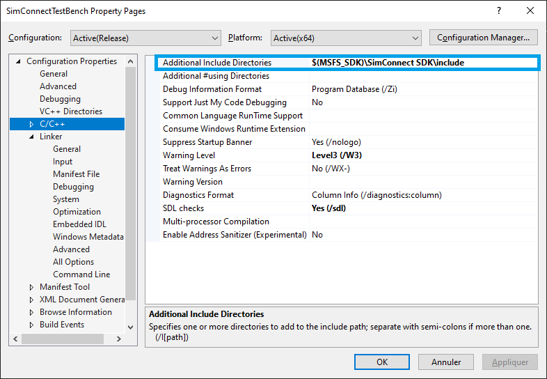
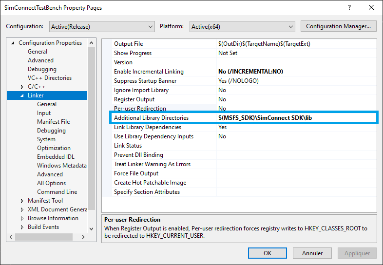
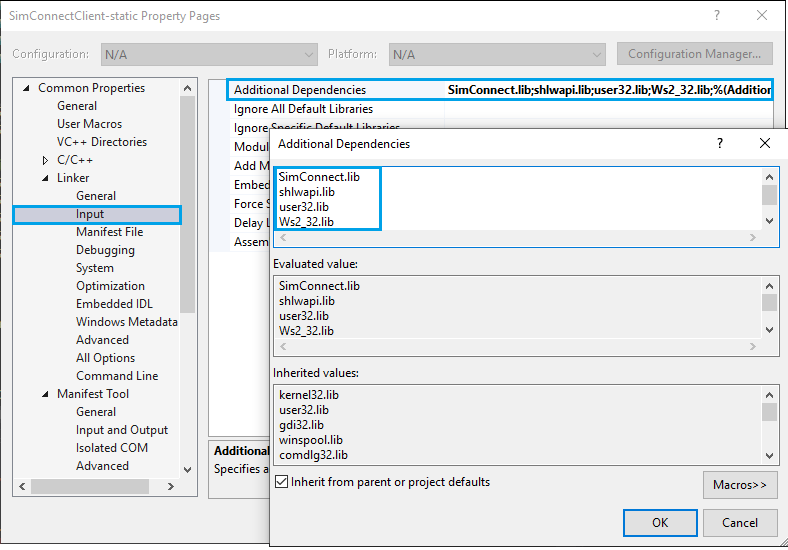

- Overview
- Setup
- SimConnect API Reference
- General Functions
- DispatchProc
- SimConnect_AddToClientDataDefinition
- SimConnect_AddToDataDefinition
- SimConnect_CallDispatch
- SimConnect_ClearClientDataDefinition
- SimConnect_ClearDataDefinition
- SimConnect_ClearInputGroup
- SimConnect_ClearNotificationGroup
- SimConnect_Close
- SimConnect_CreateClientData
- SimConnect_FlightLoad
- SimConnect_FlightPlanLoad
- SimConnect_FlightSave
- SimConnect_GetLastSentPacketID
- SimConnect_GetNextDispatch
- SimConnect_MapClientDataNameToID
- SimConnect_MapClientEventToSimEvent
- SimConnect_MapInputEventToClientEvent
- SimConnect_Open
- SimConnect_RemoveClientEvent
- SimConnect_RemoveInputEvent
- SimConnect_RequestClientData
- SimConnect_RequestDataOnSimObject
- SimConnect_RequestDataOnSimObjectType
- SimConnect_RequestNotificationGroup
- SimConnect_RequestReservedKey
- SimConnect_RequestSystemState
- SimConnect_SetClientData
- SimConnect_SetDataOnSimObject
- SimConnect_SetInputGroupPriority
- SimConnect_SetInputGroupState
- SimConnect_SetNotificationGroupPriority
- SimConnect_SetSystemEventState
- SimConnect_SetSystemState
- SimConnect_SubscribeToSystemEvent
- SimConnect_TransmitClientEvent
- SimConnect_UnsubscribeFromSystemEvent
- Helper Functions
- AI Object Specific Functions
- Camera Specific Functions
- Facilities Specific Functions
- Menu Specific Functions
- Mission Specific Functions
- Weather Specific Functions
- SimConnect Structures and Enumerations
- SimConnect_CLIENT_DATA_PERIOD
- SimConnect_DATATYPE
- SimConnect_DATA_FACILITY_AIRPORT
- SimConnect_DATA_FACILITY_NDB
- SimConnect_DATA_FACILITY_VOR
- SimConnect_DATA_FACILITY_WAYPOINT
- SimConnect_PERIOD
- SimConnect_EXCEPTION
- SimConnect_FACILITY_LIST_TYPE
- SIMCONNECT_RECV
- SIMCONNECT_RECV_AIRPORT_LIST
- SIMCONNECT_RECV_ASSIGNED_OBJECT_ID
- SIMCONNECT_RECV_CLIENT_DATA
- SIMCONNECT_RECV_CLOUD_STATE
- SIMCONNECT_RECV_EVENT
- SIMCONNECT_RECV_EVENT_FILENAME
- SIMCONNECT_RECV_EVENT_FRAME
- SIMCONNECT_RECV_EVENT_OBJECT_ADDREMOVE
- SIMCONNECT_RECV_EXCEPTION
- SIMCONNECT_RECV_FACILITIES_LIST
- SIMCONNECT_RECV_ID
- SIMCONNECT_RECV_NDB_LIST
- SIMCONNECT_RECV_SIMOBJECT_DATA
- SIMCONNECT_RECV_SIMOBJECT_DATA_BYTYPE
- SIMCONNECT_RECV_OPEN
- SIMCONNECT_RECV_RESERVED_KEY
- SIMCONNECT_RECV_SYSTEM_STATE
- SIMCONNECT_RECV_VOR_LIST
- SIMCONNECT_RECV_WAYPOINT_LIST
- SIMCONNECT_SIMOBJECT_TYPE
- SimConnect_STATE
- SimConnect_DATA_INITPOSITION
- SimConnect_DATA_LATLONALT
- SIMCONNECT_DATA_MARKERSTATE
- SimConnect_DATA_WAYPOINT
- SimConnect_DATA_XYZ
- SimConnect_WAYPOINT_FLAGS
- Programming SimConnect Clients using Managed Code
- General Functions
- Working Samples
Note This section of the documentation is a work in progress.
Overview
The SimConnect SDK allows developers to extend the functionality of Microsoft Flight Simulator. Typically the components will perform one or more of the following:
- Add the processing for a new complex gauge, or other instrument, to Microsoft Flight Simulator.
- Replace Microsoft Flight Simulator processing of one or more events with new logic.
- Record or monitor a flight.
- Extend the mission system of Microsoft Flight Simulator.
- Create and set the flight plans for AI (non-user) aircraft.
- Enable new hardware to work with Microsoft Flight Simulator.
- Control an additional camera that the user can optionally select to view.
- Communicate with other SimConnect clients.
See Also
Setup
This section describes how to set up a development environment for SimConnect.
SimConnect Projects
WebAssembly Modules
WebAssembly modules can use SimConnect internally, provided as part of the SDK. It is only required to inlcude "simconnect.h". More information in WebAssembly modules.
C/C++ Projects
To build SimConnect add-ons, the recommended Visual Studio version is Visual Studio 2019, with a minimum version of 2005. To build the project, make sure you have completed the following steps.
For out-of-process applications, start a new Console Application project if the add-on will have no user interface. Start a new MFC Application if the add-on will have a user interface. In either case, set the platform as x64.
In order to use the SimConnect functionality, it is required to include the SimConnect.h header file.
The dependencies can be either configured using the Property Manager, or via Manual Configuration.
Using the Property Manager
The SDK now provides Visual Studio property sheet. It can be included in:
Property Manager -> (select project) -> Add Existing Property Sheet
And selecting the Property Sheet provided in the SDK:
$(MSFS_SDK)\SimConnect SDK\VS\SimConnectClient.props
Manual Configuration
Alternatively, the configuration can be performed manually, by performing the following steps:
- Add the SimConnect include folder (
$(MSFS_SDK)\SimConnect SDK\include) to theAdditional Includes:

- Add the SimConnect the library directory (
$(MSFS_SDK)\SimConnect SDK\lib) to theAdditional Library Directories:

- Link to the
SimConnect.liblibrary, by adding the following dependencies toAdditional dependencies:
- SimConnect.lib
- shlwapi.lib
- user32.lib
- Ws2_32.lib

- Build the application using the function calls described in this document.
C# / .NET / VB.NET Projects
- For C#, or other .NET language add-ons, refer to the special section on Programming SimConnect Clients using Managed Code.
- Build the application using the function calls described in this document.
- An example is given with the SimvarWatcher sample.
Configuration files
There are 3 configuration files associated with SimConnect:
The Server debug config file (SimConnect.ini)
The Client connection config file (SimConnect.cfg)
The Server Config file (SimConnect.xml)
The SimConnect.ini file
The default SimConnect.ini file will enable the debug window and disable the log file. Use a semi-colon to start a comment, or comment out a directive.
| Directive | Values | Description |
|---|---|---|
| level | Verbose, Normal, Warning, Error, Off | Set the level of text communication to be provided to the console, debug string, or log file. |
| console | Yes, No | Open a command line debug window to display server to client communication. |
| OutputDebugString | Yes, No | Sends the output text to the Platform SDK OutputDebugString. Refer to MSDN documentation for more details |
| file | Filename | Output communications to a log file. If the text %03u is included in the filename, then the filename will be incremented each time Flight Simulator starts, so giving a new log file for each test run. Example: file=c:%03u.log |
| file_next_index | Integer | The index of the first log file. Subsequent log files will have the index number incremented by one. |
The SimConnect.cfg file
The SimConnect.cfg file contains communications information for a client (the SimConnect.xml file contains information for a server). This file is only required if a client is going to access Microsoft Flight Simulator running on a remote machine, and should be placed in the same folder as the client application or library, on the computer the client is running on.
The SimConnect.cfg file can contain a number of configurations, identified in sections with the [SimConnect.N] title. The index number is used as a parameter in the SimConnect_Open function. This is useful for applications that communicate with a number of different machines that are running Microsoft Flight Simulator. The default configuration index is zero, and if there is only one configuration in the file, no index number is required.
| Directive | Values | Description |
|---|---|---|
| Protocol | Pipe, IPv4, IPv6 | Pipe uses a Named-Pipes communcation system. The IPv4 and IPv6 protocols are available on computers running Microsoft Windows ®, with IPv4 as the default. IPv6 has more security features and is recommended. If IPv6 is not already installed, there is a utility to install it in the SimConnect SDKfolder. The order in which protocols are evaluated is: Pipe, IPv6, IPv4, Pipe. So, for example, if this entry is set at IPv6, then IPv4 and Pipe will evaluated in that order. The first working protocol found will be used. The advantage of Pipe communication is that it avoids conflict with firewalls and virus protection software when the connection is local, which of course is not the situation if a SimConnect.cfg file is required. |
| Address Port | The Address and Port of the SimConnect server should be entered in these fields, these will be the same values as those in the appropriate Comm section of the Simconnect.xml file. A good knowledge of Windows networking and client/server applications will be needed to set these correctly. The address can be the name of a computer in a Domain Controller environment. | |
| MaxReceiveSize | Integer | The maximum packet size. The default is 8192. If the client receives a packet larger than this size, it will disconnect from the server. |
| DisableNagle | 0, 1 | Set to 1 to disable the Nagle packet optimization algorithms. |
The SimConnect.xml file
This file contains communication information for the SimConnect server (the SimConnect.cfg file contains information for a client).
IMPORTANT: The server behavior has changed from previous versions. In Microsoft Flight Simulator, the support for dynamic ports is deprecated (and no ports are written in the registry), with local connections should prioritize the usage of pipes. In the absence of the server config file (
SimConnect.xml) it will be generated automatically, including the default pipe for backward compatibility port and an additional one dedicated to Microsoft Flight Simulator.
If remote connections are required, then one entry will need to be made in this file to cover each type of remote communication that needs to be supported. (see the sample SimConnect.xml file).
The following table describes the file format.
| XML | Values | Description |
|---|---|---|
| <SimBase.Document Type=“SimConnect” version=“1,0”> | String | SimConnect version information. |
| <Descr>SimConnect</Descr> | String | Description of this file. |
| <Filename>SimConnect.xml</Filename> | String | This filename. |
| <Disabled >False</Disabled> | True, False | Set to True to disable SimConnect completely. |
| <SimConnect.Comm> | Communications section. If remote connections are required, then additional SimConnect.Comm sections should be added, one for each protocol or scope that should be supported. | |
| <Disabled>False</Disabled> | True, False | Set to True to disable this communication section. |
| <Protocol >IPv6</Protocol> | Pipe (or Auto), IPv4, IPv6 | The entry Auto is accepted for backwards compatibility as synonymous with Pipe. The protocol entered here is the only one this particular server will accept. |
| <Scope>local</Scope> | local, global, link-local, unrestricted | For Pipe or IPv4, one of local or global. For IPv6, one of local, link-local, global, or unrestricted. Link-local is an IPv6 mechanism for accessing computers on a network that does not involve traversing a router. Unrestricted enables Teredo tunneling. Refer to Named-Pipe, IPv4 and IPv6 documentation on MSDN for more details. |
| <Address ></Address> <Port> </Port> | The server address and port. These should be copied to the identically named fields in the SimConnect.cfg files for the clients. | |
| <MaxClients></MaxClients> | Integer | Define the maximum number of SimConnect clients that can be active at any one time, using this communication section. |
| <MaxRecvSize></MaxRecvSize> | Integer | The maximum receive packet size, in bytes. The server will disconnect a client that transmits a packet larger than this. |
| <DisableNagle> True</DisableNagle> | True, False | Set to True to disable the Nagle packet sending algorithms. |
| </SimConnect.Comm> | ||
| </SimBase.Document> | ||
Design Considerations
The design of a SimConnect add-on involves writing a client to communicate with a server running within Microsoft Flight Simulator. The client opens up communications with the server, then requests that certain events and certain object information are passed to it. The client then waits for the information to be received from the server, and then processes it appropriately.
The recommended method of writing an add-on is to build it out-of-process, as an application (an .exe file) rather than in-process (a WebAssembly module). This is because out-of-process applications provide more stability, if they crash they will typically will not crash Microsoft Flight Simulator, and are easier to build, test and debug. Out-of-process also supports Managed code, and therefore applications can be written in .NET languages, with their rich support for objects and ease of building the UI. SimConnect clients are not currently thread-safe.
SimConnect makes extensive use of ID numbers defined by the client. There are ID numbers for requests, data definitions, events, groups, and so on. These ID numbers should be unique for the client. Re-using an ID will result in the previous call using that ID becoming obsolete, and ignored by the server.
SimConnect API Reference
This section lists all the API functions, structures, enumerations, and other coding information necessary to build SimConnect clients.
Information on each API call includes some example code. This code does not form a complete program in any sense, but simply highlights the uses of the API call. The Working Samples sections list run-able sample code.
| Function | Description | State |
|---|---|---|
| General | ||
| DispatchProc | Written by the developer of the SimConnect client, as a callback function to handle all the communications with the server | Working |
| SimConnect_Open | Used to send a request to the Flight Simulator server to open up communications with a new client. | Working |
| SimConnect_Close | Used to request that the communication with the server is ended. | Working |
| SimConnect_CallDispatch | Used to process the next SimConnect message received through the specified callback function. | Working |
| SimConnect_GetNextDispatch | Used to process the next SimConnect message received, without the use of a callback function. | Working |
| SimConnect_RequestSystemState | Used to request information from a number of Flight Simulator system components. | Working |
| SimConnect_MapClientEventToSimEvent | Used to associate a client defined event ID with a Flight Simulator event name. | Working |
| SimConnect_SubscribeToSystemEvent | Used to request that a specific system event is notified to the client. | Working |
| SimConnect_UnsubscribeFromSystemEvent | Used to request that notifications are no longer received for the specified system event. | Working |
| SimConnect_SetNotificationGroupPriority | Used to set the priority of a notification group. | Working |
| Events and Data | ||
| SimConnect_RequestDataOnSimObject | Used to request when the SimConnect client is to receive data values for a specific object. | Working |
| SimConnect_RequestDataOnSimObjectType | Used to retrieve information about simulation objects of a given type that are within a specified radius of the user’s aircraft. | Working |
| SimConnect_AddClientEventToNotificationGroup | Used to add an individual client defined event to a notification group. | Working |
| SimConnect_RemoveClientEvent | Used to remove a client defined event from a notification group. | Working |
| SimConnect_TransmitClientEvent | Used to request that the Flight Simulator server transmit to all SimConnect clients the specified client event. | Working |
| SimConnect_MapClientDataNameToID | Used to associate an ID with a named client date area. | Working |
| SimConnect_RequestClientData | Used to request that the data in an area created by another client be sent to this client. | Working |
| SimConnect_CreateClientData | Used to request the creation of a reserved data area for this client. | Working |
| SimConnect_AddToClientDataDefinition | Used to add an offset and a size in bytes, or a type, to a client data definition. | Working |
| SimConnect_AddToDataDefinition | Used to add a Flight Simulator simulation variable name to a client defined object definition. | Working |
| SimConnect_SetClientData | Used to write one or more units of data to a client data area. | Working |
| SimConnect_SetDataOnSimObject | Used to make changes to the data properties of an object. | Working |
| SimConnect_ClearClientDataDefinition | Used to clear the definition of the specified client data. | No error |
| SimConnect_ClearDataDefinition | Used to remove all simulation variables from a client defined object. | No error |
| SimConnect_MapInputEventToClientEvent | Used to connect input events (such as keystrokes, joystick or mouse movements) with the sending of appropriate event notifications. | Working |
| SimConnect_ClearInputGroup | Used to remove all the input events from a specified input group object. | Working |
| SimConnect_ClearNotificationGroup | Used to remove all the client defined events from a notification group. | Working |
| SimConnect_RequestReservedKey | Used to request a specific keyboard TAB-key combination applies only to this client. | no error, no response |
| SimConnect_SetInputGroupPriority | Used to set the priority for a specified input group object. | No error |
| SimConnect_SetInputGroupState | Used to turn requests for input event information from the server on and off. | Working |
| SimConnect_RemoveInputEvent | Used to remove an input event from a specified input group object. | Working |
| AI Object Specific Functions | ||
| SimConnect_AICreateEnrouteATCAircraft | Used to create an AI controlled aircraft that is about to start or is already underway on its flight plan. | Working |
| SimConnect_AICreateNonATCAircraft | Used to create an aircraft that is not flying under ATC control (so is typically flying under VFR rules). | Working |
| SimConnect_AICreateParkedATCAircraft | Used to create an AI controlled aircraft that is currently parked and does not have a flight plan. | Working |
| SimConnect_AICreateSimulatedObject | Used to create AI controlled objects other than aircraft. | Working |
| SimConnect_AIReleaseControl | Used to clear the AI control of a simulated object, typically an aircraft, in order for it to be controlled by a SimConnect client. | Not Tested |
| SimConnect_AIRemoveObject | Used to remove any object created by the client using one of the AI creation functions. | Working |
| SimConnect_AISetAircraftFlightPlan | Used to set or change the flight plan of an AI controlled aircraft. | Working |
| Flight | ||
| SimConnect_FlightLoad | Used to load an existing flight file. | Partially works |
| SimConnect_FlightPlanLoad | Used to load an existing flight plan. | no error, no response |
| SimConnect_FlightSave | Used to save the current state of a flight to a flight file. | no error, no response |
| Debug | ||
| SimConnect_GetLastSentPacketID | Returns the ID of the last packet sent to the SimConnect server. | Working |
| SimConnect_RequestResponseTimes | Used to provide some data on the performance of the client-server connection. | Working |
General Functions
DispatchProc
The DispatchProc function is written by the developer of the SimConnect client, as a callback function to handle all the communications with the server.
Syntax
Parameters
pData
[in] Pointer to a data buffer, to be treated initially as a SIMCONNECT_RECV structure. If you are going to make a copy of the data buffer (which is maintained by the SimConnect client library) make sure that the defined buffer is large enough (the size of the returned data structure is one member of the SIMCONNECT_RECV structure.
cbData
[in] The size of the data buffer, in bytes.
pContext
[in] Contains the pointer specified by the client in the SimConnect_CallDispatch function call.
Return Values
This function does not return a value.
Example
void CALLBACK MyDispatchProc(SIMCONNECT_RECV* pData, DWORD cbData)
{
case SIMCONNECT_RECV_ID_OPEN:
SIMCONNECT_RECV_OPEN *openData = (SIMCONNECT_RECV_OPEN*) pData;
break;
case SIMCONNECT_RECV_ID_EVENT:
SIMCONNECT_RECV_EVENT *evt = (SIMCONNECT_RECV_EVENT*) pData;
break;
case SIMCONNECT_RECV_ID_EVENT_FILENAME:
SIMCONNECT_RECV_EVENT_FILENAME *evt = (SIMCONNECT_RECV_EVENT_FILENAME)*) pData;
break;
case SIMCONNECT_RECV_ID_EVENT_OBJECT_ADDREMOVE:
SIMCONNECT_RECV_EVENT_OBJECT_ADDREMOVE *evt = (SIMCONNECT_RECV_EVENT_OBJECT_ADDREMOVE*) pData;
break;
case SIMCONNECT_RECV_ID_EVENT_FRAME:
SIMCONNECT_RECV_EVENT_FRAME *evt = (SIMCONNECT_RECV_EVENT_FRAME*) pData;
break;
case SIMCONNECT_RECV_ID_SIMOBJECT_DATA:
SIMCONNECT_RECV_SIMOBJECT_DATA *pObjData = (SIMCONNECT_RECV_SIMOBJECT_DATA*) pData;
break;
case SIMCONNECT_RECV_ID_SIMOBJECT_DATA_BYTYPE:
SIMCONNECT_RECV_SIMOBJECT_DATA_BYTYPE *pObjData = (SIMCONNECT_RECV_SIMOBJECT_DATA_BYTYPE*) pData;
break;
case SIMCONNECT_RECV_ID_QUIT:
case SIMCONNECT_RECV_ID_EXCEPTION:
SIMCONNECT_RECV_EXCEPTION *except = (SIMCONNECT_RECV_EXCEPTION*) pData;
break;
case SIMCONNECT_RECV_ID_WEATHER_OBSERVATION:
SIMCONNECT_RECV_WEATHER_OBSERVATION* pWxData = (SIMCONNECT_RECV_WEATHER_OBSERVATION*) pData;
const char* pszMETAR = (const char*) (pWxData+1);
break;
default:
break;
}Working Samples
| Primary samples | Client Event Joystick Input Send Event A Send Event B Send Event C Tracking Errors |
| Reference samples | Many of the other samples implement this function. |
Remarks
This function can be named appropriately by the client developer. The name of the function is passed to the client-side library with the SimConnect_CallDispatch function call. Handle all the callback events in this function. If you do not wish to implement a callback function use SimConnect_GetNextDispatch.
To receive time based notifications, see the SimConnect_SubscribeToSystemEvent function. To receive event based notifications see the SimConnect_AddClientEventToNotificationGroup function. To send an event to be received by other clients, see the SimConnect_TransmitClientEvent function.
See Also
SimConnect_AddClientEventToNotificationGroup
The SimConnect_AddClientEventToNotificationGroup function is used to add an individual client defined event to a notification group.
Syntax
HRESULT SimConnect_AddClientEventToNotificationGroup(
HANDLE hSimConnect,
SIMCONNECT_NOTIFICATION_GROUP_ID GroupID,
SIMCONNECT_CLIENT_EVENT_ID EventID,
BOOL bMaskable = FALSE
);Parameters
hSimConnect
[in] Handle to a SimConnect object.
GroupID
[in] Specifies the ID of the client defined group.
EventID
[in] Specifies the ID of the client defined event.
bMaskable
[in, optional] Boolean, True indicates that the event will be masked by this client and will not be transmitted to any more clients, possibly including Microsoft Flight Simulator itself (if the priority of the client exceeds that of Flight Simulator). False is the default. See the explanation of SimConnect Priorities.
Return Values
The function returns an HRESULT. Possible values include, but are not limited to, those in the following table.
| Return value | Description |
|---|---|
| S_OK | The function succeeded. |
| E_FAIL | The function failed. |
Example
static enum EVENT_ID {
EVENT_1,
EVENT_2
EVENT_3
};
static enum GROUP_ID {
GROUP_1,
};
hr = SimConnect_AddClientEventToNotificationGroup(hSimConnect, GROUP_1, EVENT_1);
hr = SimConnect_AddClientEventToNotificationGroup(hSimConnect, GROUP_1, EVENT_2);
hr = SimConnect_AddClientEventToNotificationGroup(hSimConnect, GROUP_1, EVENT_3, TRUE);
hr = SimConnect_SetNotificationGroupPriority(hSimConnect, GROUP_1, SIMCONNECT_GROUP_PRIORITY_HIGHEST);Working Samples
| Primary samples | Client Event Joystick Input Send Event A Send Event B Send Event C Tracking Errors |
| Reference samples | Many of the other samples implement this function. |
Remarks
The maximum number of events that can be added to a notification group is 1000. A notification group is simply a convenient way of setting the appropriate priority for a range of events, and all client events (such as EVENT_1, EVENT_2, EVENT_3 in the example above) must be assigned to a notification group before any event notifications will be received from the SimConnect server.
See Also
- SimConnect API Reference
- SimConnect_RemoveClientEvent
- SimConnect_SetNotificationGroupPriority
- SimConnect_ClearNotificationGroup
SimConnect_AddToClientDataDefinition
The SimConnect_AddToClientDataDefinition function is used to add an offset and a size in bytes, or a type, to a client data definition.
Syntax
HRESULT SimConnect_AddToClientDataDefinition(
HANDLE hSimConnect,
SIMCONNECT_CLIENT_DATA_DEFINITION_ID DefineID,
DWORD dwOffset,
DWORD dwSizeOrType,
float fEpsilon = 0,
DWORD DatumID = SIMCONNECT_UNUSED
);Parameters
hSimConnect
[in] Handle to a SimConnect object.
DefineID
[in] Specifies the ID of the client-defined client data definition.
dwOffset
[in] Double word containing the offset into the client area, where the new addition is to start. Set this to SIMCONNECT_CLIENTDATAOFFSET_AUTO for the offsets to be calculated by the SimConnect server.
dwSizeOrType
[in] Double word containing either the size of the client data in bytes, or one of the following defined values (note that these definitions have a negative value, all positive values will be treated as a size parameter.
| Constant | Value |
|---|---|
| SIMCONNECT_CLIENTDATATYPE_INT8 | -1 |
| SIMCONNECT_CLIENTDATATYPE_INT16 | -2 |
| SIMCONNECT_CLIENTDATATYPE_INT32 | -3 |
| SIMCONNECT_CLIENTDATATYPE_INT64 | -4 |
| SIMCONNECT_CLIENTDATATYPE_FLOAT32 | -5 |
| SIMCONNECT_CLIENTDATATYPE_FLOAT64 | -6 |
fEpsilon
[in, optional] If data is requested only when it changes (see the flags parameter of SimConnect_RequestClientData, a change will only be reported if it is greater than the value of this parameter (not greater than or equal to). The default is zero, so even the tiniest change will initiate the transmission of data. Set this value appropriately so insignificant changes are not transmitted. This can be used with integer data, the floating point fEpsilon value is first truncated to its integer component before the comparison is made (for example, an fEpsilon value of 2.9 truncates to 2, so a data change of 2 will not trigger a transmission, and a change of 3 will do so). This parameter only applies if one of the six constant values listed above has been set in the dwSizeOrType parameter, if a size has been specified SimConnect has no record of the type of data being sent, so cannot do a meaningful comparison of values.
DatumID
[in, optional] Specifies a client defined datum ID. The default is zero. Use this to identify the data received if the data is being returned in tagged format (see the flags parameter of SimConnect_RequestClientData. There is no need to specify datum IDs if the data is not being returned in tagged format.
Return Values
The function returns an HRESULT. Possible values include, but are not limited to, those in the following table.
| Return value | Description |
|---|---|
| S_OK | The function succeeded. |
| E_FAIL | The function failed. |
Remarks
This function must be called before a client data area can be written to or read from. Typically this function would be called once for each variable that is going to be read or written. Note that an error will not be given if the size of a data definition exceeds the size of the client area - this is to allow for the case where definitions are specified by one client before the relevant client area is created by another.
The most efficient use of client data areas is to group data that changes at the same time into the same data area. Minor performance improvements are gained by not using tagged data, or the fEpsilon parameter, if they are not needed.
Note that this function has been updated for the SP1a release of the SDK. Clients written for the previous version of this function will still compile and run, this new function simply expands on the functionality provided.
See Also
- SimConnect_ClearClientDataDefinition
- SimConnect_CreateClientData
- SimConnect_MapClientDataNameToID
- SimConnect_RequestClientData
- SimConnect_SetClientData
- SimConnect API Reference
SimConnect_AddToDataDefinition
The SimConnect_AddToDataDefinition function is used to add a Microsoft Flight Simulator simulation variable name to a client defined object definition.
Syntax
HRESULT SimConnect_AddToDataDefinition(
HANDLE hSimConnect,
SIMCONNECT_DATA_DEFINITION_ID DefineID,
const char* DatumName,
const char* UnitsName,
SIMCONNECT_DATATYPE DatumType = SIMCONNECT_DATATYPE_FLOAT64,
float fEpsilon = 0,
DWORD DatumID = SIMCONNECT_UNUSED
);Parameters
hSimConnect
[in] Handle to a SimConnect object.
DefineID
[in] Specifies the ID of the client defined data definition.
DatumName
[in] Specifies the name of the Microsoft Flight Simulator simulation variable. See the Simulation Variables document for a table of variable names. If an index is required then it should be appended to the variable name following a colon, see the example for DEFINITION_2 below. Indexes are numbered from 1 (not zero). Simulation variable names are not case-sensitive (so can be entered in upper or lower case).
UnitsName
[in] Specifies the units of the variable. See the Simulation Variables document for a table of acceptable unit names. It is possible to specify different units to receive the data in, from those specified in the Simulation Variables document. See DEFINITION_2 below for an example. The alternative units must come under the same heading (such as Angular Velocity, or Volume, as specified in the Units of Measurement section of the Simulation Variables document). For strings and structures enter "NULL" for this parameter.
DatumType
[in, optional] One member of the SIMCONNECT_DATATYPE enumeration type. This parameter is used to determine what datatype should be used to return the data. The default is SIMCONNECT_DATATYPE_FLOAT64. Note that the structure data types are legitimate parameters here.
fEpsilon
[in, optional] If data is requested only when it changes (see the flags parameter of SimConnect_RequestDataOnSimObject, a change will only be reported if it is greater than the value of this parameter (not greater than or equal to). The default is zero, so even the tiniest change will initiate the transmission of data. Set this value appropriately so insignificant changes are not transmitted. This can be used with integer data, the floating point fEpsilon value is first truncated to its integer component before the comparison is made (for example, an fEpsilon value of 2.9 truncates to 2, so a data change of 2 will not trigger a transmission, and a change of 3 will do so).
DatumID
[in, optional] Specifies a client defined datum ID. The default is zero. Use this to identify the data received if the data is being returned in tagged format (see the flags parameter of SimConnect_RequestDataOnSimObject. There is no need to specify datum IDs if the data is not being returned in tagged format.
Return Values
The function returns an HRESULT. Possible values include, but are not limited to, those in the following table.
| Return value | Description |
|---|---|
| S_OK | The function succeeded. |
| E_FAIL | The function failed. |
Example
static enum DATA_DEFINE_ID {
DEFINITION_1,
DEFINITION_2
};
static enum DATA_REQUEST_ID {
REQUEST_1,
REQUEST_2,
};
struct Struct1
{
double kohlsmann;
double altitude;
double latitude;
double longitude;
};
hr = SimConnect_AddToDataDefinition(hSimConnect, DEFINITION_1, "Kohlsman setting hg", "inHg");
hr = SimConnect_AddToDataDefinition(hSimConnect, DEFINITION_1, "Indicated Altitude", "feet");
hr = SimConnect_AddToDataDefinition(hSimConnect, DEFINITION_1, "Plane Latitude", "degrees");
hr = SimConnect_AddToDataDefinition(hSimConnect, DEFINITION_1, "Plane Longitude", "degrees");
hr = SimConnect_AddToDataDefinition(hSimConnect, DEFINITION_2, "GENERAL ENG RPM:1", "rpm");
hr = SimConnect_AddToDataDefinition(hSimConnect, DEFINITION_2, "GENERAL ENG RPM:2", "revolutions per minute");
hr = SimConnect_AddToDataDefinition(hSimConnect, DEFINITION_2, "GENERAL ENG RPM:3", "degrees per second");
hr = SimConnect_AddToDataDefinition(hSimConnect, DEFINITION_2, "GENERAL ENG RPM:4", "minutes per round");
....
hr = SimConnect_RequestDataOnSimObject(hSimConnect, REQUEST_1, DEFINITION_1, SIMCONNECT_OBJECT_ID_USER, SIMCONNECT_PERIOD_ONCE);
....
case SIMCONNECT_RECV_ID_SIMOBJECT_DATA:
{
SIMCONNECT_RECV_SIMOBJECT_DATA *pObjData = (SIMCONNECT_RECV_SIMOBJECT_DATA*)pData;
switch(pObjData->dwRequestID)
{
case REQUEST_1:
Struct1 *pS = (Struct1*)&pObjData->dwData;
break;
}
break;
}Working Samples
| Primary samples | Request Data Set Data Tagged Data Throttle Control |
Remarks
The maximum number of entries in a data definition is 1000.
See Also
- SimConnect API Reference
- SimConnect_ClearDataDefinition
- SimConnect_RequestDataOnSimObject
- SimConnect_RequestDataOnSimObjectType
SimConnect_CallDispatch
The SimConnect_CallDispatch function is used to process the next SimConnect message received, through the specified callback function.
Syntax
Parameters
hSimConnect
[in] Handle to a SimConnect object.
pfcnDispatch
[in] Specifies the callback function. For a definition of the function see DispatchProc.
pContext
[in] Specifies a pointer that the client can define that will be returned in the callback. This is used in particular by managed code clients to pass a this pointer to the callback.
Return Values
The function returns an HRESULT. Possible values include, but are not limited to, those in the following table.
| Return value | Description |
|---|---|
| S_OK | The function succeeded. |
| E_FAIL | The function failed. |
Example
int quit = 0;
while( quit == 0 ) {
hr = SimConnect_CallDispatch(hSimConnect, MyDispatchProc, NULL);
};Working Samples
| Primary samples | Client Event Tracking Errors |
| Reference samples | All but a few of the other samples implement this function. |
Remarks
It is important to call this function sufficiently frequently that the queue of information received from the server is processed (typically it is coded within a while loop that terminates when the application is exited).
See Also
SimConnect_ClearClientDataDefinition
The SimConnect_ClearClientDataDefinition function is used to clear the definition of the specified client data.
Syntax
HRESULT SimConnect_ClearClientDataDefinition(
HANDLE hSimConnect,
SIMCONNECT_CLIENT_DATA_DEFINITION_ID DefineID
);Parameters
hSimConnect
[in] Handle to a SimConnect object.
DefineID
[in] Specifies the ID of the client defined client data definition.
Return Values
The function returns an HRESULT. Possible values include, but are not limited to, those in the following table.
| Return value | Description |
|---|---|
| S_OK | The function succeeded. |
| E_FAIL | The function failed. |
Remarks
None.
See Also
- SimConnect_AddToClientDataDefinition
- SimConnect_CreateClientData
- SimConnect_MapClientDataNameToID
- SimConnect_RequestClientData
- SimConnect_SetClientData
- SimConnect API Reference
SimConnect_ClearDataDefinition
The SimConnect_ClearDataDefinition function is used to remove all simulation variables from a client defined data definition.
Syntax
HRESULT SimConnect_ClearDataDefinition(
HANDLE hSimConnect,
SIMCONNECT_DATA_DEFINITION_ID DefineID
);Parameters
hSimConnect
[in] Handle to a SimConnect object.
DefineID
[in] Specifies the ID of the client defined data definition.
Return Values
The function returns an HRESULT. Possible values include, but are not limited to, those in the following table.
| Return value | Description |
|---|---|
| S_OK | The function succeeded. |
| E_FAIL | The function failed. |
Example
static enum DATA_DEFINE_ID {
DEFINITION_1,
DEFINITION_2
};
....
hr = SimConnect_AddToDataDefinition(hSimConnect, DEFINITION_1, "Kohlsman setting hg", "inHg");
hr = SimConnect_AddToDataDefinition(hSimConnect, DEFINITION_1, "Indicated Altitude", "feet");
hr = SimConnect_AddToDataDefinition(hSimConnect, DEFINITION_1, "Plane Latitude", "degrees");
hr = SimConnect_AddToDataDefinition(hSimConnect, DEFINITION_1, "Plane Longitude", "degrees");
....
hr = SimConnect_ClearDataDefinition(hSimConnect, DEFINITION_1);
....Remarks
Use this function to permanently delete a data definition. To temporarily suspend data requests see the remarks for the SimConnect_RequestDataOnSimObject function.
See Also
- SimConnect API Reference
- SimConnect_AddToDataDefinition
- SimConnect_RequestDataOnSimObject
- SimConnect_RequestDataOnSimObjectType
SimConnect_ClearInputGroup
The SimConnect_ClearInputGroup function is used to remove all the input events from a specified input group object.
Syntax
Parameters
hSimConnect
[in] Handle to a SimConnect object.
GroupID
[in] Specifies the ID of the client defined input group that is to have all its events removed.
Return Values
The function returns an HRESULT. Possible values include, but are not limited to, those in the following table.
| Return value | Description |
|---|---|
| S_OK | The function succeeded. |
| E_FAIL | The function failed. |
Example
static enum INPUT_ID {
INPUT_1,
};
static enum EVENT_ID {
EVENT_1,
};
hr = SimConnect_MapClientEventToSimEvent(hSimConnect, EVENT_1, "parking_brakes");
hr = SimConnect_MapInputEventToClientEvent(hSimConnect, INPUT_1, "a+B", EVENT_1);
....
hr = SimConnect_ClearInputGroup(hSimConnect, INPUT_1);Remarks
Use this function to permanently delete an input group. Use the SimConnect_SetInputGroupState function to temporarily suspend input group notifications.
See Also
- SimConnect API Reference
- SimConnect_MapInputEventToClientEvent
- SimConnect_SetInputGroupPriority
- SimConnect_RemoveInputEvent
- SimConnect_SetInputGroupState
SimConnect_ClearNotificationGroup
The SimConnect_ClearNotificationGroup function is used to remove all the client defined events from a notification group.
Syntax
HRESULT SimConnect_ClearNotificationGroup(
HANDLE hSimConnect,
SIMCONNECT_NOTIFICATION_GROUP_ID GroupID
);Parameters
hSimConnect
[in] Handle to a SimConnect object.
GroupID
[in] Specifies the ID of the client defined group that is to have all its events removed.
Return Values
The function returns an HRESULT. Possible values include, but are not limited to, those in the following table.
| Return value | Description |
|---|---|
| S_OK | The function succeeded. |
| E_FAIL | The function failed. |
Example
static enum EVENT_ID {
EVENT_1,
EVENT_2
EVENT_3
};
static enum GROUP_ID {
GROUP_1,
};
hr = SimConnect_AddClientEventToNotificationGroup(hSimConnect, GROUP_1, EVENT_1);
hr = SimConnect_AddClientEventToNotificationGroup(hSimConnect, GROUP_1, EVENT_2);
hr = SimConnect_AddClientEventToNotificationGroup(hSimConnect, GROUP_1, EVENT_3, TRUE);
hr = SimConnect_ClearNotificationGroup(hSimConnect, GROUP_1);Remarks
There is a maximum of 20 notification groups in any SimConnect client. Use this function if the maximum has been reached, but one or more are not longer required.
See Also
- SimConnect API Reference
- SimConnect_AddClientEventToNotificationGroup
- SimConnect_RemoveClientEvent
- SimConnect_SetNotificationGroupPriority
SimConnect_Close
The SimConnect_Close function is used to request that the communication with the server is ended.
Syntax
Parameters
hSimConnect
[in] Handle to a SimConnect object.
Return Values
The function returns an HRESULT. Possible values include, but are not limited to, those in the following table.
| Return value | Description |
|---|---|
| S_OK | The function succeeded. |
| E_FAIL | The function failed. This should only happen if a the hSimConnect parameter is erroneous. |
Example
Working Samples
| Primary samples | Open and Close Windows Event |
| Reference samples | All other samples implement this function. |
Remarks
When a SimConnect client is closed, the server will remove all objects, menu items, group definitions and so on, defined or requested by that client, so there is no need to remove them explicitly in the client code.
See Also
SimConnect_CreateClientData
The SimConnect_CreateClientData function is used to request the creation of a reserved data area for this client.
Syntax
HRESULT SimConnect_CreateClientData(
HANDLE hSimConnect,
SIMCONNECT_CLIENT_DATA_ID ClientDataID,
DWORD dwSize,
SIMCONNECT_CREATE_CLIENT_DATA_FLAG Flags
);Parameters
hSimConnect
[in] Handle to a SimConnect object.
ClientDataID
[in] ID of the client data area. Before calling this function, call SimConnect_MapClientDataNameToID to map an ID to a unique client area name.
dwSize
[in] Double word containing the size of the data area in bytes.
Flags
[in] Specify the flag SIMCONNECT_CREATE_CLIENT_DATA_FLAG_READ_ONLY if the data area can only be written to by this client (the client creating the data area). By default other clients can write to this data area.
Return Values
The function returns an HRESULT. Possible values include, but are not limited to, those in the following table.
| Return value | Description |
|---|---|
| S_OK | The function succeeded. |
| E_FAIL | The function failed. |
Remarks
Use this function, along with the other client data functions, to reserve an area of memory for client data on the server, that other clients can have read (or read and write) access to. Specify the contents of the data area with the SimConnect_AddToClientDataDefinition call, and set the actual values with a call to SimConnect_SetClientData. Other clients can receive the data with a call to SimConnect_RequestClientData.
The maximum size of a client data area is set by the constant SIMCONNECT_CLIENTDATA_MAX_SIZE. For the RTM version of Flight Simulator X this was 4K, for the SP1A update to the SDK it is 8K. If an add-on is to work with the RTM version, a 4K limit should be adhered to. There is no maximum number of client data areas, but the total must not exceed 1Mbyte for the SP1A update, or 100K for the RTM version. If a request is made for a client data area greater than SIMCONNECT_CLIENTDATA_MAX_SIZE a SIMCONNECT_EXCEPTION_INVALID_DATA_SIZE exception is returned. If a request is made for a client data area that will exceed the total maximum memory a SIMCONNECT_EXCEPTION_OUT_OF_BOUNDS exception is returned.
One client area can be referenced by any number of client data definitions. Typically the name of the client area, and the data definitions, should be published appropriately so other clients can be written to use them. Care should be taken to give the area a unique name.
Once created, a client data area cannot be deleted or reduced in size. To increase the size of the data area, first close the connection, then re-open it and request the client data area again, using the same name, but with the required size. The additional data area will be initialized to zero, but the previous data will be untouched by this process. Client data persists to the end of the Microsoft Flight Simulator session, and is not removed when the client that created it is closed. It is also possible to change a read-only data area to write-able using this technique.
See Also
- SimConnect_AddToClientDataDefinition
- SimConnect_ClearClientDataDefinition
- SimConnect_MapClientDataNameToID
- SimConnect_RequestClientData
- SimConnect_SetClientData
- SimConnect API Reference
SimConnect_FlightLoad
The SimConnect_FlightLoad function is used to load an existing flight file.
Syntax
Parameters
hSimConnect
[in] Handle to a SimConnect object.
szFileName
[in] Null-terminated string containing the path to the flight file.
Return Values
The function returns an HRESULT. Possible values include, but are not limited to, those in the following table.
| Return value | Description |
|---|---|
| S_OK | The function succeeded. |
| E_FAIL | The function failed. |
Remarks
Flight files can be opened using a text editor.
See Also
SimConnect_FlightPlanLoad
The SimConnect_FlightPlanLoad function is used to load an existing flight plan file.
STATUS: NO ERROR, NO RESPONSE
Syntax
Parameters
hSimConnect
[in] Handle to a SimConnect object.
szFileName
[in] Null-terminated string containing the path to the flight plan file. Flight plans have the extension .PLN, but no need to enter an extension here. There is no need to enter the full path to the file (just enter the filename) if the flight file is in the default Flight Simulator X Files directory. The easiest way to create flight plans is to create them from within Microsoft Flight Simulator itself, and then save them off for use by the user or AI controlled aircraft.
Return Values
The function returns an HRESULT. Possible values include, but are not limited to, those in the following table.
| Return value | Description |
|---|---|
| S_OK | The function succeeded. |
| E_FAIL | The function failed. |
Remarks
Flight plan files can be opened using a text editor.
See Also
SimConnect_FlightSave
The SimConnect_FlightSave function is used to save the current state of a flight to a flight file.
STATUS: NO ERROR, NO RESPONSE
Syntax
HRESULT SimConnect_FlightSave(
HANDLE hSimConnect,
const char* szFileName,
const char* szDescription,
DWORD Flags
);Parameters
hSimConnect
[in] Handle to a SimConnect object.
szFileName
[in] Null-terminated string containing the path to the flight file. The path can either be absolute, or relative to the My Documents\Flight Simulator X folder. Flight files have the extension .FLT, but no need to enter an extension here.
szTitle
[in] Null-terminated string containing the title of the flight file. If this is NULL then the szFileName parameter is used as the title.
szDescription
[in] Null-terminated string containing the text to enter in the Description field of the flight file.
Flags
[in] Unused.
Return Values
The function returns an HRESULT. Possible values include, but are not limited to, those in the following table.
| Return value | Description |
|---|---|
| S_OK | The function succeeded. |
| E_FAIL | The function failed. |
Remarks
Flight files can be opened using a text editor.
See Also
SimConnect_GetLastSentPacketID
The SimConnect_GetLastSentPacketID function returns the ID of the last packet sent to the SimConnect server.
Syntax
Parameters
hSimConnect
[in] Handle to a SimConnect object.
pdwSendID
[out] Pointer to a double word containing the ID of the last sent packet.
Return Values
The function returns an HRESULT. Possible values include, but are not limited to, those in the following table.
| Return value | Description |
|---|---|
| S_OK | The function succeeded. |
| E_FAIL | The function failed. |
Example
DWORD dwLastID;
hr = SimConnect_MapClientEventToSimEvent(hSimConnect, EVENT_MY_EVENT, "Custom.Event");
hr = SimConnect_TransmitClientEvent(hSimConnect, 0, EVENT_MY_EVENT, 0, SIMCONNECT_GROUP_PRIORITY_HIGHEST, 0);
hr = SimConnect_GetLastSentPacketID(hSimConnect, &dwLastID);Working Sample
| Primary sample | Tracking Errors |
Remarks
This function should be used in conjunction with returned structures of type SIMCONNECT_RECV_EXCEPTION to help pinpoint errors (exceptions) returned by the server. This is done by matching the send ID returned with the exception, with the number returned by this function and stored appropriately. This function is primarily intended to be used while debugging and testing the client application, rather than in a final retail build.
See Also
SimConnect_GetNextDispatch
The SimConnect_GetNextDispatch function is used to process the next SimConnect message received, without the use of a callback function.
Syntax
Parameters
hSimConnect
[in] Handle to a SimConnect object.
ppData
[in] Pointer to a pointer to a data buffer, initially to be treated as a SIMCONNECT_RECV structure. If you are going to make a copy of the data buffer (which is maintained by the SimConnect client library) make sure that the defined buffer is large enough (the size of the returned data structure is one member of the SIMCONNECT_RECV structure.
pcbData
[in] Pointer to the size of the data buffer, in bytes.
Return Values
The function returns an HRESULT. Possible values include, but are not limited to, those in the following table.
| Return value | Description |
|---|---|
| S_OK | The function succeeded. |
| E_FAIL | The function failed. |
Example
SIMCONNECT_RECV* pData;
DWORD cbData;
hr = SimConnect_GetNextDispatch(hSimConnect, &pData, &cbData);
if (SUCCEEDED(hr))
{
switch(pData->dwID)
{
case SIMCONNECT_RECV_ID_OPEN:
SIMCONNECT_RECV_OPEN *openData = (SIMCONNECT_RECV_OPEN*) pData;
break;
case SIMCONNECT_RECV_ID_EVENT:
SIMCONNECT_RECV_EVENT *evt = (SIMCONNECT_RECV_EVENT*) pData;
break;
case SIMCONNECT_RECV_ID_EVENT_FILENAME:
SIMCONNECT_RECV_EVENT_FILENAME *evt = (SIMCONNECT_RECV_EVENT_FILENAME*) pData;
break;
case SIMCONNECT_RECV_ID_EVENT_OBJECT_ADDREMOVE:
SIMCONNECT_RECV_EVENT_OBJECT_ADDREMOVE *evt = (SIMCONNECT_RECV_EVENT_OBJECT_ADDREMOVE*) pData;
break;
case SIMCONNECT_RECV_ID_EVENT_FRAME:
SIMCONNECT_RECV_EVENT_FRAME *evt = (SIMCONNECT_RECV_EVENT_FRAME*) pData;
break;
case SIMCONNECT_RECV_ID_SIMOBJECT_DATA:
SIMCONNECT_RECV_SIMOBJECT_DATA *pObjData = (SIMCONNECT_RECV_SIMOBJECT_DATA*) pData;
break;
case SIMCONNECT_RECV_ID_SIMOBJECT_DATA_BYTYPE:
SIMCONNECT_RECV_SIMOBJECT_DATA_BYTYPE *pObjData = (SIMCONNECT_RECV_SIMOBJECT_DATA_BYTYPE*) pData;
break;
case SIMCONNECT_RECV_ID_QUIT:
break;
case SIMCONNECT_RECV_ID_EXCEPTION:
SIMCONNECT_RECV_EXCEPTION *except = (SIMCONNECT_RECV_EXCEPTION*) pData;
break;
case SIMCONNECT_RECV_ID_WEATHER_OBSERVATION:
SIMCONNECT_RECV_WEATHER_OBSERVATION* pWxData = (SIMCONNECT_RECV_WEATHER_OBSERVATION*) pData;
const char* pszMETAR = (const char*) (pWxData+1);
break;
default:
break;
}
}Working Sample
| Primary sample | No Callback |
Remarks
It is important to call this function sufficiently frequently that the queue of information received from the server is processed. If there are no messages in the queue, the [dwID] parameter will be set to SIMCONNECT_RECV_ID_NULL.
See Also
SimConnect_MapClientDataNameToID
The SimConnect_MapClientDataNameToID function is used to associate an ID with a named client data area.
Syntax
HRESULT SimConnect_MapClientDataNameToID(
HANDLE hSimConnect,
const char* szClientDataName,
SIMCONNECT_CLIENT_DATA_ID ClientDataID
);Parameters
hSimConnect
[in] Handle to a SimConnect object.
szClientDataName
[in] Null-terminated string containing the client data area name. This is the name that another client will use to specify the data area. The name is not case-sensitive. If the name requested is already in use by another addon, a SIMCONNECT_EXCEPTION_ALREADY_CREATED error will be returned.
ClientDataID
[in] A unique ID for the client data area, specified by the client. If the ID number is already in use, the SIMCONNECT_EXCEPTION_DUPLICATE_ID error will be returned.
Return Values
The function returns an HRESULT. Possible values include, but are not limited to, those in the following table.
| Return value | Description |
|---|---|
| S_OK | The function succeeded. |
| E_FAIL | The function failed. |
Remarks
This function should be called once for each client data area: the client setting up the data should call it just before a call to SimConnect_CreateClientData, and the clients requesting the data should call it before any calls to SimConnect_RequestClientData are made. The name given to a client data area must be unique, however by mapping an ID number to the name, calls to the functions to set and request the data are made more efficient.
See Also
- SimConnect_AddToClientDataDefinition
- SimConnect_ClearClientDataDefinition
- SimConnect_CreateClientData
- SimConnect_RequestClientData
- SimConnect_SetClientData
- SimConnect API Reference
SimConnect_MapClientEventToSimEvent
The SimConnect_MapClientEventToSimEvent function associates a client defined event ID with a Microsoft Flight Simulator event name.
Syntax
HRESULT SimConnect_MapClientEventToSimEvent(
HANDLE hSimConnect,
SIMCONNECT_CLIENT_EVENT_ID EventID,
const char* EventName
);Parameters
hSimConnect
[in] Handle to a SimConnect object.
EventID
[in] Specifies the ID of the client event.
EventName
[in] Specifies the Microsoft Flight Simulator event name. Refer to the Event IDs document for a list of event names (listed under String Name). If the event name includes one or more periods (such as "Custom.Event" in the example below) then they are custom events specified by the client, and will only be recognized by another client (and not Microsoft Flight Simulator) that has been coded to receive such events. No Microsoft Flight Simulator events include periods. If no entry is made for this parameter, the event is private to the client.
Alternatively enter a decimal number in the format "#nnnn" or a hex number in the format "#0xnnnn", where these numbers are in the range THIRD_PARTY_EVENT_ID_MIN and THIRD_PARTY_EVENT_ID_MAX, in order to receive events from third-party add-ons to Flight Simulator X.
Return Values
The function returns an HRESULT. Possible values include, but are not limited to, those in the following table.
| Return value | Description |
|---|---|
| S_OK | The function succeeded. |
| E_FAIL | The function failed. |
Example
static enum EVENT_ID {
EVENT_PAUSE,
EVENT_BRAKES,
EVENT_CUSTOM,
EVENT_PRIVATE,
};
hr = SimConnect_MapClientEventToSimEvent(hSimConnect, EVENT_BRAKES, "brakes");
hr = SimConnect_MapClientEventToSimEvent(hSimConnect, EVENT_PAUSE, "pause_toggle");
hr = SimConnect_MapClientEventToSimEvent(hSimConnect, EVENT_CUSTOM, "Custom.Event");
hr = SimConnect_MapClientEventToSimEvent(hSimConnect, EVENT_PRIVATE);Working Samples
| Primary samples | Client Event Joystick Input Send Event A Send Event B Send Event C Set Data Throttle Control Tracking Errors |
| Reference samples | All but a few of the other samples implement this function. |
Remarks
Client events, such as EVENT_BRAKES, must be added to a group event (to set the appropriate priority) before event notifications will be received from the SimConnect server (see the SimConnect_AddClientEventToNotificationGroup function).
See Also
SimConnect_MapInputEventToClientEvent
STATUS: NOT ALL INPUT IDS HAVE BEEN TESTED
See Status of SimConnect Input Events
The SimConnect_MapInputEventToClientEvent function is used to connect input events (such as keystrokes, joystick or mouse movements) with the sending of appropriate event notifications.
Syntax
HRESULT SimConnect_MapInputEventToClientEvent(
HANDLE hSimConnect,
SIMCONNECT_INPUT_GROUP_ID GroupID,
const char* pszInputDefinition,
SIMCONNECT_CLIENT_EVENT_ID DownEventID,
DWORD DownValue = 0,
SIMCONNECT_CLIENT_EVENT_ID UpEventID =(SIMCONNECT_CLIENT_EVENT_ID)SIMCONNECT_UNUSED,
DWORD UpValue = 0,
BOOL bMaskable = FALSE
);Parameters
hSimConnect
[in] Handle to a SimConnect object.
GroupID
[in] Specifies the ID of the client defined input group that the input event is to be added to.
pszInputDefinition
[in] Pointer to a null-terminated string containing the definition of the input events (keyboard keys, mouse or joystick events, for example). See the Remarks and example below for a range of possibilities.
DownEventID
[in] Specifies the ID of the down, and default, event. This is the client defined event that is triggered when the input event occurs. If only an up event is required, set this to SIMCONNECT_UNUSED.
DownValue
[in, optional] Specifies an optional numeric value, which will be returned when the down event occurs.
UpEventID
[in, optional] Specifies the ID of the up event. This is the client defined event that is triggered when the up action occurs.
UpValue
[in, optional] Specifies an optional numeric value, which will be returned when the up event occurs.
bMaskable
[in, optional] If set to true, specifies that the client will mask the event, and no other lower priority clients will receive it. The default is false.
Return Values
The function returns an HRESULT. Possible values include, but are not limited to, those in the following table.
| Return value | Description |
|---|---|
| S_OK | The function succeeded. |
| E_FAIL | The function failed. |
Example
static enum INPUT_ID {
INPUT_1,
};
static enum EVENT_ID {
EVENT_1,
EVENT_2,
EVENT_3
};
hr = SimConnect_MapClientEventToSimEvent(hSimConnect, EVENT_1, "parking_brakes");
hr = SimConnect_MapInputEventToClientEvent(hSimConnect, INPUT_1, "a+B", EVENT_1);
hr = SimConnect_MapInputEventToClientEvent(hSimConnect, INPUT_1, "Ctrl+A+U", EVENT_1);
hr = SimConnect_MapInputEventToClientEvent(hSimConnect, INPUT_1, "shift+ctrl+a", EVENT_2);
hr = SimConnect_MapInputEventToClientEvent(hSimConnect, INPUT_1, "shift+ctrl+a", EVENT_2, 0, EVENT_3);
hr = SimConnect_MapInputEventToClientEvent(hSimConnect, INPUT_1, "joystick:0:button:0", EVENT_2);
hr = SimConnect_MapInputEventToClientEvent(hSimConnect, INPUT_1, "joystick:0:button:1", EVENT_3);
hr = SimConnect_MapInputEventToClientEvent(hSimConnect, INPUT_1, "joystick:0:POV:0", EVENT_3);
hr = SimConnect_MapInputEventToClientEvent(hSimConnect, INPUT_1, "joystick:0:XAxis", EVENT_3);
hr = SimConnect_SetInputGroupPriority(hSimConnect, INPUT_1, SIMCONNECT_GROUP_PRIORITY_HIGHEST);Working Samples
| Primary samples | Input Event Joystick Input Throttle Control |
| Reference samples | Set Data |
Remarks
The maximum number of events that can be added to an input group is 1000.
For the keyboard the input definition can include a maximum of two modifiers (Shift, Ctrl, Alt) and two keys (case sensitive).
For joysticks the input definition is in the form "joystick:n:input[:i]". Where n is the joystick number (starting from 0), input is the input name, and i is an optional index number that might be required by the input name (joystick:0:button:0 for example). The input name can be one in the following table:
| Input Name | Description | Range of values |
|---|---|---|
| Button | One of the joystick buttons, configured from 0. | Not applicable |
| POV | Point of view switch (often called the hat switch). | 0 facing ahead 4500 forward right 9000 right 13500 rear right 18000 rear 22500 rear left 27000 left 31500 forward left |
| Slider | The variable position slider on the joystick. | The actual values returned can vary widely on the joystick, though the limits are 32K (pulled back to the limit) to -32K (maximum forward limit). |
| XAxis, YAxis or ZAxis | Movement of the joystick in the X, Y, or Z directions. For most joysticks the movement is left or right for the XAxis and forward or backward for the YAxis, with no values for the ZAxis. | The limits in the Y axis are 32K (pulled back) to -32K (pushed forward). The limits in the X axis are -32K (full left) to 32K (full right). Depending on the joystick though, the limits may be significantly less than these values. |
| RxAxis, RyAxis, or RzAxis | Rotation of the joystick about the X, Y, or Z axis. For most joysticks there is only rotational movement around the Z axis, with no values for the X or Y axis. | For the Z axis, the limits are -32K (rotated left to the maximum) to 32K (rotated right to the maximum). Again, actual limits depend on the joystick. |
For keyboard hits, usually no further information other than the key has been pressed is necessary for the client to process the event appropriately. For joystick events, other than button events, it is also important to know the extent of the movement (or position of the hat switch, or of the slider). This information is returned with the event in the dwData parameter of a SIMCONNECT_RECV_EVENT structure.
For button, hat switch, or keyboard events, one event is transmitted to the client, or two if an up event is specified, when the input event occurs. If joystick axis, rotation or slider events are requested, then an event is transmitted for these six times per second whether the joystick is actually moved or not, unless the value for these is zero, in which case events are not transmitted until the joystick is moved from this position. Joystick and keyboard events are only transmitted when a flight is loaded, not while the user is navigating the shell of the product.
For reference, the default input mappings of joystick buttons to events is specified in the Standard.xml file in the root Microsoft Flight Simulator X folder. The first time Microsoft Flight Simulator is run, a subset of this file is written out to a file with the same name in the Application Data/Microsoft/FSX/Controls folder, containing just the mappings that the current setup is using. Each time Microsoft Flight Simulator is run the smaller file is read in, and is the first used to find a mapping for a device. If a mapping is not found the larger file in the root folder is opened and searched (and a successful mapping added to the internal copy of the file). A generic mapping is used if no match is found. The file is written out again when the simulation is exited, obviously containing any new mappings. It is usually safe for a third-party to update the smaller version of Standard.xml with correct and appropriate mappings, as long as this does not happen while Flight Simulator is running, as in this case the file will be over-written. Standard.xml replaces the file devices.cfg used in earlier versions of Flight Simulator.
See Also
- SimConnect API Reference
- SimConnect_SetInputGroupPriority
- SimConnect_RemoveInputEvent
- SimConnect_ClearInputGroup
- SimConnect_SetInputGroupState
SimConnect_Open
The SimConnect_Open function is used to send a request to the Microsoft Flight Simulator server to open up communications with a new client.
Syntax
HRESULT SimConnect_Open(
HANDLE* phSimConnect,
LPCSTR szName,
HWND hWnd,
DWORD UserEventWin32,
HANDLE hEventHandle,
DWORD ConfigIndex
);Parameters
phSimConnect
[in] Pointer to a handle to a SimConnect object.
szName
[in] Pointer to a null-terminated string containing an appropriate name for the client program.
hWnd
[in] Handle to a Windows object. Set this to NULL if the handle is not being used.
UserEventWin32
[in] Code number that the client can specify. Set this to 0 if it is not being used.
hEventHandle
[in] A Windows Event handle. A client can be written to respond to Windows Events, rather than use a polling and callback system, which can be a more efficient process if the client does not have to respond very frequently to changes in data in Microsoft Flight Simulator.
ConfigIndex
[in] The configuration index. The SimConnect.cfg file can contain a number of configurations, identified in sections with the [SimConnect] or [SimConnect.N] titles. Setting this configuration index indicates which configuration settings to use for this SimConnect client. This is useful for applications that communicate with a number of different machines that are running Microsoft Flight Simulator. The default configuration index is zero (matching a [SimConnect] entry in a SimConnect.cfg file). Note the E_INVALIDARG return value.
Return Values
The function returns an HRESULT. Possible values include, but are not limited to, those in the following table.
| Return value | Description |
|---|---|
| S_OK | The function succeeded. |
| E_FAIL | The function failed. |
| E_INVALIDARG | A SimConnect section in the Simconnect.cfg file did not contain the config index requested in the parameters. |
Example
HRESULT hr; HANDLE hSimConnect = NULL;
hr = SimConnect_Open(&hSimConnect, "Your Application Name", NULL, 0, 0, SIMCONNECT_OPEN_CONFIGINDEX_LOCAL); Working Samples
| Primary samples | Open and Close Windows Event |
| Reference samples | All of the other samples implement this function. |
Remarks
Most client applications will have one SimConnect_Open call, and one corresponding SimConnect_Close call. However in some applications, multiplayer in particular, multiple SimConnect_Open calls may be necessary, in which case an array or list of handles will need to be maintained, and closed appropriately.
A client can optionally examine the SIMCOMMENT_RECV_OPEN structure that is returned after a call to SimConnect_Open. This structure gives versioning and build information that should be useful when multiple versions of SimConnect and multiple versions of Microsoft Flight Simulator that support it, are available.
If a remote client successfully establishes a link with Flight Simulator, but at some later time the network connection is lost, SimConnect functions will return the NTSTATUS error STATUS_REMOTE_DISCONNECT (0xC000013CL).
The SIMCONNECT_EXCEPTION_VERSION_MISMATCH exception will be returned if a versioning error has occurred, typically when a client built on a newer version of the SimConnect client dll attempts to work with an older version of the SimConnect server. If this exception is received the number 4 is returned in the dwIndex parameter of the SIMCONNECT_RECV_EXCEPTION structure, for the original RTM verion of Microsoft Flight Simulator. For SP1 and subsequent releases the dwIndex parameter will contain the following: (version minor number * 65536) + version major number. For Flight Simulator X SP1 the minor number will be 0 and the major number 10. Use the LOWORD and HIWORD macros to easily extract the two numbers.
See Also
SimConnect_RemoveClientEvent
The SimConnect_RemoveClientEvent function is used to remove a client defined event from a notification group.
Syntax
HRESULT SimConnect_RemoveClientEvent(
HANDLE hSimConnect,
SIMCONNECT_NOTIFICATION_GROUP_ID GroupID,
SIMCONNECT_CLIENT_EVENT_ID EventID
);Parameters
hSimConnect
[in] Handle to a SimConnect object.
GroupID
[in] Specifies the ID of the client defined group.
EventID
[in] Specifies the ID of the client defined event ID that is to be removed from the group.
Return Values
The function returns an HRESULT. Possible values include, but are not limited to, those in the following table.
| Return value | Description |
|---|---|
| S_OK | The function succeeded. |
| E_FAIL | The function failed. |
Example
static enum EVENT_ID {
EVENT_1,
EVENT_2
EVENT_3
};
static enum GROUP_ID {
GROUP_1,
};
hr = SimConnect_AddClientEventToNotificationGroup(hSimConnect, GROUP_1, EVENT_1);
hr = SimConnect_AddClientEventToNotificationGroup(hSimConnect, GROUP_1, EVENT_2);
hr = SimConnect_AddClientEventToNotificationGroup(hSimConnect, GROUP_1, EVENT_3, TRUE);
hr = SimConnect_RemoveClientEvent(hSimConnect, GROUP_1, EVENT_2);Remarks
Use this function to permanently remove the client event. There is no reliable procedure to temporarily turn off a client event.
See Also
- SimConnect API Reference
- SimConnect_AddClientEventToNotificationGroup
- SimConnect_SetNotificationGroupPriority
- SimConnect_ClearNotificationGroup
SimConnect_RemoveInputEvent
The SimConnect_RemoveInputEvent function is used to remove an input event from a specified input group object.
Syntax
HRESULT SimConnect_RemoveInputEvent(
HANDLE hSimConnect,
SIMCONNECT_INPUT_GROUP_ID GroupID,
const char* pszInputDefinition
);Parameters
hSimConnect
[in] Handle to a SimConnect object.
GroupID
[in] Specifies the ID of the client defined input group from which the event is to be removed.
pszInputDefinition
[in] Pointer to a null-terminated string containing the input definition.
Return Values
The function returns an HRESULT. Possible values include, but are not limited to, those in the following table.
| Return value | Description |
|---|---|
| S_OK | The function succeeded. |
| E_FAIL | The function failed. |
| E_INVALIDARG | A SimConnect section in the Simconnect.cfg file did not contain the config index requested in the parameters. |
Example
static enum INPUT_ID {
INPUT_1,
};
static enum EVENT_ID {
EVENT_1,
};
hr = SimConnect_MapClientEventToSimEvent(hSimConnect, EVENT_1, "parking_brakes");
hr = SimConnect_MapInputEventToClientEvent(hSimConnect, INPUT_1, "a+B", EVENT_1);
....
hr = SimConnect_RemoveInputEvent(hSimConnect, INPUT_1, "a+B");Remarks
The input string definitions must match exactly, before anything is removed from the group definition. For example, the string definitions "A+B" and "a+B" do not match.
See Also
- SimConnect API Reference
- SimConnect_MapInputEventToClientEvent
- SimConnect_SetInputGroupPriority
- SimConnect_ClearInputGroup
- SimConnect_SetInputGroupState
SimConnect_RequestClientData
The SimConnect_RequestClientData function is used to request that the specified data in an area created by another client be sent to this client.
Syntax
HRESULT SimConnect_RequestClientData(
HANDLE hSimConnect,
SIMCONNECT_CLIENT_DATA_ID ClientDataID,
SIMCONNECT_DATA_REQUEST_ID RequestID,
SIMCONNECT_CLIENT_DATA_DEFINITION_ID DefineID,
SIMCONNECT_CLIENT_DATA_PERIOD Period = SIMCONNECT_CLIENT_DATA_PERIOD_ONCE,
SIMCONNECT_CLIENT_DATA_REQUEST_FLAG Flags = 0,
DWORD origin = 0,
DWORD interval = 0,
DWORD limit = 0
);Parameters
hSimConnect
[in] Handle to a SimConnect object.
ClientDataID
[in] Specifies the ID of the client data area. Before calling this function for the first time on one client area, call SimConnect_MapClientDataNameToID to map an ID to the unique client data area name. This name must match the name specified by the client creating the data area with the SimConnect_MapClientDataNameToID and SimConnect_CreateClientData functions.
RequestID
[in] Specifies the ID of the client-defined request. This is used later by the client to identify which data has been received. This value should be unique for each request, re-using a RequestID will overwrite any previous request using the same ID.
DefineID
[in] Specifies the ID of the client-defined data definition. This definition specifies the data that should be sent to the client.
Period
[in, optional] One member of the SIMCONNECT_CLIENT_DATA_PERIOD enumeration type, specifying how often the data is to be sent by the server and received by the client.
Flags
[in, optional] A DWORD containing one or more of the following values:
| Flag value | Description |
|---|---|
| 0 | The default, data will be sent strictly according to the defined period. |
| SIMCONNECT_CLIENT_DATA_REQUEST_FLAG_CHANGED | Data will only be sent to the client when one or more values have changed. If this is the only flag set, then all the variables in a data definition will be returned if just one of the values changes. |
| SIMCONNECT_CLIENT_DATA_REQUEST_FLAG_TAGGED | Requested data will be sent in tagged format (datum ID/value pairs). Tagged format requires that a datum reference ID is returned along with the data value, in order that the client code is able to identify the variable. This flag is usually set in conjunction with the previous flag, but it can be used on its own to return all the values in a data definition in datum ID/value pairs. See the SIMCONNECT_RECV_CLIENT_DATA structure for more details. |
origin
[in, optional] The number of Period events that should elapse before transmission of the data begins. The default is zero, which means transmissions will start immediately.
interval
[in, optional] The number of Period events that should elapse between transmissions of the data. The default is zero, which means the data is transmitted every Period.
limit
[in, optional] The number of times the data should be transmitted before this communication is ended. The default is zero, which means the data should be transmitted endlessly.
Return Values
The function returns an HRESULT. Possible values include, but are not limited to, those in the following table.
| Return value | Description |
|---|---|
| S_OK | The function succeeded. |
| E_FAIL | The function failed. |
Remarks
A data definition must be specified, using the SimConnect_AddToClientDataDefinition function, before this function can be called If the data definition exceeds the size of the client data area on the server, then the extra bytes will be filled with zeros, an error will not be returned.
The data will be returned in a SIMCONNECT_RECV_CLIENT_DATA structure.
See the remarks for SimConnect_RequestDataOnSimObject, as the two functions work in a very similar manner.
This function has been updated for the SP1a release of the SDK, expanding on its functionality.
See Also
- SimConnect_AddToClientDataDefinition
- SimConnect_ClearClientDataDefinition
- SimConnect_CreateClientData
- SimConnect_MapClientDataNameToID
- SimConnect_SetClientData
- SimConnect API Reference
SimConnect_RequestDataOnSimObject
The SimConnect_RequestDataOnSimObject function is used to request when the SimConnect client is to receive data values for a specific object.
Syntax
HRESULT SimConnect_RequestDataOnSimObject(
HANDLE hSimConnect,
SIMCONNECT_DATA_REQUEST_ID RequestID,
SIMCONNECT_DATA_DEFINITION_ID DefineID,
SIMCONNECT_OBJECT_ID ObjectID,
SIMCONNECT_PERIOD Period,
SIMCONNECT_DATA_REQUEST_FLAG Flags = 0,
DWORD origin = 0,
DWORD interval = 0,
DWORD limit = 0
);Parameters
hSimConnect
[in] Handle to a SimConnect object.
RequestID
[in] Specifies the ID of the client defined request. This is used later by the client to identify which data has been received. This value should be unique for each request, re-using a RequestID will overwrite any previous request using the same ID.
DefineID
[in] Specifies the ID of the client defined data definition.
ObjectID
[in] Specifies the ID of the Microsoft Flight Simulator object that the data should be about. This ID can be SIMCONNECT_OBJECT_ID_USER (to specify the user's aircraft) or obtained from a SIMCONNECT_RECV_SIMOBJECT_DATA_BYTYPE structure after a call to SimConnect_RequestDataOnSimObjectType. Also refer to the note on developing clients for multiplayer mode in the Remarks section below.
Period
[in] One member of the SIMCONNECT_PERIOD enumeration type, specifying how often the data is to be sent by the server and received by the client.
Flags
[in, optional] A DWORD containing one or more of the following values:
| Flag value | Description |
|---|---|
| 0 | The default, data will be sent strictly according to the defined period. |
| SIMCONNECT_DATA_REQUEST_FLAG_CHANGED | Data will only be sent to the client when one or more values have changed. If this is the only flag set, then all the variables in a data definition will be returned if just one of the values changes. |
| SIMCONNECT_DATA_REQUEST_FLAG_TAGGED | Requested data will be sent in tagged format (datum ID/value pairs). Tagged format requires that a datum reference ID is returned along with the data value, in order that the client code is able to identify the variable. This flag is usually set in conjunction with the previous flag, but it can be used on its own to return all the values in a data definition in datum ID/value pairs. See the SIMCONNECT_RECV_SIMOBJECT_DATA structure for more details. |
origin
[in, optional] The number of Period events that should elapse before transmission of the data begins. The default is zero, which means transmissions will start immediately.
interval
[in, optional] The number of Period events that should elapse between transmissions of the data. The default is zero, which means the data is transmitted every Period.
limit
[in, optional] The number of times the data should be transmitted before this communication is ended. The default is zero, which means the data should be transmitted endlessly.
Return Values
The function returns an HRESULT. Possible values include, but are not limited to, those in the following table.
| Return value | Description |
|---|---|
| S_OK | The function succeeded. |
| E_FAIL | The function failed. |
Example
static enum DATA_DEFINE_ID {
DEFINITION_1,
DEFINITION_2
};
static enum DATA_REQUEST_ID {
REQUEST_1,
REQUEST_2,
};
struct Struct1
{
double kohlsmann;
double altitude;
double latitude;
double longitude;
};
hr = SimConnect_AddToDataDefinition(hSimConnect, DEFINITION_1, "Kohlsman setting hg", "inHg");
hr = SimConnect_AddToDataDefinition(hSimConnect, DEFINITION_1, "Indicated Altitude", "feet");
hr = SimConnect_AddToDataDefinition(hSimConnect, DEFINITION_1, "Plane Latitude", "degrees");
hr = SimConnect_AddToDataDefinition(hSimConnect, DEFINITION_1, "Plane Longitude", "degrees");
....
hr = SimConnect_RequestDataOnSimObject(hSimConnect, REQUEST_2, DEFINITION_1, SIMCONNECT_OBJECT_ID_USER, SIMCONNECT_PERIOD_SECOND);
....
case SIMCONNECT_RECV_ID_SIMOBJECT_DATA:
{
SIMCONNECT_RECV_SIMOBJECT_DATA *pObjData = (SIMCONNECT_RECV_SIMOBJECT_DATA*) pData;
switch(pObjData->dwRequestID)
{
case REQUEST_2:
Struct1 *pS = (Struct1*)&pObjData->dwData;
break;
}
break;
}
....Working Samples
| Primary samples | Tagged Data |
Remarks
Changing the Period parameter or changing the content of a data definition has a higher performance cost than changing the origin, interval or limit parameters. So to temporarily turn off data requests, especially for short periods of time, consider setting the interval parameter to a very high value (such as **DWORD _MAX). If changes are required to a data definition, consider setting the Period parameter to SIMCONNECT_PERIOD_NEVER** (see the SIMCONNECT_PERIOD enumeration) before making the changes, and then turning on the appropriate period after the changes have been made.
It is possible to change the period of a request, by resending the SimConnect_RequestDataOnSimObject call with the same RequestID, DefineID and ObjectID parameters, but with a new period. The one exception to this is the new period cannot be SIMCONNECT_PERIOD_ONCE, in this case a request with a new RequestID should be sent.
Data is always transmitted with the SimConnect_RequestDataOnSimObject function, so if timing only notifications are required, use the SimConnect_SubscribeToSystemEvent function.
Note that variable length strings should not be used in data definitions, except where the Period parameter has been set to SIMCONNECT_PERIOD_ONCE.
One method of testing whether the user has changed aircraft type is to use this function to return the title of the user aircraft, and note that if it changes, the user has changed the type of aircraft (all aircraft types have unique title strings, including those simply with different color schemes). An example of requesting the aircraft title is in the Variable Strings working sample. See the Aircraft Configuration Files document for more details on titles.
If boolean data has been requested as part of a data definition, note that the only reliable numeric equivalent is that 0 is returned for False. Non-zero values, especially both 1 and -1, are used to indiate True.
Note: Multiplayer Mode
When developing a client for use in multiplayer mode it is not safe to use the ID number for the user aircraft returned by the function SimConnect_RequestDataOnSimObjectType, as the actual number can change depending on several factors, including the number of users involved in the multiplayer flight. Always use the constant SIMCONNECT_OBJECT_ID_USER for the ObjectID parameter if the SimConnect client is to work in multiplayer mode. Also note that in this mode it is good practice to remove any calls associated with periodic data on AI objects and to remove subscriptions to AI objects.
See Also
- SimConnect API Reference
- SimConnect_AddToDataDefinition
- SimConnect_ClearDataDefinition
- SimConnect_RequestDataOnSimObjectType
SimConnect_RequestDataOnSimObjectType
The SimConnect_RequestDataOnSimObjectType function is used to retrieve information about simulation objects of a given type that are within a specified radius of the user's aircraft.
Syntax
HRESULT SimConnect_RequestDataOnSimObjectType(
HANDLE hSimConnect,
SIMCONNECT_DATA_REQUEST_ID RequestID,
SIMCONNECT_DATA_DEFINITION_ID DefineID,
DWORD dwRadiusMeters,
SIMCONNECT_SIMOBJECT_TYPE type
);Parameters
hSimConnect
[in] Handle to a SimConnect object.
RequestID
[in] Specifies the ID of the client defined request. This is used later by the client to identify which data has been received. This value should be unique for each request, re-using a RequestID will overwrite any previous request using the same ID.
DefineID
[in] Specifies the ID of the client defined data definition.
dwRadiusMeters
[in] Double word containing the radius in meters. If this is set to zero only information on the user aircraft will be returned, although this value is ignored if type is set to SIMCONNECT_SIMOBJECT_TYPE_USER. The error SIMCONNECT_EXCEPTION_OUT_OF_BOUNDS will be returned if a radius is given and it exceeds the maximum allowed (200000 meters, or 200 Km).
type
[in] Specifies the type of object to receive information on. One member of the SIMCONNECT_SIMOBJECT_TYPE enumeration type.
Return Values
The function returns an HRESULT. Possible values include, but are not limited to, those in the following table.
| Return value | Description |
|---|---|
| S_OK | The function succeeded. |
| E_FAIL | The function failed. |
Example
See SimConnect_AddToDataDefinition for an example of when to use this function
Working Samples
| Primary samples | Request Data Variable Strings |
Remarks
The data will be returned on all the relevant objects within the specified radius, but they will not be returned in any specific order. It is the responsibility of the client program to sort the returned data into order, if that is required. Information is returned in a SIMCONNECT_RECV_SIMOBJECT_DATA_BYTYPE structure, one structure per object.
See Also
- SimConnect API Reference
- SimConnect_AddToDataDefinition
- SimConnect_ClearDataDefinition
- SimConnect_RequestDataOnSimObject
SimConnect_RequestNotificationGroup
The SimConnect_RequestNotificationGroup function is used to request events are transmitted from a notification group, when the simulation is in Dialog Mode.
Syntax
HRESULT SimConnect_RequestNotificationGroup(
HANDLE hSimConnect,
SIMCONNECT_NOTIFICATION_GROUP_ID GroupID,
DWORD dwReserved = 0,
DWORD Flags = 0
);Parameters
hSimConnect
[in] Handle to a SimConnect object.
GroupID
[in] Specifies the ID of the client defined group.
dwReserved
[in, optional] Reserved for future use.
Flags
[in, optional] Reserved for future use.
Return Values
The function returns an HRESULT. Possible values include, but are not limited to, those in the following table.
| Return value | Description |
|---|---|
| S_OK | The function succeeded. |
| E_FAIL | The function failed. |
Remarks
In this version this function has the specific purpose of enabling the sending of events, particularly joystick events, when the simulation is in Dialog Mode.
See Also
- SimConnect API Reference
- SimConnect_AddClientEventToNotificationGroup
- SimConnect_SetNotificationGroupPriority
- SimConnect_ClearNotificationGroup
SimConnect_RequestReservedKey
The SimConnect_RequestReservedKey function is used to request a specific keyboard TAB-key combination applies only to this client.
STATUS: This function raises no error, but provides no response.
Syntax
HRESULT SimConnect_RequestReservedKey(
HANDLE hSimConnect,
SIMCONNECT_CLIENT_EVENT_ID EventID,
const char* szKeyChoice1,
const char* szKeyChoice2 = "",
const char* szKeyChoice3 = ""
);Parameters
hSimConnect
[in] Handle to a SimConnect object.
EventID
[in] Specifies the client defined event ID.
szKeyChoice1
[in] Null-terminated string containing the first key choice. Refer to the document Key Strings for a full list of choices that can be entered for these three parameters.
szKeyChoice2
[in, optional] Null-terminated string containing the second key choice.
szKeyChoice3
[in, optional] Null-terminated string containing the third key choice.
Return Values
The function returns an HRESULT. Possible values include, but are not limited to, those in the following table.
| Return value | Description |
|---|---|
| S_OK | The function succeeded. |
| E_FAIL | The function failed. |
Working Sample
| Primary sample | Reserved Key |
Remarks
A successful call to this function will result in a SIMCONNECT_RECV_RESERVED_KEY structure being returned, with the key that has been assigned to this client. The first of the three that can be assigned will be the choice, unless all three are already taken, in which case a null string will be returned.
The szKeyChoice parameters should be a single character (such as "A"), which is requesting that the key combination TAB-A is reserved for this client. All reserved keys are TAB-key combinations.
See Also
SimConnect_RequestSystemState
The SimConnect_RequestSystemState function is used to request information from a number of Microsoft Flight Simulator system components.
Syntax
HRESULT SimConnect_RequestSystemState(
HANDLE hSimConnect,
SIMCONNECT_DATA_REQUEST_ID RequestID,
const char* szState,
);Parameters
hSimConnect
Handle to a SimConnect object.
RequestID
The client defined request ID.
szState
A null-terminated string identifying the system function. One from the following table:
| String | Description |
|---|---|
| AircraftLoaded | Requests the full path name of the last loaded aircraft flight dynamics file. These files have a .AIR extension. |
| DialogMode | Requests whether the simulation is in Dialog mode or not. See SimConnect_SetSystemState for a description of Dialog mode. |
| FlightLoaded | Requests the full path name of the last loaded flight. Flight files have the extension .FLT. |
| FlightPlan | Requests the full path name of the active flight plan. An empty string will be returned if there is no active flight plan. |
| Sim | Requests the state of the simulation. If 1 is returned, the user is in control of the aircraft, if 0 is returned, the user is navigating the UI. This is the same state that notifications can be subscribed to with the “SimStart” and “SimStop” string with the SimConnect_SubscribeToSystemEvent function. |
Return Values
The function returns an HRESULT. Possible values include, but are not limited to, those in the following table.
| Return value | Description |
|---|---|
| S_OK | The function succeeded. |
| E_FAIL | The function failed. |
Remarks
The information requested will be returned in a SIMCONNECT_RECV_SYSTEM_STATE structure.
See Also
SimConnect_SetClientData
The SimConnect_SetClientData function is used to write one or more units of data to a client data area.
Syntax
HRESULT SimConnect_SetClientData(
HANDLE hSimConnect,
SIMCONNECT_CLIENT_DATA_ID ClientDataID,
SIMCONNECT_CLIENT_DATA_DEFINITION_ID DefineID,
DWORD Flags,
DWORD dwReserved,
DWORD cbUnitSize,
void* pDataSet
);Parameters
hSimConnect
[in] Handle to a SimConnect object.
ClientDataID
[in] Specifies the ID of the client data area.
DefineID
[in] Specifies the ID of the client defined client data definition.
Flags
[in] Null, or one or more of the following flags.
Flag |
Description |
| SIMC ONNECT_DATA_SET_FLAG_TAGGED | in | The data to be set is being sent tagged format. If this flag is not set then the entire client data area should be replaced with new data. Refer to the pDataSet parameter and **SimConnect_RequestClientData for more details on the tagged format. |
dwReserved
[in] Reserved for future use. Set to zero.
cbUnitSize
[in] Specifies the size of the data set in bytes. The server will check that this size matches exactly the size of the data definition provided in the DefineID parameter. An exception will be returned if this is not the case.
pDataSet
[in] Pointer to the data that is to be written. If the data is not in tagged format, this should point to the block of client data. If the data is in tagged format this should point to the first tag name (datumID), which is always four bytes long, which should be followed by the data itself. Any number of tag name/value pairs can be specified this way, the server will use the cbUnitSize parameter to determine how much data has been sent.
Return Values
The function returns an HRESULT. Possible values include, but are not limited to, those in the following table.
| Return value | Description |
|---|---|
| S_OK | The function succeeded. |
| E_FAIL | The function failed. |
Remarks
A data definition must be specified, using the SimConnect_AddToClientDataDefinition function, before data can be set.
See Also
- SimConnect_AddToClientDataDefinition
- SimConnect_ClearClientDataDefinition
- SimConnect_CreateClientData
- SimConnect_MapClientDataNameToID
- SimConnect_RequestClientData
- SimConnect API Reference
SimConnect_SetDataOnSimObject
The SimConnect_SetDataOnSimObject function is used to make changes to the data properties of an object.
Syntax
HRESULT SimConnect_SetDataOnSimObject(
HANDLE hSimConnect,
SIMCONNECT_DATA_DEFINITION_ID DefineID,
SIMCONNECT_OBJECT_ID ObjectID,
SIMCONNECT_DATA_SET_FLAG Flags,
DWORD ArrayCount,
DWORD cbUnitSize,
void* pDataSet
);Parameters
hSimConnect
[in] Handle to a SimConnect object.
DefineID
[in] Specifies the ID of the client defined data definition.
ObjectID
[in] Specifies the ID of the Microsoft Flight Simulator object that the data should be about. This ID can be SIMCONNECT_OBJECT_ID_USER (to specify the user's aircraft) or obtained from a SIMCONNECT_RECV_SIMOBJECT_DATA_BYTYPE structure after a call to SimConnect_RequestDataOnSimObjectType. Also refer to the note on multiplayer mode in the remarks for SimConnect_RequestDataOnSimObject.
Flags
[in] Null, or one or more of the following flags.
| Flag | Description |
|---|---|
| SIMCONNECT_DATA_SET_FLAG_TAGGED | The data to be set is being sent in tagged format. If this flag is not set then the entire client data area should be replaced with new data. Refer to the pDataSet parameter and SimConnect_RequestClientData for more details on the tagged format. |
ArrayCount
[in] Specifies the number of elements in the data array. A count of zero is interpreted as one element. Ensure that the data array has been initialized completely before transmitting it to Microsoft Flight Simulator. Failure to properly initialize all array elements may result in unexpected behavior.
cbUnitSize
[in] Specifies the size of each element in the data array in bytes.
pDataSet
[in] Pointer to the data that is to be written. If the data is not in tagged format, this should point to the block of data. If the data is in tagged format this should point to the first tag name (datumID), which is always four bytes long, which should be followed by the data itself. Any number of tag name/value pairs can be specified this way, the server will use the cbUnitSize parameter to determine how much data has been sent.
Return Values
The function returns an HRESULT. Possible values include, but are not limited to, those in the following table.
| Return value | Description |
|---|---|
| S_OK | The function succeeded. |
| E_FAIL | The function failed. |
Example
static enum DATA_DEFINE_ID {
DEFINITION3
};
hr = SimConnect_AddToDataDefinition(hSimConnect, DEFINITION3, "Initial Position", "NULL",
SIMCONNECT_DATATYPE_INITPOSITION, 0);
SIMCONNECT_DATA_INITPOSITION Init;
Init.Altitude = 5000.0;
Init.Latitude = 47.64210;
Init.Longitude = -122.13010;
Init.Pitch = -0.0;
Init.Bank = -1.0;
Init.Heading = 180.0;
Init.OnGround = 0;
Init.Airspeed = 0;
SimConnect_SetDataOnSimObject(hSimConnect, DEFINITION3, SIMCONNECT_OBJECT_ID_USER, 0, sizeof(Init), &Init); Working Samples
| Primary samples | Set Data Throttle Control |
| Reference samples | AI Objects and Waypoints](#AIObjectsandWaypoints Managed AI Waypoints |
Remarks
The data that is set on an object is defined in a data definition (see the SimConnect_AddToDataDefinition function). This data can include the following structures: SIMCONNECT_DATA_WAYPOINT, SIMCONNECT_DATA_INITPOSITION, and SIMCONNECT_DATA_MARKERSTATE. Any number of waypoints can be given to an AI object using a single call to this function, and any number of marker state structures can also be combined into an array.
The Simulation Variables document includes a column indicating whether variables can be written to or not. An exception will be returned if an attempt is made to write to a variable that cannot be set in this way.
See Also
- SimConnect_AddToDataDefinition
- SimConnect_ClearDataDefinition
- SimConnect_RequestDataOnSimObject
- SimConnect_RequestDataOnSimObjectType
- SimConnect API Reference
SimConnect_SetInputGroupPriority
The SimConnect_SetInputGroupPriority function is used to set the priority for a specified input group object.
Syntax
HRESULT SimConnect_SetInputGroupPriority(
HANDLE hSimConnect,
SIMCONNECT_INPUT_GROUP_ID GroupID,
DWORD uPriority
);Parameters
hSimConnect
[in] Handle to a SimConnect object.
GroupID
[in] Specifies the ID of the client defined input group that the priority setting is to apply to.
uPriority
[in] Specifies the priority setting for the input group. See the explanation of SimConnect Priorities.
Return Values
The function returns an HRESULT. Possible values include, but are not limited to, those in the following table.
| Return value | Description |
|---|---|
| S_OK | The function succeeded. |
| E_FAIL | The function failed. |
Example
Working Samples
| Primary samples | Input Event Joystick Input |
Remarks
A priority setting must be made for all input groups, otherwise event notifications will not be sent by the SimConnect server.
See Also
- SimConnect API Reference
- SimConnect_MapInputEventToClientEvent
- SimConnect_RemoveInputEvent
- SimConnect_ClearInputGroup
- SimConnect_SetInputGroupState
SimConnect_SetInputGroupState
The SimConnect_SetInputGroupState function is used to turn requests for input event information from the server on and off.
Syntax
HRESULT SimConnect_SetInputGroupState(
HANDLE hSimConnect,
SIMCONNECT_INPUT_GROUP_ID GroupID,
DWORD dwState
);Parameters
hSimConnect
[in] Handle to a SimConnect object.
GroupID
[in] Specifies the ID of the client defined input group that is to have its state changed.
dwState
[in] Double word containing the new state. One member of the SIMCONNECT_STATE enumeration type.
Return Values
The function returns an HRESULT. Possible values include, but are not limited to, those in the following table.
| Return value | Description |
|---|---|
| S_OK | The function succeeded. |
| E_FAIL | The function failed. |
Example
static enum INPUT_ID {
INPUT_1,
INPUT_2
};
static enum EVENT_ID {
EVENT_1,
EVENT_2
};
....
hr = SimConnect_MapClientEventToSimEvent(hSimConnect, EVENT_1, "parking_brakes");
hr = SimConnect_MapInputEventToClientEvent(hSimConnect, INPUT_1, "ctrl+U+Q", EVENT_1);
hr = SimConnect_SetInputGroupState(hSimConnect, INPUT_1, SIMCONNECT_STATE_ON);Working Samples
| Primary samples | Input Event Joystick Input Throttle Control |
| Reference samples | Set Data |
Remarks
The default state for input groups is to be inactive, so make sure to call this function each time an input group is to become active.
See Also
- SimConnect API Reference
- SimConnect_MapInputEventToClientEvent
- SimConnect_SetInputGroupPriority
- SimConnect_RemoveInputEvent
- SimConnect_ClearInputGroup
SimConnect_SetNotificationGroupPriority
The SimConnect_SetNotificationGroupPriority function is used to set the priority for a notification group.
Syntax
HRESULT SimConnect_SetNotificationGroupPriority(
HANDLE hSimConnect,
SIMCONNECT_NOTIFICATION_GROUP_ID GroupID,
DWORD uPriority
);Parameters
hSimConnect
[in] Handle to a SimConnect object.
GroupID
[in] Specifies the ID of the client defined group.
uPriority
[in] Requests the group's priority. See the explanation of SimConnect Priorities.
Return Values
The function returns an HRESULT. Possible values include, but are not limited to, those in the following table.
| Return value | Description |
|---|---|
| S_OK | The function succeeded. |
| E_FAIL | The function failed. |
Example
Working Samples
| Primary samples | Client Event Send Event A Send Event B Send Event C Tracking Errors |
Remarks
SimConnect Priorities
SimConnect constants define the following priorities:
| IMCONNECT_GROUP_PRIORITY_HIGHEST | 1 | The highest priority. |
|---|---|---|
| SIMCONNECT_GROUP_PRIORITY_HIGHEST_MASKABLE | 10000000 | The highest priority that allows events to be masked. |
| SIMCONNECT_GROUP_PRIORITY_STANDARD | 1900000000 | The standard priority. |
| SIMCONNECT_GROUP_PRIORITY_DEFAULT | 2000000000 | The default priority. |
| SIMCONNECT_GROUP_PRIORITY_LOWEST | 4000000000 | Priorities lower than this will be ignored. |
Each notification group has an assigned priority, and the SimConnect server will send events out strictly in the order of priority. No two groups will be set at the same priority. If a request is received for a group to be set at a priority that has already been taken, the group will be assigned the next lowest priority that is available. This includes groups from all the clients that have opened communications with the server.
If a group has an assigned priority above SIMCONNECT_GROUP_PRIORITY_HIGHEST_MASKABLE then it cannot mask events (hide them from other clients). If the group has a priority equal to or below SIMCONNECT_GROUP_PRIORITY_HIGHEST_MASKABLE, then events can be masked (the maskable flag must be set by the SimConnect_AddClientEventToNotificationGroup function to do this). Note that it is possible to mask Flight Simulator events, and therefore intercept them before they reach the simulation engine, and perhaps send new events to the simulation engine after appropriate processing has been done. Microsoft Flight Simulator's simulation engine is treated as SimConnect client in this regard, with a priority of SIMCONNECT_GROUP_PRIORITY_DEFAULT.
Input group events work in a similar manner. The priority groups are not combined though, a group and an input group can both have the same priority number. The SimConnect server manages two lists: notification groups and input groups.
A typical use of masking is to prevent Microsoft Flight Simulator itself from receiving an event, in order for the SimConnect client to completely replace the functionality in this case. Another use of masking is with co-operative clients, where there are multiple versions (perhaps a deluxe and standard version, or later and earlier versions), where the deluxe or later version might need to mask events from the other client, if they are both up and running. Microsoft Flight Simulator does not mask any events.
See Also
- SimConnect API Reference
- SimConnect_AddClientEventToNotificationGroup
- SimConnect_RemoveClientEvent
- SimConnect_ClearNotificationGroup
SimConnect_SetSystemEventState
The SimConnect_SetSystemEventState function is used to turn requests for event information from the server on and off.
Syntax
HRESULT SimConnect_SetSystemEventState(
HANDLE hSimConnect,
SIMCONNECT_CLIENT_EVENT_ID EventID,
SIMCONNECT_STATE dwState
);Parameters
hSimConnect
[in] Handle to a SimConnect object.
EventID
[in] Specifies the ID of the client event that is to have its state changed.
dwState
[in] Double word containing the state (one member of SIMCONNECT_STATE).
Return Values
The function returns an HRESULT. Possible values include, but are not limited to, those in the following table.
| Return value | Description |
|---|---|
| S_OK | The function succeeded. |
| E_FAIL | The function failed. |
Example
See the example and working samples for SimConnect_SubscribeToSystemEvent.
Remarks
If this function is not called, the default is for the state to be on. This is different from input events, which have a default state of off.
Use this function to turn system events temporarily on and off, rather than make multiple calls to SimConnect_SubscribeToSystemEvent and SimConnect_UnsubscribeFromSystemEvent, which is less efficient.
See Also
SimConnect_SetSystemState
STATUS: NOT SUPPORTED
SimConnect_SubscribeToSystemEvent
The SimConnect_SubscribeToSystemEvent function is used to request that a specific system event is notified to the client.
Syntax
HRESULT SimConnect_SubscribeToSystemEvent(
HANDLE hSimConnect,
SIMCONNECT_CLIENT_EVENT_ID EventID,
const char* SystemEventName
);Parameters
hSimConnect
[in] Handle to a SimConnect object.
EventID
[in] Specifies the client-defined event ID.
SystemEventName
[in] The string name for the requested system event, which should be one from the following table (note that the event names are not case-sensitive). Unless otherwise stated in the Description, notifications of the event are returned in a SIMCONNECT_RECV_EVENT structure (identify the event from the EventID given with this function).
| System Event Name | Description |
|---|---|
| General events | |
| 1sec | Request a notification every second. |
| 4sec | Request a notification every four seconds. |
| 6Hz | Request notifications six times per second. This is the same rate that joystick movement events are transmitted. |
| AircraftLoaded | Request a notification when the aircraft flight dynamics file is changed. These files have a .AIR extension. The filename is returned in a SIMCONNECT_RECV_EVENT_FILENAME structure. |
| Crashed | Request a notification if the user aircraft crashes. |
| CrashReset | Request a notification when the crash cut-scene has completed. |
| FlightLoaded | Request a notification when a flight is loaded. Note that when a flight is ended, a default flight is typically loaded, so these events will occur when flights and missions are started and finished. The filename of the flight loaded is returned in a SIMCONNECT_RECV_EVENT_FILENAME structure. |
| FlightSaved | Request a notification when a flight is saved correctly. The filename of the flight saved is returned in a SIMCONNECT_RECV_EVENT_FILENAME structure. |
| FlightPlanActivated | Request a notification when a new flight plan is activated. The filename of the activated flight plan is returned in a SIMCONNECT_RECV_EVENT_FILENAME structure. |
| FlightPlanDeactivated | Request a notification when the active flight plan is de-activated. |
| Frame | Request notifications every visual frame. Information is returned in a SIMCONNECT_RECV_EVENT structure. |
| Pause | Request notifications when the flight is paused or unpaused, and also immediately returns the current pause state (1 = paused or 0 = unpaused). The state is returned in the dwData parameter. |
| Paused | Request a notification when the flight is paused. |
| PauseFrame | Request notifications for every visual frame that the simulation is paused. Information is returned in a SIMCONNECT_RECV_EVENT structure. |
| PositionChanged | Request a notification when the user changes the position of their aircraft through a dialog. |
| Sim | Request notifications when the flight is running or not, and also immediately returns the current state (1 = running or 0 = not running). The state is returned in the dwData parameter. |
| SimStart | The simulator is running. Typically the user is actively controlling the aircraft on the ground or in the air. However, in some cases additional pairs of SimStart/SimStop events are sent. For example, when a flight is reset the events that are sent are SimStop, SimStart, SimStop, SimStart. Also when a flight is started with the SHOW_OPENING_SCREEN value (defined in the FSX.CFG file) set to zero, then an additional SimStart/SimStop pair are sent before a second SimStart event is sent when the scenery is fully loaded. The opening screen provides the options to change aircraft, departure airport, and so on. |
| SimStop | The simulator is not running. Typically the user is loading a flight, navigating the shell or in a dialog. |
| Sound | Requests a notification when the master sound switch is changed. This request will also return the current state of the master sound switch immediately. A flag is returned in the dwData parameter, 0 if the switch is off, SIMCONNECT_SOUND_SYSTEM_EVENT_DATA_MASTER (0x1) if the switch is on. |
| Unpaused | Request a notification when the flight is un-paused. |
| View | Requests a notification when the user aircraft view is changed. This request will also return the current view immediately. A flag is returned in the dwData parameter, one of: SIMCONNECT_VIEW_SYSTEM_EVENT_DATA_COCKPIT_2D SIMCONNECT_VIEW_SYSTEM_EVENT_DATA_COCKPIT_VIRTUAL SIMCONNECT_VIEW_SYSTEM_EVENT_DATA_ORTHOGONAL (the map view). |
ObjectAdded | Request a notification when an AI object is added to the simulation. Refer also to the SIMCONNECT_RECV_EVENT_OBJECT_ADDREMOVE structure. |
ObjectRemoved | Request a notification when an AI object is removed from the simulation. Refer also to the SIMCONNECT_RECV_EVENT_OBJECT_ADDREMOVE structure.
Return Values
The function returns an HRESULT. Possible values include, but are not limited to, those in the following table.
| Return value | Description |
|---|---|
| S_OK | The function succeeded. |
| E_FAIL | The function failed. |
Example
static enum EVENT_ID {
EVENT_FLIGHT_LOAD,
EVENT_RECUR_1SEC,
EVENT_RECUR_FRAME,
};
hr = SimConnect_SubscribeToSystemEvent(hSimConnect, EVENT_FLIGHT_LOAD, "FlightLoaded");
hr = SimConnect_SubscribeToSystemEvent(hSimConnect, EVENT_RECUR_1SEC, "1sec");
hr = SimConnect_SubscribeToSystemEvent(hSimConnect, EVENT_RECUR_FRAME, "frame");
hr = SimConnect_SetSystemEventState(hSimConnect, EVENT_RECUR_FRAME, SIMCONNECT_STATE_OFF);Working Samples
| Primary samples | System Event |
| Reference samples | Many of the other samples implement this function. |
Remarks
A single call to this function is all that is necessary to receive the notifications. For greatest efficiency use SimConnect_SetSystemEventState to turn these requests on and off temporarily, and call SimConnect_UnsubscribeFromSystemEvent once only to permanently terminate the notifications of these events.
See Also
SimConnect_TransmitClientEvent
The SimConnect_TransmitClientEvent function is used to request that the Microsoft Flight Simulator server transmit to all SimConnect clients the specified client event.
Syntax
HRESULT SimConnect_TransmitClientEvent(
HANDLE hSimConnect,
SIMCONNECT_OBJECT_ID ObjectID,
SIMCONNECT_CLIENT_EVENT_ID EventID,
DWORD dwData,
SIMCONNECT_NOTIFICATION_GROUP_ID GroupID,
SIMCONNECT_EVENT_FLAG Flags
);Parameters
hSimConnect
[in] Handle to a SimConnect object.
ObjectID
[in] Specifies the ID of the server defined object. If this parameter is set to SIMCONNECT_OBJECT_ID_USER, then the transmitted event will be sent to the other clients in priority order. If this parameters contains another object ID, then the event will be sent direct to that sim-object, and no other clients will receive it.
EventID
[in] Specifies the ID of the client event.
dwData
[in] Double word containing any additional number required by the event. This is often zero. If the event is a Microsoft Flight Simulator event, then refer to the Event IDs document for information on this additional value. If the event is a custom event, then any value put in this parameter will be available to the clients that receive the event.
GroupID
[in] The default behavior is that this specifies the GroupID of the event. The SimConnect server will use the priority of this group to send the message to all clients with a lower priority. To receive the event notification other SimConnect clients must have subscribed to receive the event. See the explanation of SimConnect Priorities. The exception to the default behavior is set by the SIMCONNECT_EVENT_FLAG_GROUPID_IS_PRIORITY flag, described below.
Flags
[in] One or more of the following flags:
| Flag | Description |
|---|---|
| 0 | Do nothing. |
| SIMCONNECT_EVENT_FLAG_SLOW_REPEAT_TIMER | The flag will effectively reset the repeat timer to simulate slow repeat. Use this flag to reset the repeat timer that works with various keyboard events and mouse clicks. |
| SIMCONNECT_EVENT_FLAG_FAST_REPEAT_TIMER | The flag will effectively reset the repeat timer to simulate fast repeat. |
| SIMCONNECT_EVENT_FLAG_GROUPID_IS_PRIORITY | Indicates to the SimConnect server to treat the GroupID as a priority value. If this flag is set, and the GroupID parameter is set to SIMCONNECT_GROUP_PRIORITY_HIGHEST then all client notification groups that have subscribed to the event will receive the notification (unless one of them masks it). The event will be transmitted to clients starting at the priority specified in the GroupID parameter, though this can result in the client that transmitted the event, receiving it again. |
Return Values
The function returns an HRESULT. Possible values include, but are not limited to, those in the following table.
| Return value | Description |
|---|---|
| S_OK | The function succeeded. |
| E_FAIL | The function failed. |
Example
s
static enum EVENT_ID {
EVENT_MY_EVENT
EVENT_DME
};
hr = SimConnect_MapClientEventToSimEvent(hSimConnect, EVENT_MY_EVENT, "Custom.Event");
SimConnect_TransmitClientEvent(hSimConnect, 0, EVENT_MY_EVENT, 0, SIMCONNECT_GROUP_PRIORITY_HIGHEST, SIMCONNECT_EVENT_FLAG_GROUPID_IS_PRIORITY);
hr = SimConnect_MapClientEventToSimEvent(hSimConnect, EVENT_DME, "DME_SELECT");
SimConnect_TransmitClientEvent(hSimConnect, 0, EVENT_DME, 2, SIMCONNECT_GROUP_PRIORITY_DEFAULT, SIMCONNECT_EVENT_FLAG_GROUPID_IS_PRIORITY);Working Sample
| Primary samples | Send Event A |
Remarks
Typically use this function to transmit an event to other SimConnect clients, including the simulation engine, although the client that transmits the event can also receive it. The order in which client notification groups are informed of the event is determined by the priority of each group. The higher the priority of the group, the earlier it will receive the event notification. Refer to the explanation of the maskable parameter for the SimConnect_AddClientEventToNotificationGroup call, which describes when the event may be masked and not transmitted to lower priority groups. Also see the explanation of SimConnect Priorities.
See Also
SimConnect_UnsubscribeFromSystemEvent
The SimConnect_UnsubscribeFromSystemEvent function is used to request that notifications are no longer received for the specified system event.
Syntax
HRESULT SimConnect_UnsubscribeFromSystemEvent(
HANDLE hSimConnect,
SIMCONNECT_CLIENT_EVENT_ID EventID
);Parameters
hSimConnect
[in] Handle to a SimConnect object.
EventID
[in] Specifies the client-defined event ID.
Return Values
The function returns an HRESULT. Possible values include, but are not limited to, those in the following table.
| Return value | Description |
|---|---|
| S_OK | The function succeeded. |
| E_FAIL | The function failed. |
Example
static enum EVENT_ID {
EVENT_FLIGHT_LOAD,
EVENT_RECUR_1SEC,
EVENT_RECUR_FRAME,
};
hr = SimConnect_SubscribeToSystemEvent(hSimConnect, EVENT_RECUR_1SEC);
hr = SimConnect_UnsubscribeFromSystemEvent(hSimConnect, EVENT_RECUR_1SEC);Remarks
There is no limit to the number of system events that can be subscribed to, but use this function to improve performance when a system event notification is no longer needed.
See Also
Helper Functions
SimConnect_InsertString
The SimConnect_InsertString function is used to assist in adding variable length strings to a structure.
Syntax
HRESULT SimConnect_InsertString(
char* pDest,
DWORD cbDest,
void** ppEnd,
DWORD* pcbStringV,
const char* pSource
);Parameters
pDest
[in] Pointer to where the source string is to be written in the destination object.
cbDest
[in] The size of the remaining space in the destination object.
ppEnd
[in,out] Pointer to a pointer, (usually a pointer to a char pointer). On return the pointer locates the end of the string in the structure, and hence the starting position for any other string to be included in the structure.
pcbStringV
[in,out] Pointer to a DWORD. On returning this DWORD will contain the size of the source string in bytes.
pSource
[in] Pointer to the source string.
Return Values
The function returns an HRESULT. Possible values include, but are not limited to, those in the following table.
| Return value | Description |
|---|---|
| S_OK | The function succeeded. |
| E_FAIL | The function failed. |
Remarks
This function does not communicate with the SimConnect server, but is a helper function to assist in the handling of variable length strings. Its counterpart is the SimConnect_RetrieveString function.
See Also
SimConnect_RequestResponseTimes
The SimConnect_RequestResponseTimes function is used to provide some data on the performance of the client-server connection.
Syntax
HRESULT SimConnect_RequestResponseTimes(
HANDLE hSimConnect,
DWORD nCount,
float* fElapsedSeconds
);Parameters
hSimConnect
[in] Handle to a SimConnect object.
nCount
[in] Integer containing the number of elements in the array of floats. This should be set to five for the full range of timings, but can be less if only the first few are of interest. There is no point creating an array of greater than five floats.
fElapsedSeconds
[in] An array of nCount floats, containing the times. The five elements will contain the following: 0 - total round trip time, 1 - time from the request till the packet is sent, 2 - time from the request till the packet is received by the server, 3 - time from the request till the response is made by the server, 4 - time from the server response to the client receives the packet.
Return Values
The function returns an HRESULT. Possible values include, but are not limited to, those in the following table.
| Return value | Description |
|---|---|
| S_OK | The function succeeded. |
| E_FAIL | The function failed. |
Example
int quit = 0;
bool fTesting = true;
....
while( quit == 0 )
{
hr = SimConnect_CallDispatch(hSimConnect, MyDispatchProc, NULL);
Sleep(0);
if (fTesting)
{
fTesting = false;
float fElapsedSeconds[5];
hr = SimConnect_RequestResponseTimes(hSimConnect, 5, &fElapsedSeconds[0]);
....
}
}Remarks
This function should not be used as part of a final application, as it is costly in performance, but is available to help provide some performance data that can be used while building an testing a client application.
See Also
SimConnect_RetrieveString
The SimConnect_RetrieveString function is used to assist in retrieving variable length strings from a structure.
Syntax
HRESULT SimConnect_RetrieveString(
SIMCONNECT_RECV* pData,
DWORD cbData,
void* pStringV,
char** ppszString,
DWORD* pcbString
);Parameters
pData
[in] Pointer to a SIMCONNECT_RECV structure, containing the data.
cbData
[in] The size of the structure that inherits the SIMCONNECT_RECV structure, in bytes.
pStringV
[in] Pointer to a the start of the variable length string within the structure.
ppszString
[in, out] Specifies a pointer to a pointer to a character buffer that should be large enough to contain the maximum length of string that might be returned. On return this buffer should contain the retrieved string.
pcbString
[in, out] Pointer to a DWORD. On return this contains the length of the string in bytes.
Return Values
The function returns an HRESULT. Possible values include, but are not limited to, those in the following table.
| Return value | Description |
|---|---|
| S_OK | The function succeeded. |
| E_FAIL | The function failed. |
Example
struct StructVS {
char title[1];
}
StructVS *pS = (StructVS*)&pObjData->dwData;
char *pszTitle;
DWORD cbTitle;
hr = SimConnect_RetrieveString(pData, cbData, &pS->strings, &pszTitle, &cbTitle)))Remarks
This function does not communicate with the SimConnect server, but is a helper function to assist in the handling of variable length strings. Its counterpart is the SimConnect_InsertString function. Note that this function works in the case where an empty string is in the structure returned by the server.
See Also
AI Object Specific Functions
SimConnect_AICreateEnrouteATCAircraft
The SimConnect_AICreateEnrouteATCAircraft function is used to create an AI controlled aircraft that is about to start or is already underway on its flight plan.
Syntax
HRESULT SimConnect_AICreateEnrouteATCAircraft(
HANDLE hSimConnect,
const char* szContainerTitle,
const char* szTailNumber,
int iFlightNumber,
const char* szFlightPlanPath,
double dFlightPlanPosition,
BOOL bTouchAndGo,
SIMCONNECT_DATA_REQUEST_ID RequestID
);Parameters
hSimConnect
[in] Handle to a SimConnect object.
szContainerTitle
[in] Null-terminated string containing the container title. The container title is found in the aircraft.cfg file (see the Aircraft Configuration Files document). Alternatively, the aircraft title can be obtained via the Aircraft Selector ( DevMode->Windows->Aircraft selector). Examples of aircraft titles: title=Boeing 747-8f Asobo, title=DA62 Asobo, or title=VL3 Asobo.
szTailNumber
[in] Null-terminated string containing the tail number. This should have a maximum of 12 characters.
iFlightNumber
[in] Integer containing the flight number. There is no specific maximum length of this number. Any negative number indicates that there is no flight number.
szFlightPlanPath
[in] Null-terminated string containing the path to the flight plan file. Flight plans have the extension .pln, but no need to enter an extension here. The easiest way to create flight plans is to create them from within Microsoft Flight Simulator itself, and then save them off for use with the AI controlled aircraft. There is no need to enter the full path to the file (just enter the filename) if the flight plan is in the default Flight Simulator X Files directory.
dFlightPlanPosition
[in] Double floating point number containing the flight plan position. The number before the point contains the waypoint index, and the number afterwards how far along the route to the next waypoint the aircraft is to be positioned. The first waypoint index is 0. For example, 0.0 indicates that the aircraft has not started on the flight plan, 2.5 would indicate the aircraft is to be initialized halfway between the third and fourth waypoints (which would have indexes 2 and 3). The waypoints are those recorded in the flight plan, which may just be two airports, and do not include any taxiway points on the ground. Also there is a threshold that will ignore requests to have an aircraft taxiing or taking off, or landing. So set the value after the point to ensure the aircraft will be in level flight. See the section on Aircraft Flight Plans.
bTouchAndGo
[in] Flag, True indicating that landings should be touch and go, and not full stop landings.
RequestID
[in] Specifies the client defined request ID.
Return Values
The function returns an HRESULT. Possible values include, but are not limited to, those in the following table.
| Return value | Description |
|---|---|
| S_OK | The function succeeded. |
| E_FAIL | The function failed. |
Working Sample
| Primary sample | AI Traffic |
Remarks
An enroute aircraft can be on the ground or airborne when it is created by this function. Typically this will be an aircraft flying under IFR rules, and in constant radio contact with ATC. A number of errors, including SIMCONNECT_EXCEPTION_CREATE_AIRCRAFT_FAILED, apply to AI objects (refer to the SIMCONNECT_EXCEPTION enum for more details).
A SIMCONNECT_RECV_ID_EVENT_OBJECT_ADDREMOVE event notification can be subscribed to (see the SimConnect_SubscribeToSystemEvent function), which will return a SIMCONNECT_RECV_EVENT_OBJECT_ADDREMOVE structure whenever any client, including the one making the change, successfully adds or removes an AI controlled object.
For float-planes the recommended procedure is to control them using waypoints, and not the ATC system, as there is no concept of a "parking space" after a water landing. So, the waypoints of the route of the float-plane should include the route that it should follow before take off and after landing. For all these cases of controlling aircraft using the client, or using waypoints, set up the object using the SimConnect_AICreateNonATCAircraft call.
SimConnect_AICreateNonATCAircraft
The SimConnect_AICreateNonATCAircraft function is used to create an aircraft that is not flying under ATC control (so is typically flying under VFR rules).
Syntax
HRESULT SimConnect_AICreateNonATCAircraft( HANDLE hSimConnect, const char* szContainerTitle, const char* szTailNumber, SIMCONNECT_DATA_INITPOSITION InitPos, SIMCONNECT_DATA_REQUEST_ID RequestID ); Parameters
hSimConnect
[in] Handle to a SimConnect object.
szContainerTitle
[in] Null-terminated string containing the container title. The container title is case-sensitive and can be found in the aircraft.cfg file (see the Aircraft Configuration Files document). Alternatively, the aircraft title can be obtained via the Aircraft Selector ( DevMode->Windows->Aircraft selector). Examples of aircraft titles: title=Boeing 747-8f Asobo, title=DA62 Asobo, or title=VL3 Asobo.
szTailNumber
[in] Null-terminated string containing the tail number. This should have a maximum of 12 characters.
InitPos
[in] Specifies the initial position, using a SIMCONNECT_DATA_INITPOSITION structure.
RequestID
[in] Specifies the client defined request ID.
Return Values
The function returns an HRESULT. Possible values include, but are not limited to, those in the following table.
| Return value | Description |
|---|---|
| S_OK | The function succeeded. |
| E_FAIL | The function failed. |
Working Sample
| Primary sample | AI Objects and Waypoints |
Remarks
A non-ATC aircraft can be on the ground or airborne when it is created by this function. A number of errors, including SIMCONNECT_EXCEPTION_CREATE_AIRCRAFT_FAILED, apply to AI objects (refer to the SIMCONNECT_EXCEPTION enum for more details).
Refer to the remarks for SimConnect_AICreateEnrouteATCAircraft.
See Also
- SimConnect_AICreateEnrouteATCAircraft
- SimConnect_AICreateParkedATCAircraft
- SimConnect_AICreateSimulatedObject
- SimConnect_AIRemoveObject
- SimConnect_AISetAircraftFlightPlan
- SimConnect API Reference
SimConnect_AICreateParkedATCAircraft
The SimConnect_AICreateParkedATCAircraft function is used to create an AI controlled aircraft that is currently parked and does not have a flight plan.
Syntax
HRESULT SimConnect_AICreateParkedATCAircraft(
HANDLE hSimConnect,
const char* szContainerTitle,
const char* szTailNumber,
const char* szAirportID,
SIMCONNECT_DATA_REQUEST_ID RequestID
);Parameters
hSimConnect
[in] Handle to a SimConnect object.
szContainerTitle
[in] Null-terminated string containing the container title. The container title is case-sensitive and can found in the aircraft.cfg file (see the Aircraft Configuration Files document). Alternatively, the aircraft title can be obtained via the Aircraft Selector ( DevMode->Windows->Aircraft selector). Examples of aircraft titles: title=Boeing 747-8f Asobo, title=DA62 Asobo, or title=VL3 Asobo.
szTailNumber
[in] Null-terminated string containing the tail number. This should have a maximum of 12 characters.
szAirportID
[in] Null-terminated string containing the airport ID. This is the ICAO identification string, for example, KSEA for SeaTac International.
RequestID
[in] Specifies the client defined request ID.
Return Values
The function returns an HRESULT. Possible values include, but are not limited to, those in the following table.
| Return value | Description |
|---|---|
| S_OK | The function succeeded. |
| E_FAIL | The function failed. |
Working Sample
| Primary sample | AI Traffic |
Remarks
Calling this function is no guarantee that there is sufficient parking space at the specified airport. An error will be returned if there is insufficient parking space, and an aircraft will not be created. A number of errors, including SIMCONNECT_EXCEPTION_CREATE_AIRCRAFT_FAILED, apply to AI objects (refer to the SIMCONNECT_EXCEPTION enum for more details). After creating an aircraft with this function, a call to SimConnect_AISetAircraftFlightPlan will set the aircraft in motion.
When allocating a parking space to an aircraft, the simulation uses a radius based on half the wingspan defined in the [aircraft_geometry] section of the Aircraft Configuration File. Use the Dump Airport List tool (refer to the Traffic Toolbox documentation) to see what parking spaces are available at any airport.
Refer also to the remarks for SimConnect_AICreateEnrouteATCAircraft.
See Also
- SimConnect_AICreateEnrouteATCAircraft
- SimConnect_AICreateNonATCAircraft
- SimConnect_AICreateSimulatedObject
- SimConnect_AIRemoveObject
- SimConnect_AISetAircraftFlightPlan
- SimConnect API Reference
SimConnect_AICreateSimulatedObject
The SimConnect_AICreateSimulatedObject function is used to create AI controlled objects other than aircraft.
Syntax
HRESULT SimConnect_AICreateSimulatedObject(
HANDLE hSimConnect,
const char* szContainerTitle,
SIMCONNECT_DATA_INITPOSITION InitPos,
SIMCONNECT_DATA_REQUEST_ID RequestID
);Parameters
hSimConnect
[in] Handle to a SimConnect object.
szContainerTitle
[in] Null-terminated string containing the container title. The container title is case-sensitive and can be found in the sim.cfg file. The default SimObjects are:
| Object Types | Title (case-sensitive) | Dynamic |
|---|---|---|
| Ground Vehicles | * Caddy: ASO_Aircraft_Caddy * Baggage vehicle variants: ASO_Baggage_Cart01,ASO_Baggage_Cart02, Aso_Baggage_Loader_01, ASO_BaggageTruck01, aso_loadercab * Boarding stairs variants: ASO_Boarding_Stairs, ASO_Boarding_Stairs_Red, ASO_Boarding_Stairs_Yellow * Facillity vehicle variants: ASO_CarFacillity01_Black, ASO_CarFacillity01_White, ASO_TruckFacility01_Black, ASO_TruckFacility01_White, ASO_TruckFacility01_Yellow * Utility vehicle variants: ASO_CarUtility01, ASO_TruckUtility01 * Catering truck: ASO_Catering_Truck_01 * Fire truck variants: ASO_Firetruck01, ASO_Firetruck02 * Fuel truck variants: ASO_FuelTruck01_Black,ASO_FuelTruck01_White, ASO_FuelTruck02_Black, ASO_FuelTruck02_White * Power unit: ASO_Ground_Power_Unit * Operation truck: aso_operation_truck * Push back: ASO_Pushback_Blue, ASO_Pushback_White * Shuttle: ASO_Shuttle_01_Gray, ASO_Shuttle_01_Yellow * Tug variants: ASO_Tug01_White, ASO_Tug02_White |
Yes |
| Boats | * Boat variants: Boat01, Boat02 * Cargo variants: CargoContainer01, CargoGas01, CargoOil, CargoShip01 * CruiseShip variants: CruiseShip01, CruiseShip02 * Fishing variants: FishingBoat, FishingShip02, FishingShip03 * Yacht variants: Yacht01, Yacht02, Yacht03 |
Yes |
| Animals | * Bear variants: BlackBear, GrizzlyBear, PolarBear, SyrianBear * Elephant variants: AfricanElephant, AfricanElephant_Child, AsianElephant, AsianElephant_Child, BorneoElephant, BorneoElephant_Child, SriLankanElephant, SriLankanElephant_Child, SriLankanElephant_Child_Albino, SumatranElephant, SumatranElephant_Child, SumatranElephant_Child_Albino Flamingo * Giraffe variants: AfricanGiraffe, AngolanGiraffe, MasaiGiraffe, ReticulatedGiraffe * Goose * Hippo * Rhino variants: RhinoBlack, RhinoBlackWestern, RhinoWhite, RhinoWhiteNorthern * Seagull |
Yes |
| Humans | * Marshaller: Marshaller_gender_season_ethnicity * Tarmak worker: Tarmac_ gender_season_ethnicity With the possible variants: * gender: Male, Female * season: Summer, Winter * ethnicity: African, Arab, Asian, Caucasian, Hispanic, Indian Examples: Tarmac_Female_Winter_Hispanic, Marshaller_Male_Summer_Indian |
Yes |
| Landmarks | windmill, windsock | No |
NOTE: Only Dynamic SimObjects can receive
"AI Waypoint"data via SimConnect_SetDataOnSimObject.
InitPos
[in] Specifies the initial position, using a SIMCONNECT_DATA_INITPOSITION structure.
RequestID
[in] Specifies the client defined request ID.
Return Values
The function returns an HRESULT. Possible values include, but are not limited to, those in the following table.
| Return value | Description |
|---|---|
| S_OK | The function succeeded. |
| E_FAIL | The function failed. |
Working Sample
| Primary samples | AI Objects and Waypoints |
Remarks
This function can be used to create a stationary aircraft (such as an unflyable aircraft on display outside a flight museum), but is typically intended to create simulation objects other than aircraft (such as ground vehicles, boats, and a number of special objects such as humpback whales and hot-air balloons). A number of errors apply to AI objects (refer to the SIMCONNECT_EXCEPTION enum for more details).
See Also
- SimConnect_AICreateEnrouteATCAircraft
- SimConnect_AICreateNonATCAircraft
- SimConnect_AICreateParkedATCAircraft
- SimConnect_AIRemoveObject
- SimConnect API Reference
SimConnect_AIReleaseControl
The SimConnect_AIReleaseControl function is used to clear the AI control of a simulated object, typically an aircraft, in order for it to be controlled by a SimConnect client.
Syntax
HRESULT SimConnect_AIReleaseControl(
HANDLE hSimConnect,
SIMCONNECT_OBJECT_ID ObjectID,
SIMCONNECT_DATA_REQUEST_ID RequestID
);Parameters
hSimConnect
[in] Handle to a SimConnect object.
ObjectID
[in] Specifies the server defined object ID.
RequestID
[in] Specifies the client defined request ID.
Return Values
The function returns an HRESULT. Possible values include, but are not limited to, those in the following table.
| Return value | Description |
|---|---|
| S_OK | The function succeeded. |
| E_FAIL | The function failed. |
Remarks
This function should be used to transfer the control of an aircraft, or other object, from the AI system to the SimConnect client. If this is not done the AI system and client may fight each other with unpredictable results. To prevent the simulation engine from updating the latitude, longitude, altitude and attitude of an aircraft, refer to the range of KEY_FREEZE.…. Event IDs.
The object ID can be obtained in a number of ways, refer to the SimConnect_RequestDataOnSimObjectType call, and also the use of the SIMCONNECT_RECV_ASSIGNED_OBJECT_ID structure.
See Also
- SimConnect API Reference
- SimConnect_AICreateEnrouteATCAircraft
- SimConnect_AICreateNonATCAircraft
- SimConnect_AICreateParkedATCAircraft
- SimConnect_AICreateSimulatedObject
- SimConnect_AISetAircraftFlightPlan
SimConnect_AIRemoveObject
The SimConnect_AIRemoveObject function is used to remove any object created by the client using one of the AI creation functions.
Syntax
HRESULT SimConnect_AIRemoveObject(
HANDLE hSimConnect,
SIMCONNECT_OBJECT_ID ObjectID,
SIMCONNECT_DATA_REQUEST_ID RequestID
);Parameters
hSimConnect
[in] Handle to a SimConnect object.
ObjectID
[in] Specifies the server defined object ID (refer to the SIMCONNECT_RECV_ASSIGNED_OBJECT_ID structure).
RequestID
[in] Specifies the client defined request ID.
Return Values
The function returns an HRESULT. Possible values include, but are not limited to, those in the following table.
| Return value | Description |
|---|---|
| S_OK | The function succeeded. |
| E_FAIL | The function failed. |
Remarks
A client application can only remove AI controlled objects that it created, not objects created by other clients, or by the simulation itself.
See Also
- SimConnect API Reference
- SimConnect_AICreateEnrouteATCAircraft
- SimConnect_AICreateNonATCAircraft
- SimConnect_AICreateParkedATCAircraft
- SimConnect_AICreateSimulatedObject
SimConnect_AISetAircraftFlightPlan
The SimConnect_AISetAircraftFlightPlan function is used to set or change the flight plan of an AI controlled aircraft.
Syntax
HRESULT SimConnect_AISetAircraftFlightPlan(
HANDLE hSimConnect,
SIMCONNECT_OBJECT_ID ObjectID,
const char* szFlightPlanPath,
SIMCONNECT_DATA_REQUEST_ID RequestID
);Parameters
hSimConnect
[in] Handle to a SimConnect object.
ObjectID
[in] Specifies the server defined object ID.
szFlightPlanPath
[in] Null-terminated string containing the path to the flight plan file. Flight plans have the extension .pln, but no need to enter an extension here. The easiest way to create flight plans is to create them from within the simulation, and then save them off for use with the AI controlled aircraft. There is no need to enter the full path (just the filename) if the flight plan is in the default Flight Simulator X Files directory. See the section on Aircraft Flight Plans.
RequestID
[in] Specifies client defined request ID.
Return Values
The function returns an HRESULT. Possible values include, but are not limited to, those in the following table.
| Return value | Description |
|---|---|
| S_OK | The function succeeded. |
| E_FAIL | The function failed. |
Working Sample
| Primary sample | AI Traffic |
Remarks
A number of errors, including SIMCONNECT_EXCEPTION_CREATE_FLIGHTPLAN_FAILED, apply to AI objects (refer to the SIMCONNECT_EXCEPTION enum for more details).
Typically this function would be used some time after the aircraft was created using the SimConnect_AICreateParkedATCAircraft call.
See Also
- SimConnect API Reference
- SimConnect_AICreateEnrouteATCAircraft
- SimConnect_AICreateNonATCAircraft
- SimConnect_AICreateParkedATCAircraft
| ## Camera Specific Functions |
SimConnect_CameraSetRelative6DOF
STATUS: No error, no response
Facilities Specific Functions
SimConnect_RequestFacilitesList
The SimConnect_RequestFacilitesList function is used to request a list of all the facilities of a given type currently held in the facilities cache.
Syntax
HRESULT SimConnect_RequestFacilitesList(
HANDLE hSimConnect,
SIMCONNECT_FACILITY_LIST_TYPE type,
SIMCONNECT_DATA_REQUEST_ID RequestID
);Parameters
hSimConnect
[in] Handle to a SimConnect object.
type
[in] Specifies one member of the SIMCONNECT_FACILITY_LIST_TYPE enumeration type.
RequestID
[in] Specifies the client defined request ID. This will be returned along with the data.
Return Values
The function returns an HRESULT. Possible values include, but are not limited to, those in the following table.
| Return value | Description |
|---|---|
| S_OK | The function succeeded. |
| E_FAIL | The function failed. |
Remarks
The simulation keeps a facilities cache of all the airports, waypoints, NDB and VOR stations within a certain radius of the user aircraft. This radius varies depending on where the aircraft is in the world, but is at least large enough to encompass the whole of the reality bubble for airports and waypoints, and can be over 200 miles for VOR and NDB stations. As the user aircraft moves facilities will be added to, and removed from, the cache. However, in the interests pf performance, hysteresis is built into the system.
To receive event notifications when a facility is added, use the SimConnect_SubscribeToFacilities function. When this function is first called, a full list from the cache will be sent, thereafter just the additions will be transmitted. No notification is given when a facility is removed from the cache. the Obviously to terminate these notifications use the SimConnect_UnsubscribeToFacilities function.
When requesting types of facility information, one function call has to be made for each of the four types of data. The data will be returned in one of the four structures:
- SIMCONNECT_RECV_AIRPORT_LIST, which will contain a list of SIMCONNECT_DATA_FACILITY_AIRPORT structures.
- SIMCONNECT_RECV_NDB_LIST, which will contain a list of SIMCONNECT_DATA_FACILITY_NDB structures.
- SIMCONNECT_RECV_VOR_LIST, which will contain a list of SIMCONNECT_DATA_FACILITY_VOR structures.
- SIMCONNECT_RECV_WAYPOINT_LIST, which will contain a list of SIMCONNECT_DATA_FACILITY_WAYPOINT structures.
The four list structures inherit the data from the SIMCONNECT_RECV_FACILITIES_LIST structure. Given that the list of returned facilities could be large, it may be split across several packets, and each packet must be interpreted separately by the client.
See Also
SimConnect_SubscribeToFacilities
The SimConnect_SubscribeToFacilities function is used to request notifications when a facility of a certain type is added to the facilities cache.
Syntax
HRESULT SimConnect_SubscribeToFacilities(
HANDLE hSimConnect,
SIMCONNECT_FACILITY_LIST_TYPE type,
SIMCONNECT_DATA_REQUEST_ID RequestID
);Parameters
hSimConnect
[in] Handle to a SimConnect object.
type
[in] Specifies one member of the SIMCONNECT_FACILITY_LIST_TYPE enumeration type.
RequestID
[in] Specifies the client defined request ID. This will be returned along with the data.
Return Values
The function returns an HRESULT. Possible values include, but are not limited to, those in the following table.
| Return value | Description |
|---|---|
| S_OK | The function succeeded. |
| E_FAIL | The function failed. |
Working Sample
Primary samples |
Remarks
See the remarks for SimConnect_RequestFacilitesList.
See Also
SimConnect_UnsubscribeToFacilities
The SimConnect_UnsubscribeToFacilities function is used to request that notifications of additions to the facilities cache are not longer sent.
Syntax
HRESULT SimConnect_UnsubscribeToFacilities(
HANDLE hSimConnect,
SIMCONNECT_FACILITY_LIST_TYPE type
);Parameters
hSimConnect
[in] Handle to a SimConnect object.
type
[in] Specifies one member of the SIMCONNECT_FACILITY_LIST_TYPE enumeration type.
Return Values
The function returns an HRESULT. Possible values include, but are not limited to, those in the following table.
| Return value | Description |
|---|---|
| S_OK | The function succeeded. |
| E_FAIL | The function failed. |
Remarks
See the remarks for SimConnect_RequestFacilitesList.
See Also
Menu Specific Functions
STATUS: functions related to Menus and Dialogs are not supported at the moment.
SimConnect_Text
STATUS: Only simple text supported.
Mission Specific Functions
STATUS: functions related to Missions are not supported at the moment.
Weather Specific Functions
NOTE: The functions related to Weather are deprecated.
SimConnect Structures and Enumerations
SimConnect uses the following structures and enumerations.
| Name | Structure or Enumeration | Description |
|---|---|---|
| SIMCONNECT_CLIENT_DATA_PERIOD | Enum | Used with the SimConnect_RequestClientData call to specify how often data is to be sent to the client. |
SIMCONNECT_DATA_FACILITY_AIRPORT | Struct | Used to return information on a single airport in the facilities cache. |
SIMCONNECT_DATA_FACILITY_NDB | Struct | Used to return information on a single NDB station in the facilities cache. |
SIMCONNECT_DATA_FACILITY_VOR | Struct | Used to return information on a single VOR station in the facilities cache. |
SIMCONNECT_DATA_FACILITY_WAYPOINT | Struct | Used to return information on a single waypoint in the facilities cache. |
SIMCONNECT_DATA_INITPOSITION | Struct | Used to initialize the position of a the user or AI controlled aircraft. |
SIMCONNECT_DATA_LATLONALT | Struct | Used to hold a world position. |
SIMCONNECT_DATA_MARKERSTATE | Struct | Used to help graphically link flight model data with the graphics model. |
SIMCONNECT_DATA_WAYPOINT | Struct | Used to hold all the necessary information on a waypoint. |
SIMCONNECT_DATA_XYZ | Struct | Used to hold a 3D co-ordinate. |
SIMCONNECT_EXCEPTION | Enum | Used with the SIMCONNECT_RECV_EXCEPTION structure to return information on an error that has occurred. |
SIMCONNECT_FACILITY_LIST_TYPE | Enum | Used to determine which type of facilities data is being requested or returned. |
SIMCONNECT_MISSION_END | Enum | Used to specify the three possible outcomes of a mission. |
SIMCONNECT_PERIOD | Enum | Used with the SimConnect_RequestDataOnSimObject call to specify how often data is to be sent to the client. |
SIMCONNECT_RECV | Struct | Used with the SIMCONNECT_RECV_ID enumeration to indicate which type of structure has been returned. |
SIMCONNECT_RECV_AIRPORT_LIST | Struct | Used to return a list of SIMCONNECT_DATA_FACILITY_AIRPORT structures. |
SIMCONNECT_RECV_ASSIGNED_OBJECT_ID | Struct | Used to return an object ID that matches a request ID. |
SIMCONNECT_RECV_CLIENT_DATA | Struct | Will be received by the client after a successful call to SimConnect_RequestClientData. The structure is identical to SIMCONNECT_RECV_SIMOBJECT_DATA. |
SIMCONNECT_RECV_EVENT | Struct | Used to return an event ID to the client. |
SIMCONNECT_RECV_EVENT_FILENAME | Struct | Used with the SimConnect_SubscribeToSystemEvent to return a filename and an event ID to the client. |
SIMCONNECT_RECV_EVENT_FRAME | Struct | Used with the SimConnect_SubscribeToSystemEvent to return the frame rate and simulation speed to the client. |
SIMCONNECT_RECV_EVENT_OBJECT_ADDREMOVE | Struct | Used to return the type and ID of an AI object that has been added or removed from the simulation, by any client. |
SIMCONNECT_RECV_EXCEPTION | Struct | Used with the SIMCONNECT_EXCEPTION enumeration type to return information on an error that has occurred. |
SIMCONNECT_RECV_FACILITIES_LIST | Struct | Used to provide information on the number of elements in a list of facilities returned to the client, and the number of packets that were used to transmit the data. |
SIMCONNECT_RECV_ID | Enum | Used within the SIMCONNECT_RECV structure to indicate which type of structure has been returned. |
SIMCONNECT_RECV_NDB_LIST | Struct | Used to return a list of SIMCONNECT_DATA_FACILITY_NDB structures. |
SIMCONNECT_RECV_OPEN | Struct | Used to return information to the client, after a successful call to SimConnect_Open. |
SIMCONNECT_RECV_QUIT | Struct | This is an identical structure to the SIMCONNECT_RECV structure. |
SIMCONNECT_RECV_RESERVED_KEY | Struct | Used with the SimConnect_RequestReservedKey function to return the reserved key combination. |
SIMCONNECT_RECV_SIMOBJECT_DATA | Struct | Will be received by the client after a successful call to SimConnect_RequestDataOnSimObject or SimConnect_RequestDataOnSimObjectType. |
SIMCONNECT_RECV_SIMOBJECT_DATA_BYTYPE | Struct | Will be received by the client after a successful call to SimConnect_RequestDataOnSimObjectType. The structure is identical to SIMCONNECT_RECV_SIMOBJECT_DATA. |
SIMCONNECT_RECV_SYSTEM_STATE | Struct | Used with the SimConnect_RequestSystemState function to retrieve specific Flight Simulator systems states and information. |
SIMCONNECT_RECV_VOR_LIST | Struct | Used to return a list of SIMCONNECT_DATA_FACILITY_VOR structures. |
SIMCONNECT_RECV_WAYPOINT_LIST | Struct | Used to return a list of SIMCONNECT_DATA_FACILITY_WAYPOINT structures. |
SIMCONNECT_SIMOBJECT_TYPE | Enum | Used with the SimConnect_RequestDataOnSimObjectType call to request information on specific or nearby objects. |
SIMCONNECT_STATE | Enum | Used with the SimConnect_SetSystemEventState call to turn the reporting of events on and off. |
SIMCONNECT_TEXT_RESULT | Enum | Used to specify which event has occurred as a result of a call to SimConnect_Text. |
SIMCONNECT_TEXT_TYPE | Enum | Used to specify which type of text is to be displayed by the SimConnect_Text function |
SIMCONNECT_WAYPOINT_FLAGS | Enum | Used with the SIMCONNECT_DATA_WAYPOINT structure to define waypoints. |
||||
SimConnect_CLIENT_DATA_PERIOD
The SIMCONNECT_CLIENT_DATA_PERIOD enumeration type is used with the SimConnect_RequestClientData call to specify how often data is to be sent to the client.
Syntax
enum SIMCONNECT_CLIENT_DATA_PERIOD{
SIMCONNECT_PERIOD_NEVER,
SIMCONNECT_PERIOD_ONCE,
SIMCONNECT_PERIOD_VISUAL_FRAME,
SIMCONNECT_PERIOD_ON_SET,
SIMCONNECT_PERIOD_SECOND,
};Members
SIMCONNECT_PERIOD_NEVER
Specifies that the data is not to be sent.
SIMCONNECT_PERIOD_ONCE
Specifies that the data should be sent once only. Note that this is not an efficient way of receiving data frequently, use one of the other periods if there is a regular frequency to the data request.
SIMCONNECT_PERIOD_VISUAL_FRAME
Specifies that the data should be sent every visual (rendered) frame.
SIMCONNECT_PERIOD_ON_SET
Specifies that the data should be sent whenever it is set.
SIMCONNECT_PERIOD_SECOND
Specifies that the data should be sent once every second.
Remarks
Although the period definitions are specific, data is always transmitted at the end of a frame, so even if you have specified that data should be sent every second, the data will actually be transmitted at the end of the frame that comes on or after one second has elapsed.
See Also
SimConnect_DATATYPE
The SIMCONNECT_DATATYPE enumeration type is used with the SimConnect_AddToDataDefinition call to specify the data type that the server should use to return the specified data to the client.
Syntax
enum SIMCONNECT_DATATYPE{
SIMCONNECT_DATATYPE_INVALID,
SIMCONNECT_DATATYPE_INT32,
SIMCONNECT_DATATYPE_INT64,
SIMCONNECT_DATATYPE_FLOAT32,
SIMCONNECT_DATATYPE_FLOAT64,
SIMCONNECT_DATATYPE_STRING8,
SIMCONNECT_DATATYPE_STRING32,
SIMCONNECT_DATATYPE_STRING64,
SIMCONNECT_DATATYPE_STRING128,
SIMCONNECT_DATATYPE_STRING256,
SIMCONNECT_DATATYPE_STRING260,
SIMCONNECT_DATATYPE_STRINGV,
SIMCONNECT_DATATYPE_INITPOSITION,
SIMCONNECT_DATATYPE_MARKERSTATE,
SIMCONNECT_DATATYPE_WAYPOINT,
SIMCONNECT_DATATYPE_LATLONALT,
SIMCONNECT_DATATYPE_XYZ,
SIMCONNECT_DATATYPE_MAX
};Members
SIMCONNECT_DATATYPE_FLOAT32,64
Specifies a 32 bit or 64 bit floating point number.
SIMCONNECT_DATATYPE_STRING8,32,64,128,256,260
Specifies strings of the given length (8 characters to 260 characters)
SIMCONNECT_DATATYPE_STRINGV
Specifies a variable length string.
SIMCONNECT_DATATYPE_INITPOSITION
Specifies the SIMCONNECT_DATA_INITPOSITION structure.
SIMCONNECT_DATATYPE_MARKERSTATE
Specifies the SIMCONNECT_DATA_MARKERSTATE structure.
SIMCONNECT_DATATYPE_WAYPOINT
Specifies the SIMCONNECT_DATA_WAYPOINT structure.
SIMCONNECT_DATATYPE_LATLONALT
Specifies the SIMCONNECT_DATA_LATLONALT structure.
SIMCONNECT_DATATYPE_XYZ
Specifies the SIMCONNECT_DATA_XYZ structure.
Remarks
The three structures in the list of data types can only be used as input (using SimConnect_SetDataOnSimObject) and not to receive requested data.
See Also
SimConnect_DATA_FACILITY_AIRPORT
The SIMCONNECT_DATA_FACILITY_AIRPORT structure is used to return information on a single airport in the facilities cache.
Syntax
struct SIMCONNECT_DATA_FACILITY_AIRPORT{
char Icao[9];
double Latitude;
double Longitude;
double Altitude;
};Members
Icao[9]
ICAO of the facility.
Latitude
Latitude of the airport in facility.
Longitude
Longitude of the airport in facility.
Altitude
Altitude of the facility in meters.
Remarks
This structure is returned as one element in the SIMCONNECT_RECV_AIRPORT_LIST structure. Note that this structure is inherited by SIMCONNECT_DATA_FACILITY_WAYPOINT, SIMCONNECT_DATA_FACILITY_NDB and SIMCONNECT_DATA_FACILITY_VOR, so the latitude, longitude, and altitude will apply to those facilities in that case.
See the remarks for SimConnect_RequestFacilitesList.
See Also
SimConnect_DATA_FACILITY_NDB
The SIMCONNECT_DATA_FACILITY_NDB structure is used to return information on a single NDB station in the facilities cache.
Syntax
struct SIMCONNECT_DATA_FACILITY_NDB : public SIMCONNECT_DATA_FACILITY_WAYPOINT{
DWORD fFrequency;
};Members
fFrequency
Frequency of the station in Hz.
Remarks
This structure is returned as one element in the SIMCONNECT_RECV_NDB_LIST structure. It inherits all the members of the SIMCONNECT_DATA_FACILITY_WAYPOINT structure.
See the remarks for SimConnect_RequestFacilitesList.
See Also
- SIMCONNECT_DATA_FACILITY_AIRPORT
- SIMCONNECT_DATA_FACILITY_VOR
- SimConnect API Reference
- SimConnect Structures and Enumerations
SimConnect_DATA_FACILITY_VOR
The SIMCONNECT_DATA_FACILITY_VOR structure is used to return information on a single VOR station in the facilities cache.
Syntax
struct SIMCONNECT_DATA_FACILITY_VOR: public SIMCONNECT_DATA_FACILITY_NDB{
DWORD Flags;
float fLocalizer;
double GlideLat;
double GlideLon;
double GlideAlt;
float fGlideSlopeAngle;
};Members
Flags
Flags indicating whether the other fields are valid or not.
| Flag | Value | Description |
|---|---|---|
| SIMCONNECT_RECV_ID_VOR_LIST_HAS_NAV_SIGNAL | 0x1 | Set if the station has a NAV transmitter, and if so, GlideLat, GlideLon and GlideAlt contain valid data. |
| SIMCONNECT_RECV_ID_VOR_LIST_HAS_LOCALIZER | 0x2 | Set if the station transmits an ILS localizer angle, and if so fLocalizer contains valid data. |
| SIMCONNECT_RECV_ID_VOR_LIST_HAS_GLIDE_SLOPE | 0x4 | Set if the station transmits an ILS approach angle, and if so fGlideSlopeAngle contains valid data. |
| SIMCONNECT_RECV_ID_VOR_LIST_HAS_DME | 0x8 | Set if the station t transmits a DME signal, and if so the inherited DME fFrequency contains valid data. |
fLocalizer
The ILS localizer angle in degrees.
GlideLat
The latitude of the glide slope transmitter in degrees.
GlideLon
The longitude of the glide slope transmitter in degrees.
GlideAlt
The altitude of the glide slope transmitter in degrees.
fGlideSlopeAngle
The ILS approach angle in degrees.
Remarks
This structure is returned as one element in the SIMCONNECT_RECV_VOR_LIST structure. It inherits all the members from SIMCONNECT_DATA_FACILITY_NDB.
See the remarks for SimConnect_RequestFacilitesList.
See Also
- SIMCONNECT_DATA_FACILITY_AIRPORT
- SIMCONNECT_DATA_FACILITY_WAYPOINT
- SimConnect API Reference
- SimConnect Structures and Enumerations
SimConnect_DATA_FACILITY_WAYPOINT
The SIMCONNECT_DATA_FACILITY_WAYPOINT structure used to return information on a single waypoint in the facilities cache.
Syntax
struct SIMCONNECT_DATA_FACILITY_WAYPOINT : public SIMCONNECT_DATA_FACILITY_AIRPORT {
float fMagVar;
};Members
fMagVar
The magnetic variation of the waypoint in degrees.
Remarks
This structure is returned as one element in the SIMCONNECT_RECV_WAYPOINT_LIST structure. It inherits all the members of the SIMCONNECT_DATA_FACILITY_AIRPORT structure.
See the remarks for SimConnect_RequestFacilitesList.
See Also
- SIMCONNECT_DATA_FACILITY_NDB
- SIMCONNECT_DATA_FACILITY_VOR
- SimConnect API Reference
- SimConnect Structures and Enumerations
SimConnect_PERIOD
The SIMCONNECT_PERIOD enumeration type is used with the SimConnect_RequestDataOnSimObject call to specify how often data is to be sent to the client.
Syntax
enum SIMCONNECT_EXCEPTION{
SIMCONNECT_EXCEPTION_NONE = 0,
SIMCONNECT_EXCEPTION_ERROR = 1,
SIMCONNECT_EXCEPTION_SIZE_MISMATCH = 2,
SIMCONNECT_EXCEPTION_UNRECOGNIZED_ID = 3,
SIMCONNECT_EXCEPTION_UNOPENED = 4,
SIMCONNECT_EXCEPTION_VERSION_MISMATCH = 5,
SIMCONNECT_EXCEPTION_TOO_MANY_GROUPS = 6,
SIMCONNECT_EXCEPTION_NAME_UNRECOGNIZED = 7,
SIMCONNECT_EXCEPTION_TOO_MANY_EVENT_NAMES = 8,
SIMCONNECT_EXCEPTION_EVENT_ID_DUPLICATE = 9,
SIMCONNECT_EXCEPTION_TOO_MANY_MAPS = 10,
SIMCONNECT_EXCEPTION_TOO_MANY_OBJECTS = 11,
SIMCONNECT_EXCEPTION_TOO_MANY_REQUESTS = 12,
SIMCONNECT_EXCEPTION_WEATHER_INVALID_PORT = 13,
SIMCONNECT_EXCEPTION_WEATHER_INVALID_METAR = 14,
SIMCONNECT_EXCEPTION_WEATHER_UNABLE_TO_GET_OBSERVATION = 15,
SIMCONNECT_EXCEPTION_WEATHER_UNABLE_TO_CREATE_STATION = 16,
SIMCONNECT_EXCEPTION_WEATHER_UNABLE_TO_REMOVE_STATION = 17,
SIMCONNECT_EXCEPTION_INVALID_DATA_TYPE = 18,
SIMCONNECT_EXCEPTION_INVALID_DATA_SIZE = 19,
SIMCONNECT_EXCEPTION_DATA_ERROR = 20,
SIMCONNECT_EXCEPTION_INVALID_ARRAY = 21,
SIMCONNECT_EXCEPTION_CREATE_OBJECT_FAILED = 22,
SIMCONNECT_EXCEPTION_LOAD_FLIGHTPLAN_FAILED = 23,
SIMCONNECT_EXCEPTION_OPERATION_INVALID_FOR_OJBECT_TYPE = 24,
SIMCONNECT_EXCEPTION_ILLEGAL_OPERATION = 25,
SIMCONNECT_EXCEPTION_ALREADY_SUBSCRIBED = 26,
SIMCONNECT_EXCEPTION_INVALID_ENUM = 27,
SIMCONNECT_EXCEPTION_DEFINITION_ERROR = 28,
SIMCONNECT_EXCEPTION_DUPLICATE_ID = 29,
SIMCONNECT_EXCEPTION_DATUM_ID = 30,
SIMCONNECT_EXCEPTION_OUT_OF_BOUNDS = 31,
SIMCONNECT_EXCEPTION_ALREADY_CREATED = 32,
SIMCONNECT_EXCEPTION_OBJECT_OUTSIDE_REALITY_BUBBLE = 33,
SIMCONNECT_EXCEPTION_OBJECT_CONTAINER = 34,
SIMCONNECT_EXCEPTION_OBJECT_AI = 35,
SIMCONNECT_EXCEPTION_OBJECT_ATC = 36,
SIMCONNECT_EXCEPTION_OBJECT_SCHEDULE = 37,
};Members
SIMCONNECT_PERIOD_NEVER
Specifies that the data is not to be sent.
SIMCONNECT_PERIOD_ONCE
Specifies that the data should be sent once only. Note that this is not an efficient way of receiving data frequently, use one of the other periods if there is a regular frequency to the data request.
SIMCONNECT_PERIOD_VISUAL_FRAME
Specifies that the data should be sent every visual (rendered) frame.
SIMCONNECT_PERIOD_SIM_FRAME
Specifies that the data should be sent every simulated frame, whether that frame is rendered or not.
SIMCONNECT_PERIOD_SECOND
Specifies that the data should be sent once every second.
Remarks
Although the period definitions are specific, data is always transmitted at the end of a frame, so even if you have specified that data should be sent every second, the data will actually be transmitted at the end of the frame that comes on or after one second has elapsed.
See Also
SimConnect_EXCEPTION
The SIMCONNECT_EXCEPTION enumeration type is used with the SIMCONNECT_RECV_EXCEPTION structure to return information on an error that has occurred.
Syntax
enum SIMCONNECT_EXCEPTION{
SIMCONNECT_EXCEPTION_NONE = 0,
SIMCONNECT_EXCEPTION_ERROR = 1,
SIMCONNECT_EXCEPTION_SIZE_MISMATCH = 2,
SIMCONNECT_EXCEPTION_UNRECOGNIZED_ID = 3,
SIMCONNECT_EXCEPTION_UNOPENED = 4,
SIMCONNECT_EXCEPTION_VERSION_MISMATCH = 5,
SIMCONNECT_EXCEPTION_TOO_MANY_GROUPS = 6,
SIMCONNECT_EXCEPTION_NAME_UNRECOGNIZED = 7,
SIMCONNECT_EXCEPTION_TOO_MANY_EVENT_NAMES = 8,
SIMCONNECT_EXCEPTION_EVENT_ID_DUPLICATE = 9,
SIMCONNECT_EXCEPTION_TOO_MANY_MAPS = 10,
SIMCONNECT_EXCEPTION_TOO_MANY_OBJECTS = 11,
SIMCONNECT_EXCEPTION_TOO_MANY_REQUESTS = 12,
SIMCONNECT_EXCEPTION_WEATHER_INVALID_PORT = 13,
SIMCONNECT_EXCEPTION_WEATHER_INVALID_METAR = 14,
SIMCONNECT_EXCEPTION_WEATHER_UNABLE_TO_GET_OBSERVATION = 15,
SIMCONNECT_EXCEPTION_WEATHER_UNABLE_TO_CREATE_STATION = 16,
SIMCONNECT_EXCEPTION_WEATHER_UNABLE_TO_REMOVE_STATION = 17,
SIMCONNECT_EXCEPTION_INVALID_DATA_TYPE = 18,
SIMCONNECT_EXCEPTION_INVALID_DATA_SIZE = 19,
SIMCONNECT_EXCEPTION_DATA_ERROR = 20,
SIMCONNECT_EXCEPTION_INVALID_ARRAY = 21,
SIMCONNECT_EXCEPTION_CREATE_OBJECT_FAILED = 22,
SIMCONNECT_EXCEPTION_LOAD_FLIGHTPLAN_FAILED = 23,
SIMCONNECT_EXCEPTION_OPERATION_INVALID_FOR_OJBECT_TYPE = 24,
SIMCONNECT_EXCEPTION_ILLEGAL_OPERATION = 25,
SIMCONNECT_EXCEPTION_ALREADY_SUBSCRIBED = 26,
SIMCONNECT_EXCEPTION_INVALID_ENUM = 27,
SIMCONNECT_EXCEPTION_DEFINITION_ERROR = 28,
SIMCONNECT_EXCEPTION_DUPLICATE_ID = 29,
SIMCONNECT_EXCEPTION_DATUM_ID = 30,
SIMCONNECT_EXCEPTION_OUT_OF_BOUNDS = 31,
SIMCONNECT_EXCEPTION_ALREADY_CREATED = 32,
SIMCONNECT_EXCEPTION_OBJECT_OUTSIDE_REALITY_BUBBLE = 33,
SIMCONNECT_EXCEPTION_OBJECT_CONTAINER = 34,
SIMCONNECT_EXCEPTION_OBJECT_AI = 35,
SIMCONNECT_EXCEPTION_OBJECT_ATC = 36,
SIMCONNECT_EXCEPTION_OBJECT_SCHEDULE = 37,
};Members
General errors
SIMCONNECT_EXCEPTION_NONE
Specifies that there has not been an error. This value is not currently used.
SIMCONNECT_EXCEPTION_ERROR
An unspecific error has occurred. This can be from incorrect flag settings, null or incorrect parameters, the need to have at least one up or down event with an input event, failed calls from the SimConnect server to the operating system, among other reasons.
SIMCONNECT_EXCEPTION_SIZE_MISMATCH
Specifies the size of the data provided does not match the size required. This typically occurs when the wrong string length, fixed or variable, is involved.
SIMCONNECT_EXCEPTION_UNRECOGNIZED_ID
Specifies that the client event, request ID, data definition ID, or object ID was not recognized.
SIMCONNECT_EXCEPTION_UNOPENED
Specifies that communication with the SimConnect server has not been opened. This error is not currently used.
SIMCONNECT_EXCEPTION_VERSION_MISMATCH
Specifies a versioning error has occurred. Typically this will occur when a client built on a newer version of the SimConnect client dll attempts to work with an older version of the SimConnect server.
SIMCONNECT_EXCEPTION_TOO_MANY_GROUPS
Specifies that the maximum number of groups allowed has been reached. The maximum is 20.
SIMCONNECT_EXCEPTION_NAME_UNRECOGNIZED
Specifies that the simulation event name (such as "brakes") is not recognized.
SIMCONNECT_EXCEPTION_TOO_MANY_EVENT_NAMES
Specifies that the maximum number of event names allowed has been reached. The maximum is 1000.
SIMCONNECT_EXCEPTION_EVENT_ID_DUPLICATE
Specifies that the event ID has been used already. This can occur with calls to SimConnect_MapClientEventToSimEvent, or SimConnect_SubscribeToSystemEvent.
SIMCONNECT_EXCEPTION_TOO_MANY_MAPS
Specifies that the maximum number of mappings allowed has been reached. The maximum is 20.
SIMCONNECT_EXCEPTION_TOO_MANY_OBJECTS
Specifies that the maximum number of objects allowed has been reached. The maximum is 1000.
SIMCONNECT_EXCEPTION_TOO_MANY_REQUESTS
Specifies that the maximum number of requests allowed has been reached. The maximum is 1000.
SIMCONNECT_EXCEPTION_INVALID_DATA_TYPE
Specifies that the data type requested does not apply to the type of data requested. Typically this occurs with a fixed length string of the wrong length.
SIMCONNECT_EXCEPTION_INVALID_DATA_SIZE
Specifies that the size of the data provided is not what is expected. This can occur when the size of a structure provided does not match the size given, or a null string entry is made for a menu or sub-menu entry text, or data with a size of zero is added to a data definition. It can also occur with an invalid request to SimConnect_CreateClientData.
SIMCONNECT_EXCEPTION_DATA_ERROR
Specifies a generic data error. This error is used by the SimConnect_WeatherCreateThermal function to report incorrect parameters, such as negative radii or values greater than the maximum allowed. It is also used by the SimConnect_FlightSave and SimConnect_FlightLoad functions to report incorrect file types. It is also used by other functions to report that flags or reserved parameters have not been set to zero.
SIMCONNECT_EXCEPTION_INVALID_ARRAY
Specifies an invalid array has been sent to the SimConnect_SetDataOnSimObject function.
SIMCONNECT_EXCEPTION_ALREADY_SUBSCRIBED
Specifies that the client has already subscribed to that event.
SIMCONNECT_EXCEPTION_INVALID_ENUM
Specifies that the member of the enumeration provided was not valid. Currently this is only used if an unknown type is provided to SimConnect_RequestDataOnSimObjectType.
SIMCONNECT_EXCEPTION_DEFINITION_ERROR
Specifies that there is a problem with a data definition. Currently this is only used if a variable length definition is sent with SimConnect_RequestDataOnSimObject.
SIMCONNECT_EXCEPTION_DUPLICATE_ID
Specifies that the ID has already been used. This can occur with menu IDs, or with the IDs provided to SimConnect_AddToDataDefinition, SimConnect_AddClientEventToNotificationGroup or SimConnect_MapClientDataNameToID.
SIMCONNECT_EXCEPTION_DATUM_ID
Specifies that the datum ID is not recognized. This currently occurs with a call to the SimConnect_SetDataOnSimObject function.
SIMCONNECT_EXCEPTION_OUT_OF_BOUNDS
Specifies that the radius given in the SimConnect_RequestDataOnSimObjectType was outside the acceptable range, or with an invalid request to SimConnect_CreateClientData.
SIMCONNECT_EXCEPTION_ALREADY_CREATED
Specifies that a client data area with the name requested by a call to SimConnect_MapClientDataNameToID has already been created by another addon. Try again with a different name.
Weather system errors
NOTE: The following are legacy exceptions
SIMCONNECT_EXCEPTION_WEATHER_INVALID_PORT
Specifies an invalid port number was requested.
SIMCONNECT_EXCEPTION_WEATHER_INVALID_METAR
Specifies that the metar data supplied did not match the required format. See the section Metar Data Format for details on the format required.
SIMCONNECT_EXCEPTION_WEATHER_UNABLE_TO_GET_OBSERVATION
Specifies that the weather observation requested was not available. Refer to the remarks section for SimConnect_WeatherRequestObservationAtStation for some notes on this exception.
SIMCONNECT_EXCEPTION_WEATHER_UNABLE_TO_CREATE_STATION
Specifies that the weather station could not be created.
SIMCONNECT_EXCEPTION_WEATHER_UNABLE_TO_REMOVE_STATION
Specifies that the weather station could not be removed.
AI errors
SIMCONNECT_EXCEPTION_CREATE_OBJECT_FAILED
Specifies that the attempt to create an AI object failed.
SIMCONNECT_EXCEPTION_LOAD_FLIGHTPLAN_FAILED
Specifies that the specified flight plan could not be found, or did not load correctly.
SIMCONNECT_EXCEPTION_OPERATION_INVALID_FOR_OBJECT_TYPE
Specifies that the operation requested does not apply to the object type, for example trying to set a flight plan on an object that is not an aircraft will result in this error.
SIMCONNECT_EXCEPTION_ILLEGAL_OPERATION
Specifies that the AI operation requested cannot be completed, such as requesting that an object be removed when the client did not create that object. This error also applies to the Weather system.
SIMCONNECT_EXCEPTION_OBJECT_OUTSIDE_REALITY_BUBBLE
Specifies that an attempt to create an ATC controlled AI object failed because the location of the object is outside the reality bubble.
SIMCONNECT_EXCEPTION_OBJECT_CONTAINER
Specifies that an attempt to create an AI object failed because of an error with the container system for the object.
SIMCONNECT_EXCEPTION_OBJECT_AI
Specifies that an attempt to create an AI object failed because of an error with the AI system for the object.
SIMCONNECT_EXCEPTION_OBJECT_ATC
Specifies that an attempt to create an AI object failed because of an error with the ATC system for the object.
SIMCONNECT_EXCEPTION_OBJECT_SCHEDULE
Specifies that an attempt to create an AI object failed because of a scheduling problem.
Remarks
In the context of SimConnect, exceptions are error codes, and should not be confused with the C# or system concepts of exceptions. Refer to the remarks for SimConnect_GetLastSentPacketID.
See Also
SimConnect_FACILITY_LIST_TYPE
The SIMCONNECT_FACILITY_LIST_TYPE enumeration type is used to determine which type of facilities data is being requested or returned.
Syntax
enum SIMCONNECT_FACILITY_LIST_TYPE{
SIMCONNECT_FACILITY_LIST_TYPE_AIRPORT,
SIMCONNECT_FACILITY_LIST_TYPE_WAYPOINT,
SIMCONNECT_FACILITY_LIST_TYPE_NDB,
SIMCONNECT_FACILITY_LIST_TYPE_VOR,
SIMCONNECT_FACILITY_LIST_TYPE_COUNT
};Members
SIMCONNECT_FACILITY_LIST_TYPE_AIRPORT
Specifies that the type of information is for an airport, see SIMCONNECT_DATA_FACILITY_AIRPORT.
SIMCONNECT_FACILITY_LIST_TYPE_WAYPOINT
Specifies that the type of information is for a waypoint, see SIMCONNECT_DATA_FACILITY_WAYPOINT.
SIMCONNECT_FACILITY_LIST_TYPE_NDB
Specifies that the type of information is for an NDB, see SIMCONNECT_DATA_FACILITY_NDB.
SIMCONNECT_FACILITY_LIST_TYPE_VOR
Specifies that the type of information is for a VOR, see SIMCONNECT_DATA_FACILITY_VOR.
SIMCONNECT_FACILITY_LIST_TYPE_COUNT
Not valid as a list type, but simply the number of list types.
Remarks
See the remarks for SimConnect_RequestFacilitesList.
See Also
SIMCONNECT_RECV
The SIMCONNECT_RECV structure is used with the SIMCONNECT_RECV_ID enumeration to indicate which type of structure has been returned.
Syntax
Members
dwSize
The total size of the returned structure in bytes (that is, not usually the size of the SIMCONNECT_RECV structure, but of the structure that inherits it).
dwVersion
The version number of the SimConnect server.
dwID
The ID of the returned structure. One member of SIMCONNECT_RECV_ID.
Remarks
This structure is inherited directly by:
- SIMCONNECT_RECV_AIRPORT_LIST
- SIMCONNECT_RECV_ASSIGNED_OBJECT_ID
- SIMCONNECT_RECV_CLOUD_STATE
- SIMCONNECT_RECV_EXCEPTION
- SIMCONNECT_RECV_EVENT
- SIMCONNECT_RECV_SIMOBJECT_DATA
- SIMCONNECT_RECV_SIMOBJECT_DATA_BYTYPE
- SIMCONNECT_RECV_OPEN
- SIMCONNECT_RECV_RESERVED_KEY
- SIMCONNECT_RECV_SYSTEM_STATE
- SIMCONNECT_RECV_WEATHER_OBSERVATION
The structure is also inherited by SIMCONNECT_RECV_QUIT, which does not add any new members. This structure is received when the user quits Microsoft Flight Simulator.
This structure is inherited by the SIMCONNECT_RECV_EVENT structure, which is inherited by several other structures:
- SIMCONNECT_RECV_CUSTOM_ACTION
- SIMCONNECT_RECV_EVENT_FILENAME
- SIMCONNECT_RECV_EVENT_FRAME
- SIMCONENCT_RECV_EVENT_OBJECT_ADDREMOVE
See Also
SIMCONNECT_RECV_AIRPORT_LIST
The SIMCONNECT_RECV_AIRPORT_LIST structure is used to return a list of SIMCONNECT_DATA_FACILITY_AIRPORT structures.
Syntax
struct SIMCONNECT_RECV_AIRPORT_LIST : public SIMCONNECT_RECV_FACILITIES_LIST{
SIMCONNECT_DATA_FACILITY_AIRPORT rgData[1];
};Members
rgData[1]
Array of SIMCONNECT_DATA_FACILITY_AIRPORT structures.
Remarks
This structure inherits the SIMCONNECT_RECV_FACILITIES_LIST structure, which identifies the number of elements in the list, and the number of packets needed to transmit all the data.
See the remarks for SimConnect_RequestFacilitesList.
See Also
- SimConnect_RequestFacilitesList
- SIMCONNECT_RECV_FACILITIES_LIST
- SIMCONNECT_RECV_NDB_LIST
- SIMCONNECT_RECV_VOR_LIST
- SIMCONNECT_RECV_WAYPOINT_LIST
- SimConnect API Reference
- SimConnect Structures and Enumerations
SIMCONNECT_RECV_ASSIGNED_OBJECT_ID
The SIMCONNECT_RECV_ASSIGNED_OBJECT_ID structure is used to return an object ID that matches a request ID.
Syntax
struct SIMCONNECT_RECV_ASSIGNED_OBJECT_ID : public SIMCONNECT_RECV {
DWORD dwRequestID;
DWORD dwObjectID;
};Members
dwRequestID
Double word containing the client defined request ID.
dwObjectID
Double word containing the server defined object ID.
Working Samples
Remarks
This structure inherits the SIMCONNECT_RECV structure and is returned when the dwID parameter of SIMCONNECT_RECV is set to SIMCONNECT_RECV_ID_ASSIGNED_OBJECT_ID.
See Also
- SIMCONNECT_RECV
- SIMCONNECT_RECV_EXCEPTION
- SIMCONNECT_RECV_ID
- SIMCONNECT_RECV_SIMOBJECT_DATA
- SimConnect API Reference
- SimConnect Structures and Enumerations
SIMCONNECT_RECV_CLIENT_DATA
The SIMCONNECT_RECV_CLIENT_DATA structure will be received by the client after a successful call to SimConnect_RequestClientData. It is an identical structure to SIMCONNECT_RECV_SIMOBJECT_DATA.
Syntax
Remarks
This structure inherits the SIMCONNECT_RECV_SIMOBJECT_DATA structure and is returned when the dwID parameter of SIMCONNECT_RECV is set to SIMCONNECT_RECV_ID_CLIENT_DATA.
See Also
- SimConnect API Reference
- SIMCONNECT_RECV
- SIMCONNECT_RECV_ID
- SIMCONNECT_RECV_SIMOBJECT_DATA
- SimConnect_RequestClientData
- SimConnect Structures and Enumerations
SIMCONNECT_RECV_CLOUD_STATE
The SIMCONNECT_RECV_CLOUD_STATE structure is used to return an array of cloud state data.
Syntax
struct SIMCONNECT_RECV_CLOUD_STATE : public SIMCONNECT_RECV {
DWORD dwRequestID;
DWORD dwArraySize;
BYTE rgbData[1];
};Members
dwRequestID
Double word containing the client defined request ID.
dwArraySize
Double word starting the cloud data array. The array will be 64 x 64 bytes in size, and each byte will contain a value indicating the cloud density for each cell. A value of zero would mean no clouds, to a maximum of 255. The size of each cell is determined by a call to SimConnect_WeatherRequestCloudState.
rgbData[1]
Byte array containing the cloud data.
Remarks
This structure inherits the SIMCONNECT_RECV structure and is returned when the dwID parameter of SIMCONNECT_RECV is set to SIMCONNECT_RECV_ID_CLOUD_STATE.
See Also
- SIMCONNECT_RECV
- SIMCONNECT_RECV_EXCEPTION
- SIMCONNECT_RECV_ID
- SIMCONNECT_RECV_WEATHER_OBSERVATION
- SimConnect API Reference
- SimConnect Structures and Enumerations
SIMCONNECT_RECV_EVENT
The SIMCONNECT_RECV_EVENT structure is used to return an event ID to the client.
Syntax
struct SIMCONNECT_RECV_EVENT : public SIMCONNECT_RECV {
DWORD uGroupID;
DWORD uEventID;
DWORD dwData;
};Members
uGroupID
The ID of the client defined group, or the special case value: UNKNOWN_GROUP (which equals DWORD_MAX).
uEventID
The ID of the client defined event that has been requested (such as EVENT_1 or EVENT_BRAKES from the examples in this document).
dwData
This value is usually zero, but some events require further qualification. For example, joystick movement events require a movement value in addition to the notification that the joystick has been moved (see SimConnect_MapInputEventToClientEvent for more information).
Remarks
This structure inherits the SIMCONNECT_RECV structure and is returned when the dwID parameter of SIMCONNECT_RECV is set to SIMCONNECT_RECV_ID_EVENT. This structure is inherited by several other structures:
- SIMCONNECT_RECV_CUSTOM_ACTION
- SIMCONNECT_RECV_EVENT_FILENAME
- SIMCONNECT_RECV_EVENT_FRAME(#SIMCONNECT_RECV_EVENT
- SIMCONENCT_RECV_EVENT_OBJECT_ADDREMOVE
- SIMCONNECT_RECV_EVENT_MULTIPLAYER_CLIENT_STARTED
- SIMCONNECT_RECV_EVENT_MULTIPLAYER_SERVER_STARTED
- SIMCONNECT_RECV_EVENT_MULTIPLAYER_SESSION_ENDED
See Also
- SimConnect API Reference
- SIMCONNECT_RECV
- SIMCONNECT_RECV_EXCEPTION
- SIMCONNECT_RECV_ID
- SimConnect Structures and Enumerations
SIMCONNECT_RECV_EVENT_FILENAME
The SIMCONNECT_RECV_EVENT_FILENAME structure is used to return a filename and an event ID to the client.
Syntax
struct SIMCONNECT_RECV_EVENT_FILENAME : SIMCONNECT_RECV_EVENT {
char szFileName[MAX_PATH];
DWORD dwFlags;
};Members
szFileName[MAX_PATH]
The returned filename.
dwFlags
Reserved, should be 0.
Remarks
This structure inherits the SIMCONNECT_RECV_EVENT structure, and is used to attach a filename to the returned event.
When the SIMCONNECT_RECV structure dwID parameter is set to SIMCONNECT_RECV_EVENT_FILENAME, this structure is returned.
See Also
- SimConnect API Reference
- SIMCONNECT_RECV
- SIMCONNECT_RECV_EVENT
- SIMCONNECT_RECV_EXCEPTION
- SIMCONNECT_RECV_ID
- SimConnect Structures and Enumerations
SIMCONNECT_RECV_EVENT_FRAME
The SIMCONNECT_RECV_EVENT_FRAME structure is used with the SimConnect_SubscribeToSystemEvent call to return the frame rate and simulation speed to the client.
Syntax
Members
fFrameRate
The visual frame rate in frames per second.
fSimSpeed
The simulation rate. For example if the simulation is running at four times normal speed - 4X - then 4.0 will be returned.
Remarks
This structure inherits the SIMCONNECT_RECV_EVENT structure, which inherits the SIMCONNECT_RECV structure, and is returned when the dwID parameter of SIMCONNECT_RECV is set to SIMCONNECT_RECV_ID_EVENT_FRAME. Set the requested system event to "Frame" or "PauseFrame" with the SimConnect_SubscribeToSystemEvent function to receive this data.
See Also
SIMCONNECT_RECV_EVENT_OBJECT_ADDREMOVE
The SIMCONNECT_RECV_EVENT_OBJECT_ADDREMOVE structure is used to return the type and ID of an AI object that has been added or removed from the simulation, by any client.
Syntax
struct #SIMCONNECT_RECV_EVENT_OBJECT_ADDREMOVE : SIMCONNECT_RECV_EVENT { SIMCONNECT_SIMOBJECT_TYPE eObjType; }; Members
eObjType
Specifies the type of object that was added or removed. One member of the SIMCONNECT_SIMOBJECT_TYPE enumeration.
Remarks
This structure inherits the SIMCONNECT_RECV_EVENT structure, which inherits the SIMCONNECT_RECV structure, and is returned when the dwID parameter of SIMCONNECT_RECV is set to SIMCONNECT_RECV_ID_EVENT_ADDREMOVE. A client can determine whether the object was added or removed from its own event ID that was provided as a parameter to the SimConnect_SubscribeToSystemEvent function.
The ID of the object added or removed is returned in the dwData parameter (a member of the SIMCONNECT_RECV_EVENT structure).
See Also
SIMCONNECT_RECV_EXCEPTION
The SIMCONNECT_RECV_EXCEPTION structure is used with the SIMCONNECT_EXCEPTION enumeration type to return information on an error that has occurred.
Syntax
struct SIMCONNECT_RECV_EXCEPTION : public SIMCONNECT_RECV {
DWORD dwException;
DWORD dwSendID;
DWORD dwIndex;
}; Members
dwException
One member of the SIMCONNECT_EXCEPTION enumeration type, indicating which error has occurred.
dwSendID
The ID of the packet that contained the error, see Remarks below.
dwIndex
The index number (starting at 1) of the first parameter that caused an error. Special case: UNKNOWN_INDEX = 0.
Remarks
This structure inherits the SIMCONNECT_RECV structure and is returned when the dwID parameter of SIMCONNECT_RECV is set to SIMCONNECT_RECV_ID_EXCEPTION.
In order to match the dwSendID parameter returned here, with the ID of a request, use the SimConnect_GetLastSentPacketID call after each request is made.
Note that the HRESULT errors returned after each API call do not involve any communication with the SimConnect server, but are simply client-side errors that are returned immediately. Test for exceptions to check for server-side errors.
See Also
- SimConnect API Reference
- SIMCONNECT_RECV
- SIMCONNECT_RECV_EVENT
- SIMCONNECT_RECV_ID
- SIMCONNECT_RECV_SIMOBJECT_DATA
- SimConnect Structures and Enumerations
SIMCONNECT_RECV_FACILITIES_LIST
The SIMCONNECT_RECV_FACILITIES_LIST structure is used to provide information on the number of elements in a list of facilities returned to the client, and the number of packets that were used to transmit the data.
Syntax
struct SIMCONNECT_RECV_FACILITIES_LIST : public SIMCONNECT_RECV{
DWORD dwRequestID;
DWORD dwArraySize;
DWORD dwREntry;
DWORD dwOutOf;
};Members
dwRequestID
Double word containing the client defined request ID.
dwArraySize
Double word containing the number of elements in the list that are within this packet. For example, if there are 25 airports returned in the SIMCONNECT_RECV_AIRPORT_LIST structure, then this field will contain 25, but if there are 400 airports in the list and the data is returned in two packets, then this value will contain the number of entries within each packet.
dwEntry
Double word containing the index number of this list packet. This number will be from 0 to dwOutOf - 1.
dwOutOf
Double word containing the total number of packets used to transmit the list.
Remarks
This structure is inherited by SIMCONNECT_RECV_AIRPORT_LIST, SIMCONNECT_RECV_NDB_LIST, SIMCONNECT_RECV_VOR_LIST and SIMCONNECT_RECV_WAYPOINT_LIST.
This structure inherits the SIMCONNECT_RECV structure, so use the SIMCONNECT_RECV_ID enumeration to determine which list structure has been received.
See the remarks for SimConnect_RequestFacilitesList.
See Also
- SimConnect_RequestFacilitesList
- SimConnect API Reference
- SIMCONNECT_RECV
- SimConnect Structures and Enumerations
SIMCONNECT_RECV_ID
The SIMCONNECT_RECV_ID enumeration type is used within the SIMCONNECT_RECV structure to indicate which type of structure has been returned.
Syntax
enum SIMCONNECT_RECV_ID{
SIMCONNECT_RECV_ID_NULL,
SIMCONNECT_RECV_ID_EXCEPTION,
SIMCONNECT_RECV_ID_OPEN,
SIMCONNECT_RECV_ID_QUIT,
SIMCONNECT_RECV_ID_EVENT,
SIMCONNECT_RECV_ID_EVENT_OBJECT_ADDREMOVE,
SIMCONNECT_RECV_ID_EVENT_FILENAME,
SIMCONNECT_RECV_ID_EVENT_FRAME,
SIMCONNECT_RECV_ID_SIMOBJECT_DATA,
SIMCONNECT_RECV_ID_SIMOBJECT_DATA_BYTYPE,
SIMCONNECT_RECV_ID_CLOUD_STATE,
SIMCONNECT_RECV_ID_WEATHER_OBSERVATION,
SIMCONNECT_RECV_ID_ASSIGNED_OJBECT_ID,
SIMCONNECT_RECV_ID_RESERVED_KEY,
SIMCONNECT_RECV_ID_CUSTOM_ACTION,
SIMCONNECT_RECV_ID_SYSTEM_STATE,
SIMCONNECT_RECV_ID_CLIENT_DATA,
SIMCONNECT_RECV_ID_EVENT_WEATHER_MODE,
SIMCONNECT_RECV_ID_AIRPORT_LIST,
SIMCONNECT_RECV_ID_VOR_LIST,
SIMCONNECT_RECV_ID_NDB_LIST,
SIMCONNECT_RECV_ID_WAYPOINT_LIST,
SIMCONNECT_RECV_ID_EVENT_MULTIPLAYER_SERVER_STARTED,
SIMCONNECT_RECV_ID_EVENT_MULTIPLAYER_CLIENT_STARTED,
SIMCONNECT_RECV_ID_EVENT_MULTIPLAYER_SESSION_ENDED,
SIMCONNECT_RECV_ID_EVENT_RACE_END,
SIMCONNECT_RECV_ID_EVENT_RACE_LAP
};Members
SIMCONNECT_RECV_ID_NULL
Specifies that nothing useful has been returned.
SIMCONNECT_RECV_ID_EXCEPTION
Specifies that a SIMCONNECT_RECV_EXCEPTION structure has been received.
SIMCONNECT_RECV_ID_OPEN
Specifies that a SIMCONNECT_RECV_OPEN structure has been received.
SIMCONNECT_RECV_ID_QUIT
Specifies that the user has exited from Microsoft Flight Simulator.
SIMCONNECT_RECV_ID_EVENT
Specifies that a SIMCONNECT_RECV_EVENT structure has been received.
SIMCONNECT_RECV_ID_EVENT_OBJECT_ADDREMOVE
Specifies that a SIMCONNECT_RECV_EVENT_OBJECT_ADDREMOVE structure has been received.
SIMCONNECT_RECV_ID_EVENT_FILENAME
Specifies that a SIMCONNECT_RECV_EVENT_FILENAME structure has been received.
SIMCONNECT_RECV_ID_EVENT_FRAME
Specifies that a SIMCONNECT_RECV_EVENT_FRAME structure has been received.
SIMCONNECT_RECV_ID_SIMOBJECT_DATA
Specifies that a SIMCONNECT_RECV_SIMOBJECT_DATA structure has been received.
SIMCONNECT_RECV_ID_SIMOBJECT_DATA_BYTYPE
Specifies that a SIMCONNECT_RECV_SIMOBJECT_DATA_BYTYPE structure has been received.
SIMCONNECT_RECV_ID_WEATHER_OBSERVATION
Specifies that a SIMCONNECT_RECV_WEATHER_OBSERVATION structure has been received.
SIMCONNECT_RECV_ID_CLOUD_STATE
Specifies that a SIMCONNECT_RECV_CLOUD_STATE structure has been received.
SIMCONNECT_RECV_ID_ASSIGNED_OJBECT_ID
Specifies that a SIMCONNECT_RECV_ASSIGNED_OBJECT_ID structure has been received.
SIMCONNECT_RECV_ID_RESERVED_KEY
Specifies that a SIMCONNECT_RECV_RESERVED_KEY structure has been received.
SIMCONNECT_RECV_ID_CUSTOM_ACTION
Specifies that a SIMCONNECT_RECV_CUSTOM_ACTION structure has been received.
SIMCONNECT_RECV_ID_SYSTEM_STATE
Specifies that a SIMCONNECT_RECV_SYSTEM_STATE structure has been received.
SIMCONNECT_RECV_ID_CLIENT_DATA
Specifies that a SIMCONNECT_RECV_CLIENT_DATA structure has been received.
SIMCONNECT_RECV_ID_CLIENT_DATA
Specifies that the dwData parameter will contain one value of the SIMCONNECT_WEATHER_MODE enumeration.
SIMCONNECT_RECV_ID_AIRPORT_LIST
Specifies that a SIMCONNECT_RECV_AIRPORT_LIST structure has been received.
SIMCONNECT_RECV_ID_VOR_LIST
Specifies that a SIMCONNECT_RECV_VOR_LIST structure has been received.
SIMCONNECT_RECV_ID_NDB_LIST
Specifies that a SIMCONNECT_RECV_NDB_LIST structure has been received.
SIMCONNECT_RECV_ID_WAYPOINT_LIST
Specifies that a SIMCONNECT_RECV_WAYPOINT_LIST structure has been received.
SIMCONNECT_RECV_ID_EVENT_MULTIPLAYER_SERVER_STARTED
Specifies that a SIMCONNECT_RECV_EVENT_MULTIPLAYER_SERVER_STARTED structrure has been received.
SIMCONNECT_RECV_ID_EVENT_MULTIPLAYER_CLIENT_STARTED
Specifies that a SIMCONNECT_RECV_EVENT_MULTIPLAYER_CLIENT_STARTED structure has been received.
SIMCONNECT_RECV_ID_EVENT_MULTIPLAYER_SESSION_ENDED
Specifies that a SIMCONNECT_RECV_EVENT_MULTIPLAYER_SESSION_ENDED structure has been received.
SIMCONNECT_RECV_ID_EVENT_RACE_END
Specifies that a SIMCONNECT_RECV_EVENT_RACE_END structure has been received.
SIMCONNECT_RECV_ID_EVENT_RACE_LAP
Specifies that a SIMCONNECT_RECV_EVENT_RACE_LAP structure has been received.
Remarks
Typically a DispatchProc or SimConnect_GetNextDispatch implementation of a client will include a case statement for each of the above members that the client might receive.
See Also
SIMCONNECT_RECV_NDB_LIST
The SIMCONNECT_RECV_NDB_LIST structure is used to return a list of SIMCONNECT_DATA_FACILITY_NDB structures.
Syntax
struct SIMCONNECT_RECV_NDB_LIST : public SIMCONNECT_RECV_FACILITES_LIST{
SIMCONNECT_DATA_FACILITY_NDB rgData[1];
};Members
rgData[1]
Array of SIMCONNECT_DATA_FACILITY_NDB structures.
Remarks
This structure inherits the SIMCONNECT_RECV_FACILITIES_LIST structure, which identifies the number of elements in the list, and the number of packets needed to transmit all the data.
See the remarks for SimConnect_RequestFacilitesList.
See Also
- SimConnect_RequestFacilitesList
- SIMCONNECT_RECV_AIRPORT_LIST
- SIMCONNECT_RECV_FACILITIES_LIST
- SIMCONNECT_RECV_VOR_LIST
- SIMCONNECT_RECV_WAYPOINT_LIST
- SimConnect API Reference
- SIMCONNECT_RECV
- SimConnect Structures and Enumerations
SIMCONNECT_RECV_SIMOBJECT_DATA
The SIMCONNECT_RECV_SIMOBJECT_DATA structure will be received by the client after a successful call to SimConnect_RequestDataOnSimObject or SimConnect_RequestDataOnSimObjectType.
Syntax
struct SIMCONNECT_RECV_SIMOBJECT_DATA : public SIMCONNECT_RECV {
DWORD dwRequestID;
DWORD dwObjectID;
DWORD dwDefineID;
DWORD dwFlags;
DWORD dwentrynumber;
DWORD dwoutof;
DWORD dwDefineCount;
DWORD dwData;
};Members
dwRequestID
The ID of the client defined request.
dwDefineID
The ID of the client defined data definition.
dwFlags
The flags that were set for this data request, see SimConnect_RequestDataOnSimObject for a description of the flags. This parameter will always be set to zero if the call was SimConnect_RequestDataOnSimObjectType.
dwentrynumber
If multiple objects are being returned, this is the index number of this object out of a total of dwoutof. This will always be 1 if the call was SimConnect_RequestDataOnSimObject, and can be 0 or more if the call was SimConnect_RequestDataOnSimObjectType.
dwoutof
The total number of objects being returned. Note that dwentrynumber and dwoutof start with 1 not 0, so if two objects are being returned dwentrynumber and dwoutof pairs will be 1,2 and 2,2 for the two objects. This will always be 1 if the call was SimConnect_RequestDataOnSimObject, and can be 0 or more if the call was SimConnect_RequestDataOnSimObjectType.
dwDefineCount
The number of 8-byte elements in the dwData array.
dwData
A data array containing information on a specified object in 8-byte (double word) elements. The length of the array is dwDefineCount.
Remarks
This structure inherits the SIMCONNECT_RECV structure and is returned when the dwID parameter of SIMCONNECT_RECV is set to SIMCONNECT_RECV_ID_SIMOBJECT_DATA.
See Also
- SimConnect API Reference
- SIMCONNECT_RECV
- SIMCONNECT_RECV_EVENT
- SIMCONNECT_RECV_EXCEPTION
- SIMCONNECT_RECV_ID
- SIMCONNECT_RECV_SIMOBJECT_DATA_BYTYPE
- SimConnect Structures and Enumerations
SIMCONNECT_RECV_SIMOBJECT_DATA_BYTYPE
The SIMCONNECT_RECV_SIMOBJECT_DATA_BYTYPE structure will be received by the client after a successful call to SimConnect_RequestDataOnSimObjectType. It is an identical structure to SIMCONNECT_RECV_SIMOBJECT_DATA.
Syntax
Remarks
This structure inherits the SIMCONNECT_RECV_SIMOBJECT_DATA structure and is returned when the dwID parameter of SIMCONNECT_RECV is set to SIMCONNECT_RECV_ID_SIMOBJECT_DATA_BYTYPE.
See Also
- SimConnect API Reference
- SIMCONNECT_RECV
- SIMCONNECT_RECV_ID
- SIMCONNECT_RECV_SIMOBJECT_DATA
- SimConnect_RequestDataOnSimObjectType
- SimConnect Structures and Enumerations
SIMCONNECT_RECV_OPEN
The SIMCONNECT_RECV_OPEN structure is used to return information to the client, after a successful call to SimConnect_Open.
Syntax
struct SIMCONNECT_RECV_OPEN : public SIMCONNECT_RECV {
char szApplicationName[256];
DWORD dwApplicationVersionMajor;
DWORD dwApplicationVersionMinor;
DWORD dwApplicationBuildMajor;
DWORD dwApplicationBuildMinor;
DWORD dwSimConnectVersionMajor;
DWORD dwSimConnectVersionMinor;
DWORD dwSimConnectBuildMajor;
DWORD dwSimConnectBuildMinor;
DWORD dwReserved1;
DWORD dwReserved2;
};Members
szApplicationName[256]
Null-terminated string containing the application name.
dwApplicationVersionMajor
Double word containing the application version major number.
dwApplicationVersionMinor
Double word containing the application version minor number.
dwApplicationBuildMajor
Double word containing the application build major number.
dwApplicationBuildMinor
Double word containing the application build minor number.
dwSimConnectVersionMajor
Double word containing the SimConnect version major number.
dwSimConnectVersionMinor
Double word containing the SimConnect version minor number.
dwSimConnectBuildMajor
Double word containing the SimConnect build major number.
dwSimConnectBuildMinor
Double word containing the SimConnect build minor number.
dwReserved1
Reserved.
dwReserved2
Reserved.
Remarks
This structure inherits the SIMCONNECT_RECV structure and is returned when the dwID parameter of SIMCONNECT_RECV is set to [SIMCONNECT_RECV_ID_OPEN].
See Also
- SimConnect API Reference
- SIMCONNECT_RECV
- SIMCONNECT_RECV_EXCEPTION
- SIMCONNECT_RECV_ID
- SimConnect Structures and Enumerations
SIMCONNECT_RECV_RESERVED_KEY
The SIMCONNECT_RECV_RESERVED_KEY structure is used with the SimConnect_RequestReservedKey function to return the reserved key combination.
Syntax
struct SIMCONNECT_RECV_RESERVED_KEY : public SIMCONNECT_RECV {
char szChoiceReserved[30];
char szReservedKey[50];
};Members
szChoiceReserved[30]
Null-terminated string containing the key that has been reserved. This will be identical to the string entered as one of the choices for the SimConnect_RequestReservedKey function.
szReservedKey[50]
Null-terminated string containing the reserved key combination. This will be an uppercase string containing all the modifiers that apply. For example, if the client program requests "q", and the choice is accepted, then this parameter will contain "TAB+Q". If the client program requests "Q", then this parameter will contain "SHIFT+TAB+Q". This string could then appear, for example, in a dialog from the client application, informing a user of the appropriate help key.
Remarks
This structure inherits the SIMCONNECT_RECV structure and is returned when the dwID parameter of SIMCONNECT_RECV is set to [SIMCONNECT_RECV_ID_RESERVED_KEY].
See Also
- SimConnect API Reference
- SIMCONNECT_RECV
- SIMCONNECT_RECV_EXCEPTION
- SIMCONNECT_RECV_ID
- SimConnect Structures and Enumerations
SIMCONNECT_RECV_SYSTEM_STATE
The SIMCONNECT_RECV_SYSTEM_STATE structure is used with the SimConnect_RequestSystemState function to retrieve specific Microsoft Flight Simulator systems states and information.
Syntax
typedef struct SIMCONNECT_RECV_SYSTEM_STATE : public SIMCONNECT_RECV {
DWORD dwRequestID;
DWORD dwInteger;
float fFloat;
char szString[MAX_PATH];
};Members
dwRequestID
Double word containing the client defined request ID.
dwInteger
Double word containing an integer, or boolean, value.
fFloat
A float value.
szString
Null-terminated string.
Remarks
This structure inherits the SIMCONNECT_RECV structure and is returned when the dwID parameter of SIMCONNECT_RECV is set to SIMCONNECT_RECV_ID_SYSTEM_STATE.
Typically only one of the received integer, float or string will contain information, which one will depend on the request and can be identified by the request ID. Refer to the descriptions of the SimConnect_SetSystemState and SimConnect_RequestSystemState functions.
See Also
- SimConnect API Reference
- SIMCONNECT_RECV
- SIMCONNECT_RECV_EXCEPTION
- SIMCONNECT_RECV_ID
- SimConnect Structures and Enumerations
SIMCONNECT_RECV_VOR_LIST
The SIMCONNECT_RECV_VOR_LIST structure is used to return a list of SIMCONNECT_DATA_FACILITY_VOR structures.
Syntax
struct SIMCONNECT_RECV_VOR_LIST : public SIMCONNECT_RECV_FACILITIES_LIST{
SIMCONNECT_DATA_FACILITY_VOR rgData[1];
};Members
rgData[1]
Array of SIMCONNECT_DATA_FACILITY_VOR structures.
Remarks
This structure inherits the SIMCONNECT_RECV_FACILITIES_LIST structure, which identifies the number of elements in the list, and the number of packets needed to transmit all the data.
See the remarks for SimConnect_RequestFacilitesList.
See Also
- SimConnect_RequestFacilitesList
- SIMCONNECT_RECV_AIRPORT_LIST
- SIMCONNECT_RECV_FACILITIES_LIST
- SIMCONNECT_RECV_NDB_LIST
- SIMCONNECT_RECV_WAYPOINT_LIST
- SimConnect API Reference
- SIMCONNECT_RECV
- SimConnect Structures and Enumerations
SIMCONNECT_RECV_WAYPOINT_LIST
The SIMCONNECT_RECV_WAYPOINT_LIST structure is used to return a list of SIMCONNECT_DATA_FACILITY_WAYPOINT structures.
Syntax
struct SIMCONNECT_RECV_WAYPOINT_LIST : public SIMCONNECT_RECV_FACILITIES_LIST{
SIMCONNECT_DATA_FACILITY_WAYPOINT rgData[1];
};Members
rgData[1]
Array of SIMCONNECT_DATA_FACILITY_WAYPOINT structures.
Remarks
This structure inherits the SIMCONNECT_RECV_FACILITIES_LIST structure, which identifies the number of elements in the list, and the number of packets needed to transmit all the data.
See the remarks for SimConnect_RequestFacilitesList.
See Also
- SimConnect_RequestFacilitesList
- SIMCONNECT_RECV_AIRPORT_LIST
- SIMCONNECT_RECV_FACILITIES_LIST
- SIMCONNECT_RECV_NDB_LIST
- SIMCONNECT_RECV_VOR_LIST
- SimConnect API Reference
- SIMCONNECT_RECV
- SimConnect Structures and Enumerations
SIMCONNECT_SIMOBJECT_TYPE
The SIMCONNECT_SIMOBJECT_TYPE enumeration type is used with the SimConnect_RequestDataOnSimObjectType call to request information on specific or nearby objects.
Syntax
enum SIMCONNECT_SIMOBJECT_TYPE{
SIMCONNECT_SIMOBJECT_TYPE_USER,
SIMCONNECT_SIMOBJECT_TYPE_ALL,
SIMCONNECT_SIMOBJECT_TYPE_AIRCRAFT,
SIMCONNECT_SIMOBJECT_TYPE_HELICOPTER,
SIMCONNECT_SIMOBJECT_TYPE_BOAT,
SIMCONNECT_SIMOBJECT_TYPE_GROUND
};Members
SIMCONNECT_SIMOBJECT_TYPE_USER
Specifies the user's aircraft.
SIMCONNECT_SIMOBJECT_TYPE_ALL
Specifies all AI controlled objects.
SIMCONNECT_SIMOBJECT_TYPE_AIRCRAFT
Specifies all aircraft.
SIMCONNECT_SIMOBJECT_TYPE_HELICOPTER
Specifies all helicopters.
SIMCONNECT_SIMOBJECT_TYPE_BOAT
Specifies all AI controlled boats.
SIMCONNECT_SIMOBJECT_TYPE_GROUND
Specifies all AI controlled ground vehicles.
Working Samples
| Primary samples | Request Data |
|---|---|
| Reference samples | Set Data Tagged Data Throttle Control |
Remarks
This enum is used to specify the return of the object IDs of all objects created using the AI creation functions, whether they are created by this client, other clients, or Microsoft Flight Simulator itself. It can also be used to specify the return the object ID of the user aircraft. However it cannot be used to specify the IDs of objects like cars moving on freeways, which are not controlled by the AI component.
See the remarks and examples for SimConnect_AddToDataDefinition.
See Also
- SimConnect API Reference
- SimConnect_RequestDataOnSimObjectType
- SIMCONNECT_RECV_SIMOBJECT_DATA_BYTYPE
- SimConnect Structures and Enumerations
SimConnect_STATE
The SIMCONNECT_STATE enumeration type is used with the SimConnect_SetSystemEventState call to turn the reporting of events on and off.
Syntax
Members
SIMCONNECT_STATE_OFF
Specifies off.
SIMCONNECT_STATE_ON
Specifies on.
Remarks
See the remarks for SimConnect_MapInputEventToClientEvent.
See Also
SimConnect_DATA_INITPOSITION
The SIMCONNECT_DATA_INITPOSITION structure is used to initialize the position of the user aircraft, AI controlled aircraft, or other simulation object.
Syntax
struct SIMCONNECT_DATA_INITPOSITION{
double Latitude;
double Longitude;
double Altitude;
double Pitch;
double Bank;
double Heading;
DWORD OnGround;
DWORD Airspeed;
};Members
Latitude
Latitude in degrees.
Longitude
Longitude in degrees.
Altitude
Altitude in feet.
Pitch
Pitch in degrees.
Bank
Bank in degrees.
Heading
Heading in degrees.
OnGround
Set this to 1 to place the object on the ground, or 0 if the object is to be airborne.
Airspeed
The airspeed in knots, or one of the following special values:
| Define | Value | Description |
|---|---|---|
| INITPOSITION_AIRSPEED_CRUISE | -1 | The aircraft’s design cruising speed. |
| INITPOSITION_AIRSPEED_KEEP | -2 | Maintain the current airspeed. |
Remarks
The primary use of this structure is to initialize the positioning of the user aircraft, because it also optimizes some of the terrain systems and other Microsoft Flight Simulator systems. Simply setting parameters such as latitude, longitude and altitude does not perform this kind of optimization. This structure should not be used to incrementally move the user aircraft (as this will unnecessarily initiate the reloading of scenery), in this case change the latitude, longitude, altitude and other parameters of the aircraft appropriately (using the variables described in the Simulation Variables document).
This structure can be used to incrementally move or reposition an AI controlled aircraft, or any other aircraft not controlled by the user, as the terrain system optimizations are not performed in this case.
This structure is used by the functions: SimConnect_AICreateNonATCAircraft, SimConnect_AICreateSimulatedObject and SimConnect_AddToDataDefinition.
This structure can only be used to set data, it cannot be used as part of a data request.
See Also
SimConnect_DATA_LATLONALT
The SIMCONNECT_DATA_LATLONALT structure is used to hold a world position.
Syntax
Members
Latitude
The latitude of the position in degrees.
Longitude
The longitude of the position in degrees.
Altitude
The altitude of the position in feet.
Remarks
This structure is used when one of the following simulation variables is requested (with a call to SimConnect_RequestDataOnSimObject:
- ADF LATLONALT
- NAV DME LATLONALT
- NAV GS LATLONALT
- NAV VOR LATLONALT
- INNER MARKER LATLONALT
- MIDDLE MARKER LATLONALT
- OUTER MARKER LATLONALT
See Also
SimConnect Structures and Enumerations
SIMCONNECT_DATA_MARKERSTATE
The SIMCONNECT_DATA_MARKERSTATE structure is used to help graphically link flight model data with the graphics model.
Syntax
Members
szMarkerName[64]
Null-terminated string containing the marker name. One from the following table:
| String |
|---|
| Cg |
| ModelCenter |
| Wheel |
| Skid |
| Ski |
| Float |
| Scrape |
| Engine |
| Prop |
| Eyepoint |
| LongScale |
| LatScale |
| VertScale |
| AeroCenter |
| WingApex |
| RefChord |
| Datum |
| WingTip |
| FuelTank |
| Forces |
dwMarkerState
Double word containing the marker state, set to 1 for on and 0 for off.
Remarks
The SimConnect_AddToDataDefinition call can be used to add a SIMCONNECT_DATA_MARKERSTATE structure to a data definition. Use of this call and structure is to help determine that points specified in the flight model of an aircraft match the graphics model for that aircraft, by turning on the specified marker lights. A SimConnect client created to do this becomes a tool to aid to the accurate development of aircraft models, rather than an add-on that an end user might run.
This structure can only be used as input, it cannot be used as part of a data request.
See Also
- SimConnect API Reference
- SIMCONNECT_DATATYPE
- SIMCONNECT_DATA_INITPOSITION
- SimConnect Structures and Enumerations
SimConnect_DATA_WAYPOINT
The SIMCONNECT_DATA_WAYPOINT structure is used to hold all the necessary information on a waypoint.
Syntax
struct SIMCONNECT_DATA_WAYPOINT{
double Latitude;
double Longitude;
double Altitude;
unsigned long Flags;
double ktsSpeed;
double percentThrottle;
};Members
Latitude
The latitude of the waypoint in degrees.
Longitude
The longitude of the waypoint in degrees.
Altitude
The altitude of the waypoint in feet.
Flags
Specifies the flags set for this waypoint, see SIMCONNECT_WAYPOINT_FLAGS. These flags can be OR'ed together, for example:
Flags = SIMCONNECT_WAYPOINT_ON_GROUND | SIMCONNECT_WAYPOINT_REVERSE;
ktsSpeed
Specifies the required speed in knots. If a specific speed is required, then the SIMCONNECT_WAYPOINT_SPEED_REQUESTED flag must be set to True.
percentThrottle
Specifies the required throttle as a percentage. If a specific throttle percentage is required, then the SIMCONNECT_THROTTLE_REQUESTED flag must be set to True.
Remarks
The SimConnect_AddToDataDefinition call can be used to add a SIMCONNECT_DATA_WAYPOINT structure to a data definition. A list of waypoints is sent to an AI object using the SimConnect_SetDataOnSimObject function. There is no limit to the number of waypoints that can be sent to an object. If just one waypoint is set, the SIMCONNECT_WAYPOINT_WRAP_TO_FIRST flag should not be used.
If a speed is requested at a waypoint, the slower that speed is the closer the object will approach the exact point of the waypoint, requests for high speeds can result in the AI system turning the object some way off of the waypoint. The pitch, bank and heading of objects controlled by the waypoint system are determined by the AI pilot, and cannot be set from a client.
This structure can only be used to set data, it cannot be used as part of a data request.
See Also
SimConnect_DATA_XYZ
The SIMCONNECT_DATA_XYZ structure is used to hold a 3D co-ordinate.
Syntax
Members
x The position along the x axis.
y The position along the y axis.
z The position along the z axis.
See Also
SimConnect Structures and Enumerations
SimConnect_WAYPOINT_FLAGS
The SIMCONNECT_WAYPOINT_FLAGS enumeration type is used with the SIMCONNECT_DATA_WAYPOINT structure to define waypoints.
Syntax
enum SIMCONNECT_WAYPOINT_FLAGS{
SIMCONNECT_WAYPOINT_SPEED_REQUESTED = 0x04,
SIMCONNECT_WAYPOINT_THROTTLE_REQUESTED = 0x08,
SIMCONNECT_WAYPOINT_COMPUTE_VERTICAL_SPEED = 0x10,
SIMCONNECT_WAYPOINT_ALTITUDE_IS_AGL = 0x20,
SIMCONNECT_WAYPOINT_ON_GROUND = 0x00100000,
SIMCONNECT_WAYPOINT_REVERSE = 0x00200000,
SIMCONNECT_WAYPOINT_WRAP_TO_FIRST = 0x00400000,
};Members
SIMCONNECT_WAYPOINT_SPEED_REQUESTED
Specifies requested speed is valid.
SIMCONNECT_WAYPOINT_THROTTLE_REQUESTED
Specifies requested throttle percentage is valid.
SIMCONNECT_WAYPOINT_COMPUTE_VERTICAL_SPEED
Specifies that the vertical should be calculated to reach the required speed when crossing the waypoint.
SIMCONNECT_WAYPOINT_ALTITUDE_IS_AGL
Specifies the altitude specified is AGL (above ground level).
SIMCONNECT_WAYPOINT_ON_GROUND
Specifies the waypoint should be on the ground. Make sure this flag is set if the aircraft is to taxi to this point.
SIMCONNECT_WAYPOINT_REVERSE
Specifies that the aircraft should back up to this waypoint. This is only valid on the first waypoint.
SIMCONNECT_WAYPOINT_WRAP_TO_FIRST
Specifies that the next waypoint is the first waypoint. This is only valid on the last waypoint.
Remarks
To set multiple waypoint flags simply OR them together. See the remarks for the SIMCONNECT_DATA_WAYPOINT structure.
See Also
Programming SimConnect Clients using Managed Code
There is a managed wrapper for SimConnect that enables .NET language programmers to write SimConnect clients. This section describes how to set up a managed client project, and the key differences to look out for when programming to the wrapper.
The following sections use C# as the primary example language. If you intend writing a client in VB
Setup for .NET
Ensure that .NET Framework Version 4.7 is installed.
Create a new project using Visual Studio 2017 or higher, typically this would be a C# Windows Application, or a VB.NET Windows application.
Add a new reference to Microsoft.FlightSimulator.SimConnect in your project. This file can be found in the
$(MSFS SDK)\SimConnect SDK\lib\managedfolder.Add the following two lines to the projects' using statements (in C#, note the VB.NET equivalent to using is imports):
Write the application using the functions in the SimConnect library, taking into account the following notes.
Notes on .NET client programming
The managed SimConnect assembly is installed in the GAC (global assembly cache) during the installation of the SimConnect SDK, so it should not be manually placed anywhere for your application to run. However, you do need to reference a copy of this dll in Visual Studio so that it can resolve symbols at compile time. As Visual Studio does not support referencing an assembly stored in the GAC, a copy of the SimConnect.dll outside the simconnect SDK msi is shipped solely for this purpose.
The native function calls SimConnect_Open and SimConnect_Close have been replaced by the SimConnect constructor, and Dispose method respectively. This means that there is no handle required for the function calls, so for the most part the managed calls use the same parameters as the native calls, except without the SimConnect handle. The code to open and close a SimConnect client is:
C#
SimConnect simconnect = null;
const int WM_USER_SIMCONNECT = 0x0402;
try
{
simconnect = new SimConnect("Managed Data Request", this.Handle, WM_USER_SIMCONNECT, null, 0);
}
catch (COMException ex)
{
}
if (simconnect != null)
{
simconnect.Dispose();
simconnect = null;
}VB.NET
Rem Open
Try
fsx_simconnect = New SimConnect(" VB Managed Data Request", Me.Handle, WM_USER_SIMCONNECT, Nothing, 0)
Catch ex As Exception
Rem Failed to connect
End Try
Rem Close
If fsx_simconnect IsNot Nothing Then
fsx_simconnect.Dispose()
fsx_simconnect = Nothing
End If What would have been a failed HRESULT returned in the native API translates to a COMException.
The use of raw memory pointers is not permitted in the managed API. You must define your structs and attribute them properly so that the system marshaller can handle them. See the code in the Managed Data Request sample for C#, and VB Managed Data Request sample for VB
.NET. When the client receives either a SIMCONNECT_RECV_SIMOBJECT_DATA_BYTYPE or a SIMCONNECT_RECV_SIMOBJECT_DATA structure, the dwData[0] member will contain your struct as System.Object. This should be cast to the proper type.
Partial data return (SIMCONNECT_DATA_REQUEST_FLAG_TAGGED) is unsupported. For a description of this flag see the SimConnect_AddToDataDefinition function.
The top level ReceiveDispatch switch case statement is not necessary. The client should register a handler for the appropriate OnRecvXXX event, and call ReceiveMessage when it is notified that messages are waiting in the queue. For Windows applications use a win32 handle (a Control.Handle) to SimConnect to receive notifications when a message arrives. The code for this is as follows:
C#
protected override void DefWndProc(ref Message m)
{
if (m.Msg == WM_USER_SIMCONNECT)
{
if (simconnect != null)
{
simconnect.ReceiveMessage();
}
}
else
{
base.DefWndProc(ref m);
}
} VB.NET
Protected Overrides Sub DefWndProc(ByRef m As Message)
If m.Msg = WM_USER_SIMCONNECT Then
If fsx_simconnect IsNot Nothing Then
fsx_simconnect.ReceiveMessage()
End If
Else
MyBase.DefWndProc(m)
End If
End Sub Constants in the native simconnect.h are declared as static members of the SimConnect class. For example: SIMCONNECT_OBJECT_ID_USER becomes SimConnect.SIMCONNECT_OBJECT_ID_USER
Enums in managed code are scoped. The names of the enum members have been changed, for example, SIMCONNECT_RECV_ID_QUIT in native code is SIMCONNECT_RECV_ID.QUIT in C#, or Microsoft.FlightSimulator.SimConnect.SIMCONNECT_RECV_ID.QUIT in VB.
NET. Note that in VB. NET the full reference is necessary to locate a structure or enumeration. Structs are mostly unchanged, with the exception that a char array is represented as a System.String. However, they do need to be registered with the managed wrapper with a call to RegisterDataDefineStruct. If a string is too long during the data marshaling, it will get truncated safely. Some specific information must be provided with each structure, as shown in bold in the example below (also refer to the Managed Data Request or VB Managed Data Request samples):
C#
[StructLayout(LayoutKind.Sequential, CharSet = CharSet.Ansi, Pack = 1)]
struct Struct1
{
[MarshalAs(UnmanagedType.ByValTStr, SizeConst = 256)]
public String title;
public double latitude;
public double longitude;
public double altitude;
};
simconnect.AddToDataDefinition((uint)DEFINITIONS.Struct1, "Title", null, SIMCONNECT_DATATYPE.STRING256, 0, SimConnect.SIMCONNECT_UNUSED);
simconnect.AddToDataDefinition((uint)DEFINITIONS.Struct1, "Plane Latitude", "degrees", SIMCONNECT_DATATYPE.FLOAT64, 0, SimConnect.SIMCONNECT_UNUSED);
simconnect.AddToDataDefinition((uint)DEFINITIONS.Struct1, "Plane Longitude", "degrees", SIMCONNECT_DATATYPE.FLOAT64, 0, SimConnect.SIMCONNECT_UNUSED);
simconnect.AddToDataDefinition((uint)DEFINITIONS.Struct1, "Plane Altitude", "feet", SIMCONNECT_DATATYPE.FLOAT64, 0, SimConnect.SIMCONNECT_UNUSED);
simconnect.RegisterDataDefineStruct<Struct1>((uint)DEFINITIONS.Struct1);VB.NET
<StructLayout(LayoutKind.Sequential, CharSet:=CharSet.Ansi, Pack:=1)> _
Structure Struct1
Rem This is how you declare a fixed size string
<MarshalAs(UnmanagedType.ByValTStr, SizeConst:=256)> _
Public title As String
Public latitude As Double
Public longitude As Double
Public altitude As Double
End Structure
Rem define a data structure, note the last parameter, datumID must be different for each item
fsx_simconnect.AddToDataDefinition(StructDefinitions.Struct1, "Title", "", Microsoft.FlightSimulator.SimConnect.SIMCONNECT_DATATYPE.STRING256, 0, 0)
fsx_simconnect.AddToDataDefinition(StructDefinitions.Struct1, "Plane Latitude", "degrees", Microsoft.FlightSimulator.SimConnect.SIMCONNECT_DATATYPE.FLOAT64, 0, 1)
fsx_simconnect.AddToDataDefinition(StructDefinitions.Struct1, "Plane Longitude", "degrees", Microsoft.FlightSimulator.SimConnect.SIMCONNECT_DATATYPE.FLOAT64, 0, 2)
fsx_simconnect.AddToDataDefinition(StructDefinitions.Struct1, "Plane Altitude", "feet", Microsoft.FlightSimulator.SimConnect.SIMCONNECT_DATATYPE.FLOAT64, 0, 3)
Rem IMPORTANT: register it with the simconnect managed wrapper marshaller
Rem if you skip this step, you will only receive an int in the .dwData field.
fsx_simconnect.RegisterDataDefineStruct(Of Struct1)(StructDefinitions.Struct1) Variable length strings are not supported in the managed layer.
Optional parameters are not supported in the managed layer.
To send data in an array, copy the array to a polymorphic object array. For example, to apply a waypoint list to an AI aircraft, go through the following steps:
C#
simconnect.AddToDataDefinition(DEFINITIONS.1,"AI WAYPOINT LIST", "number", SIMCONNECT_DATATYPE.WAYPOINT, 0.0f, SimConnect.SIMCONNECT_UNUSED);
SIMCONNECT_DATA_WAYPOINT[] waypoints = new SIMCONNECT_DATA_WAYPOINT[2];
waypoints[0].Flags = (uint)SIMCONNECT_WAYPOINT_FLAGS.SPEED_REQUESTED;
waypoints[0].ktsSpeed = 100;
waypoints[0].Latitude = 10;
waypoints[0].Longitude = 20;
waypoints[0].Altitude = 1000;
waypoints[1].Flags = (uint)SIMCONNECT_WAYPOINT_FLAGS.SPEED_REQUESTED;
waypoints[1].ktsSpeed = 150;
waypoints[1].Latitude = 11;
waypoints[1].Longitude = 21;
waypoints[1].Altitude = 2000;
Object[] objv = new Object[ waypoints.Length ];
waypoints.CopyTo(objv, 0);
simconnect.SetDataOnSimObject(DEFINITIONS.1, AIAircraftID, SIMCONNECT_DATA_SET_FLAG.DEFAULT, objv);VB.NET
REM Note that the client code should already have declared a
REM data definition, StructDefinitions.DEFINITIONS.1, and
REM called fsx_SimConnect_RequestDataOnSimObjectType to return an AI aircraft ID.
REM Step 1: Add a the waypoint list to the data definition
fsx_simconnect.AddToDataDefinition(StructDefinitions.DEFINITION1, "AI WAYPOINT LIST", "number", Microsoft.FlightSimulator.SimConnect.SIMCONNECT_DATATYPE.WAYPOINT, 0.0F, Microsoft.FlightSimulator.SimConnect.SimConnect.SIMCONNECT_UNUSED)
REM Step 2: Declare an array of the appropriate size
Dim waypoints(2) As Microsoft.FlightSimulator.SimConnect.SIMCONNECT_DATA_WAYPOINT
REM Step 3: Populate the array with all the required data
waypoints(0).Flags = Microsoft.FlightSimulator.SimConnect.SIMCONNECT_WAYPOINT_FLAGS.SPEED_REQUESTED
waypoints(0).ktsSpeed = 100
waypoints(0).Latitude = 10
waypoints(0).Longitude = 20
waypoints(0).Altitude = 1000
waypoints(1).Flags = Microsoft.FlightSimulator.SimConnect.SIMCONNECT_WAYPOINT_FLAGS.SPEED_REQUESTED
waypoints(1).ktsSpeed = 100
waypoints(0).Latitude = 11
waypoints(0).Longitude = 21
waypoints(0).Altitude = 1000
REM Step 4: The managed wrapper marshaling code expects a polymorphic array
Dim objv(waypoints.Length) As Object
waypoints.CopyTo(objv, 0)
REM Step 5: Now make the call to apply the waypoint structure to the AI aircraft
fsx_simconnect.SetDataOnSimObject(StructDefinitions.DEFINITION1, AIAircraftID, Microsoft.FlightSimulator.SimConnect.SIMCONNECT_DATA_SET_FLAG.DEFAULT, objv) Working Samples
Click on the Working Sample column to display the source file of a working sample. Many of the samples include the use of functions not listed in the Highlighted Functions column, this list just indicates those functions the sample is designed to specifically demonstrate.
| Working Sample | Description | Highlighted Structures or Enumerations | Highlighted Functions |
|---|---|---|---|
| AI Objects and Waypoints | Creates a number of AI objects, including an aircraft, a truck and a giraffe. Pressing X key sends waypoints to the aircraft, truck, and giraffe. Pressing C removes all the generated objects. | SIMCONNECT_DATA_INITPOSITION SIMCONNECT_DATA_WAYPOINT SIMCONNECT_RECV_ASSIGNED_OBJECT_ID | SimConnect_SetDataOnSimObject SimConnect_AICreateSimulatedObject SimConnect_AICreateNonATCAircraft SimConnect_AIRemoveObject |
| AI Traffic | Creates a number of aircraft at Yakima Air Term/Mcallister airport and provides them with a flight plan to Spokane Intl. Fails to create a Boeing 747 because it is too large for the airport. Also sets up a parked aircraft, and a key press initiates it with the same flight plan. By default, this sample uses the absolute path of the flightplan (IFR Yakima Air Term Mcallister to Spokane Intl.PLN, local to the $(TargetDir)). To use a relative path, it is required to uncomment #define FLIGHTPATH_RELATIVE, and then copy the flightplan to the default Flight Simulator Files directory before running this sample. |
SIMCONNECT_RECV_EVENT_OBJECT_ADDREMOVE SIMCONNECT_RECV_ASSIGNED_OBJECT_ID | SimConnect_AISetAircraftFlightPlan SimConnect_AICreateEnrouteATCAircraft |
| Client Event | Request notifications of a simulation event, the applying of the user aircraft’s brakes in this case. | SIMCONNECT_RECV_EVENT | SimConnect_MapClientEventToSimEvent SimConnect_AddClientEventToNotificationGroup SimConnect_SetNotificationGroupPriority SimConnect_CallDispatch |
| Input Event | Applies the user aircraft brakes by pressing z. | SIMCONNECT_RECV_EVENT | SimConnect_MapInputEventToClientEvent SimConnect_SetInputGroupState |
| No Callback | Similar to the Client Event sample, but written without a callback function. | SIMCONNECT_RECV_EVENT | SimConnect_GetNextDispatch |
| Open and Close | Simply opens and closes a connection with the SimConnect server. | SimConnect_Open SimConnect_Close |
|
| Request Data | Requests a small selection of data on the user’s aircraft, including latitude, longitude and altitude. | SIMCONNECT_RECV_SIMOBJECT_DATA SIMCONNECT_RECV_EVENT | SimConnect_AddToDataDefinition |
| Send Event A | To be used in combination with Send Event B and Send Event C. Transmits custom events to the two other clients. | SIMCONNECT_RECV_EVENT | SimConnect_TransmitClientEvent SimConnect_MapClientEventToSimEvent SimConnect_AddClientEventToNotificationGroup SimConnect_SetNotificationGroupPriority |
| Send Event B | Receives custom events from Send Event A, at a higher priority than Send Event C. | SIMCONNECT_RECV_EVENT | SimConnect_MapClientEventToSimEvent SimConnect_AddClientEventToNotificationGroup SimConnect_SetNotificationGroupPriority |
| Send Event C | Receives custom events from Send Event A, at a lower priority than Send Event B. | SIMCONNECT_RECV_EVENT | SimConnect_MapClientEventToSimEvent SimConnect_AddClientEventToNotificationGroup SimConnect_SetNotificationGroupPriority |
| Set Data | When a certain key is pressed, the position of the user aircraft is changed. | SIMCONNECT_DATA_INITPOSITION | SimConnect_SetDataOnSimObject SimConnect_AddToDataDefinition SimConnect_MapClientEventToSimEvent SimConnect_MapInputEventToClientEvent SimConnect_SetInputGroupState |
| System Event | Notifies the client when a FlightLoaded event has occurred. | SIMCONNECT_RECV_EVENT | SimConnect_SubscribeToSystemEvent SIMCONNECT_RECV_EVENT_FILENAME |
| Tagged Data | Requests the vertical speed and pitot heat switch settings on the user aircraft, but only when this data changes. | SIMCONNECT_RECV_SIMOBJECT_DATA | SimConnect_RequestDataOnSimObject SimConnect_AddToDataDefinition |
| Throttle Control | Controls the user aircraft throttle using two specified keys. | SimConnect_SetDataOnSimObject SimConnect_AddToDataDefinition SimConnect_MapClientEventToSimEvent SimConnect_MapInputEventToClientEvent SimConnect_SetInputGroupState | |
| Tracking Errors | Stores information on each call to the server, so that any error caught by the server can easily be located by the client. Primarily useful for debugging rather than retail builds. | SIMCONNECT_RECV_EVENT SIMCONNECT_RECV_EXCEPTION | SimConnect_MapClientEventToSimEvent SimConnect_AddClientEventToNotificationGroup SimConnect_SetNotificationGroupPriority SimConnect_CallDispatch SimConnect_GetLastSentPacketID |
| Windows Event | Uses a Windows Event to improve the waiting time performance of a client. | SIMCONNECT_RECV_EVENT | CreateEvent SimConnect_Open WaitForSingleObject |